| サモンナイト U:X〈ユークロス〉―理想郷の殉難者たち― | |
| 都月景 | |
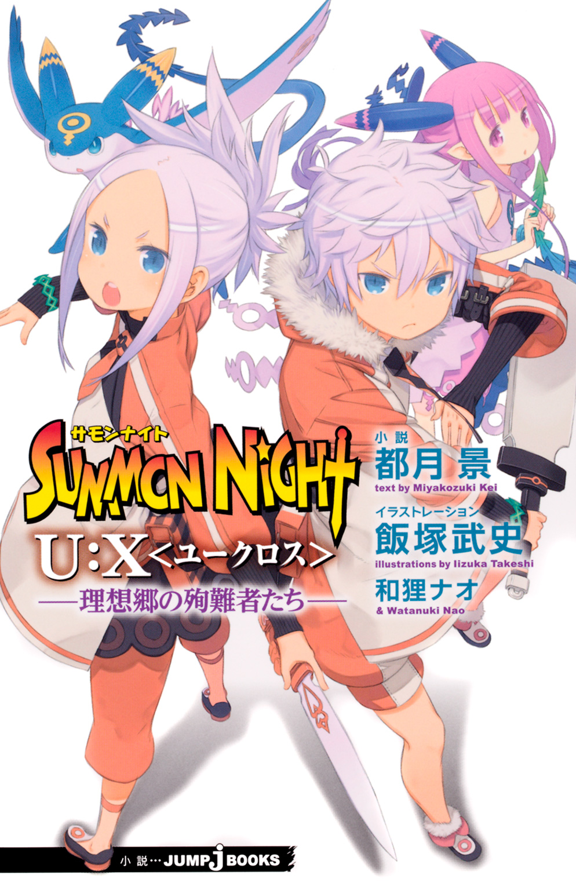
この本は縦書きでレイアウトされています。
また、ご覧になる機種により、表示の差が認められることがあります。
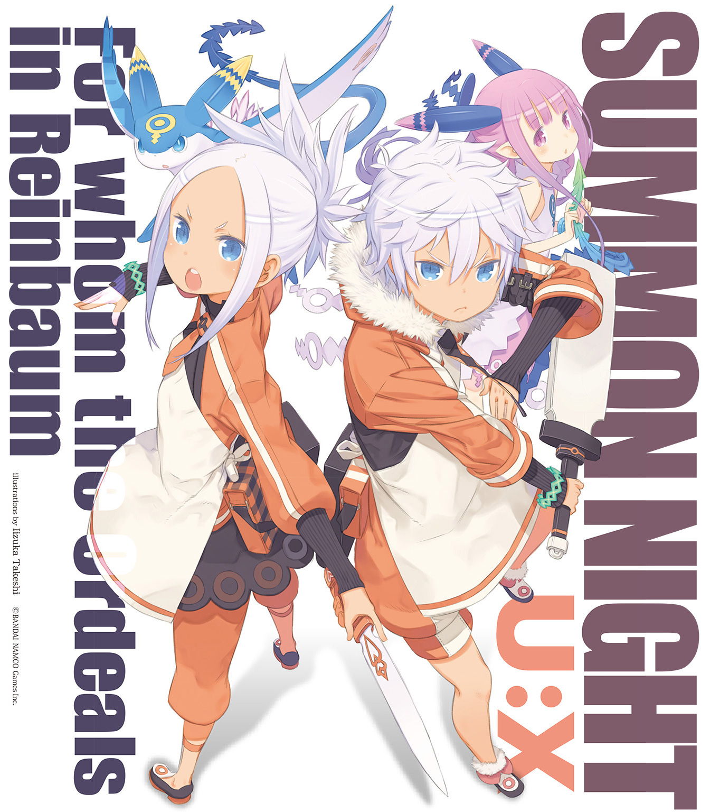
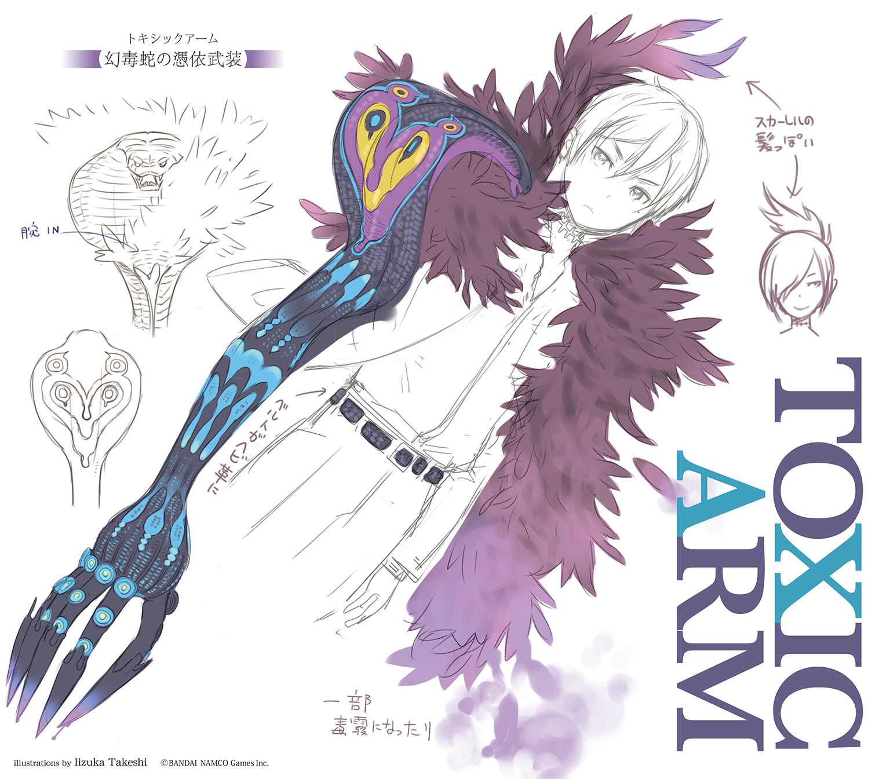
PROFILE
●望月 命（ミコト）
亡魂を操る不思議なカをもつ【制錬者】。シャリマとカイの手により生み出された。
●再誕の制錬者・レイ
【再誕】の力をもつ、もうひとりの【制錬者】。【救世皇帝】を名乗り、リィンバウム全土に宣戦を布告。
●カイロス
ミコトの叔父と称する男。その正体は召喚師でありシャリマとともに【制錬者】たちの生誕に携わった。
●シャリマ（シャマード）
常軌を逸した天才ぶりを示す女召喚師。【制錬者】たちの創造主であり、研究のために今も暗躍し続けている。
●デュウ
兵器としてシャリマに改造された少女。ミコトをかばって落命するが、彼を見守る守護霊となって行動を共にする。
●レックス
教師にして、蒼き魔剣を持つ【抜剣者】。【狂える核識】と戦った。
●ベルフラウ
レックスの教え子にして、炎の魔剣の【抜剣者】。今は【忘れられた島】で新米教師として奮闘している。
●新堂勇人（ハヤト）
界のエルゴたちの加護を受けし【誓約者】。キールによって現代日本から召喚され、魔王と戦った勇者。
●キール
オルドレイクの息子であり、魔王召喚を行おうとした召喚師。ハヤトと出会って改心し、共に【無色の派閥】と戦った。
●バノッサ
ハヤトと敵対していた双刀を操る兇剣士。魔王の依り代として死亡したが、レイの手によって【再誕】した。
●クラレット
【無色の派閥】の名門セルボルト家の一族。キールの姉。
●カシス
【無色の派閥】の名門セルボルト家の一族。ソルの妹。
●ソル
【無色の派閥】の名門セルボルト家の一族。キールと後継を争う。
●オルドレイク
【無色の派閥】の名門セルボルト家の頭領にして破戒の総帥。レイの手によって【再誕】し、彼を新世界の王と崇める。
●ガゼル
サイジェントで暮らすハヤトの仲間。リプレとは幼馴染み。
●リプレ
サイジェントで暮らすハヤトの仲間。家事全般を得意とする。
●マグナ・クレスメント
【蒼の派閥】の召喚師。因果を超える【超律者】を名乗り、【傀儡戦争】にて、仲間と共に悪魔王メルギトスと戦った。
●ネスティ
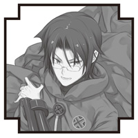
マグナの兄弟子。機界から亡命した【融機人】の末裔であり、その暗い出自は今も彼を思い悩ませている。
●パッフェル
【蒼の派閥】総帥エクスの密偵。その前歴は暗殺者であり【忘れられた島】でレックスたちと戦ったこともある。
●ヤード
【無色の派閥】を離反した召喚師。彼の持ち出した魔剣が【抜剣者】誕生のきっかけとなった。無類のお茶好き。
●トリス
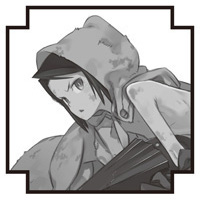
メルギトスに造られた【人造生命体】の少女。マグナと同じく、大罪人クレスメント家の血を引く。
●レシィ
トリスに護衛獣として召喚されたメトラル族の少年。戦いは苦手だが、恐るべき【審眼】の力を秘めている。
●メルギトス（レイム・メルギトス）
奸計と虚言の悪魔王。マグナたちに滅ぼされたが、レイの手によって【再誕】した。人を惑わすことを悦びとする。
●ギブソン
【蒼の派閥】に所属する幹部級召喚師。ミモザとは夫婦。
●ライ
宿屋を営む少年店主。古妖精の血を引く【響界種】として【浮遊城事件】を終結させた。若き天才料理人でもある。
●ミルリーフ
【浮遊城】を守る守護竜。ライを親代わりにして育ったため、彼をパパと呼んで懐いている。
●グラッド
帝国軍に属する駐在軍人。ライたちにとってはよき兄貴分である。
●スバル
【忘れられた島】出身の鬼人族の若者。見聞の旅を続けている。
●ケンタロウ
ライの父親。現代日本の出身であり、妖精に愛されし者
●ギアン
幽角獣の【響界種】であり【浮遊城事件】を引き起こした張本人。【堕竜】と化して暴走したが、ライたちによって救われた。
●ゲック
贖罪の旅を続ける老召喚師。カイロスの師であり、帝国軍の秘密実験施設の責任者だった。ギアンの麾下にいたことも。
●エ二シア
半妖精の【響界種】。かつては姫と呼ばれ、敬われていた。今はライの店で働きながら、平穏な日々を過ごしている。
●リシェル
ライの幼馴染みで、町の名士たるブロンクス家の娘。【金の派閥】の召喚師としてデビューしたばかり。
●フェア
ライの店に助っ人としてやってきた謎の少女料理人。なにやら事情を抱えているらしいが......？
前巻までのあらすじ
マグナたちの前に現れた、新たな敵。
それは倒したはずの悪魔の王・メルギトスであった。
【再誕】したというメルギトスは、マグナが彼の連れていたトリスという少女とともに生まれた人造生命体だという衝撃の事実を告げ去っていった。
悪化する一方の事態にハヤトとマグナ＆ミコトは二手に分かれて行動を開始。
すると聖王都へ向かうマグナたちの前に、トリスが襲いかかり、ミコトにはすべての元凶・シャリマとデュウが立ち塞がる。
圧倒的な力をみせるシャリマに苦戦するミコトだったが、新たな憑依武装・トキシックフォームで対抗。
ミコトを庇ったデュウの犠牲の末、シャリマを退ける。
一方、マグナたちが向かう聖王都では、【再誕の制錬者】レイがリィンバウム全土に向け宣戦を布告。
侵攻を開始するのであった――!!
この小説は、シミュレーションＲＰＧ『サモンナイト５』（発売・バンダイナムコゲームス）の「新生リィンバウム」が形成される以前の時代を舞台にしたオリジナルストーリーです。
この作品はフィクションです。
実在の人物・団体・事件などにはいっさい関係ありません。
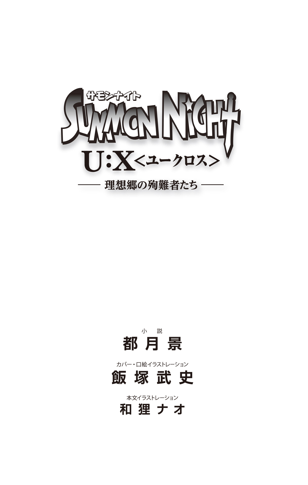
「始まっちゃったね......」
暴力による政変によって帝国という国家を掌握した【再誕の制錬者】レイが、リィンバウム全土の統一という途方もない野望を表明したのとほぼ同時刻、宵闇に飲まれていく遠き空の下で。
今まさに終わりの時が始まったことを、彼女は感じとっていた。
その膝で眠っていた青い竜の子も、顔を上げて、不安げな声で鳴く。
つぶらなその瞳が、自分をいたわってくれていることに気づいて。
「ありがと、リューム。私のことだったら、今はもう平気だから」
そんな竜の子の頭を、フェアは優しく撫でてやる。
心地よさげに目を細める彼の姿を、優しい表情で見つめながら。
「うまくやらなくちゃね......そのためだけに、私はここまでやって来たんだから」
自分自身にそう言い聞かせて、ゆっくりと彼女は立ち上がる。
「さあ......行こう、リューム！」
身軽に彼女の膝から飛び降りた竜の子は、元気な鳴き声で同意すると、走り出した彼女の後を懸命についてゆくのであった。
◆
（冗談じゃないぞ、まったく......）
帝都ウルゴーラから国境の大関所へと続く街道―――にほど近い獣道の只中で。
ライはじっと息をひそめて、周囲の気配を窺っていた。
そのすぐ傍らではミルリーフが、両手で口を覆い、神妙な顔でじっとしている。
（即行で帝都を飛び出したのに、こうも念入りに検問が敷かれちまってるなんて）
突如として町中に出現した巨大スクリーンへと映し出された【救世の英雄】の勿体をつけた演説を、修業先のレストランで目撃したライは、呆気にとられて思わず手鍋をひとつ焦がしてしまった。
教わったばかりの秘伝のソースが台無しになったのもさることながら、上から目線な男の物言いは、反骨心旺盛なライを刺激し、大いにむかっ腹を立てさせるものであった。
ミルリーフを連れて、ミュランス老がやって来たのはそれからすぐだった。
ライの料理の師匠にあたるこの老人は、彼の修業の邪魔にならぬようにと、すすんでミルリーフの相手をしてくれていた。孫にも等しいライの義理の娘をひ孫のように可愛がり、ミルリーフもまた老人にすっかり懐いていた。
今すぐに帝都を出てトレイユに戻れ、とミュランスは命じた。
『ああまで物騒な宣言をした以上、帝国はじきに臨戦態勢に移行するだろう。街道の行き来も制限されて、旅人はその場に足止めを喰らってしまうに違いあるまい』
旧王国との紛争時代を知る老人の言葉には重みがあり、ライは素直に従った。
課程の半分もこなせなかったことは悔しかったが、また機会を作ればよいと老人は笑い飛ばしてみせた。この馬鹿げた政変になんらかの決着がつかぬ限り、先の保証などまるでないのではあったが。
荷物をまとめたライは師匠に深々と一礼し、ミルリーフはお別れのキスをして、夜の帳の中に飛び出した。同様に先を急ごうとする行商人や観光客たちでごった返す正門を横目に駆け抜けて、外壁に面したシルドの木の幹をするする登ると、まっとうではないやり方でウルゴーラから逃げ出すことに成功した。
（裏技、スバルたちに教わっといてよかったな）
仲間と共に見聞の旅をしている鬼人族の青年は、人間ではないという理由から面倒事に巻きこまれ慣れていた。そんな中で学んだ知恵のひとつが帝都におけるこの抜け道というわけだが、安心するのはまだ早かった。
すでに街道には通行規制がかけられていた。各所に緊急手配された軍による検問では、商隊の馬車が抜き打ちで荷の検査を強いられていたり、身元定かではない旅芸人の類などが、尋問のため強引に引っ張られていく姿が見られた。
幼女を連れた若者が大手を振って通れるはずもない。まして、ライもミルリーフも叩けば埃が出てこざるを得ない、まっとうとは呼べぬ境遇の持ち主なのだ。
（俺としては、不本意極まりないんだが......くううう～っ！）
ぼやきたい気持ちを喉奥で抑えつけて、ライはそのまま裏道を辿ることにした。
だが、さすがに国境近辺まで来ると警備のほうも尋常一様ではなくなってきた。
【浮遊城事件】以後の警戒網は厳しく、かつて爆破されかけたこともある大石橋はいち早く封鎖されており、周辺に近づくことさえ難しいという有様である。
「でも、ここを渡らなくっちゃトレイユのお家には帰れないんだよね？」
不安そうなミルリーフの頭を撫でてやりつつ、ライは奥歯を嚙みしめた。
実際そのとおりなのだが、そのためのよい知恵が浮かばない。
（セイロンやシンゲンだったら、しれっと思いついたりするんだろうけど......）
常に真っ向正面突破で生きてきたライには、残念ながら不得意分野である。
救いなのは、そうすることで起きるであろう問題を事前に把握していることか。
（相手は国の軍隊なんだ。力押しで突破したら、間違いなく犯罪者になっちまう）
彼の父親にあたる男はそのあたりを斟酌しなかったせいで、今もお尋ね者として執拗に追われているらしい。クソ親父の轍を踏むのはまっぴらゴメンだった。
さりとて、このままでは埒があかない。
「いざとなったら、ミルリーフがパパを乗せて飛んでいくよ」
「ああ、その時はよろしく頼むぜ」
「うんっ！」
小さく拳を握ってうなずく愛娘に、ライは微笑み返す。
【至竜】である彼女がその本性を現せば、行く手を阻むものなど皆無であることはわかっている。しかし、それは本当に最後の最後の非常手段だ。
（【浮遊城事件】の時、至竜が飛ぶ姿は大勢の人に見られちまってる。軍は正体不明の敵として認識してるから注意しろって、グラッドの兄貴も言ってた）
いやでも目を引く竜の巨体は、隠密行動には適さない。むしろ敵を引きつけて、にっちもさっちもいかぬ危険を招きかねない。
「とはいえ、手持ちの召喚獣は戦い向きじゃない連中ばっかだし......」
あくまで料理修業が主目的だったのだから仕方あるまい。薬箱の代わりとして役立ちそうな面々や、ミルリーフの遊び相手になってくれそうな仲間を連れてきているのだ。
「おお......そうだ！」
ぽんと手を打ち鳴らすと、ライは【幻獣界】の召喚石のひとつを取り出して【召喚術】を行使した。
「出てきてくれ、ホロホロ！」
ホーウという物憂げな鳴き声とともに、白煙の中から姿を現したのは、緑色の羽毛をもつ猛禽だった。嘴の先にちょこんと載っかった眼鏡の存在が、そこらの鳥獣とは明らかに違う知性の高さを示していた。
「アロエリたちのところまで報せに行ってくれないか」
御使いとして守護竜に仕えるアロエリは、空を飛ぶことができる有翼亜人の女戦士だ。小竜の姿に変化したミルリーフ程度の重さであれば、抱えて国境の谷を渡ることもできるはずだ。
「俺だけだったら最悪、谷底を下りて迂回していったって構わないしな」
「んもぉ、パパったらまた無茶なことしようとしてるぅ」
ぷーっと頰を膨らませて、ミルリーフはライを睨む。
「自分のことをもっと大事にしなくちゃダメだって、ミントお姉ちゃんにも怒られてたでしょ......言いつけちゃうからね？」
「非常事態なんだから仕方ないって。勘弁してくれよ」
肩をすくめて、ライが言い訳しようとしたその時。
―――ミギャアオオオオオオォォォォォォォゥ！
甲高い咆吼とともに木々の梢を鳴らして、小柄な獣の影が宙に躍った。
狙いは飛び立ったばかりの梟獣精だ。勢いよく飛びついて、強引に地面に引きずり下ろした。けたたましい羽音と唸り声が静寂を乱す。
「ホーホーさんっ!?」
「待つんだ、ミルリーフ！」
ライの制止は間に合わず、ミルリーフは小さな友達を救うべく駆け出していた。
木立の中から飛び出した帝国軍人が、そんな彼女を指し示して召喚術を放つ。
「絡みとれ―――【潜甲地殻蜘蛛！】
【幻獣界】の魔力が亀裂のような門を開き、そこからのそりと顔を出した巨大な蜘蛛が、粘性のある糸を投網のように吹きかけた。
「ふゃあぁん!? ね、ネバネバぁ......ヤだあぁぁ～っ!?」
たちまち全身を覆い包まれて、すってんころりと転がってしまうミルリーフ。
柔軟な繊維のクッションのおかげで怪我は免れたようだが、愛娘に狼藉を働かれても冷静なままでいられるほど、ライはまだ大人ではなかった。
「いきなりなにしてくれてんだよ、おいっ！」
激しく怒鳴りつけながら、拳を固めて挑みかかる。
子供相手にいきなり不意打ちで召喚術をかましてくるような相手だ。
事情がどうであろうと、一発ぐらいはぶちかましてやるつもりだった。
黒髪の青年軍人は、そんなライに冷めた目を向けると、繰り出されたパンチを最小限の動きでかわし、腰に帯びていた片手剣を鞘ごと抜き放って、カウンター気味に叩きつけてきた。
「ぬおおおぉ～っ!?」
「くぅ......っ!?」
水月に炸裂し相手を無力化させるはずだったその一撃を、ライもまた咄嗟に抜き放った幅広の剣によって受け止め、見事に威力を逸らしてのけたのであった。
のみならず、身をひねった反動でキックを繰り出し、踏みこんできた軍人の脛に痛烈なしっぺ返しを喰らわせている。到底、素人の技量でできる技ではない。
互いに間合いを取って、睨みあう両名。
「お前―――何者だ？」
「そっちこそ、帝国の軍人だったら名を名乗りやがれ！」
「国境破りの狼藉者に名乗る必要は感じないな。さあ、おとなしく逮捕されろ」
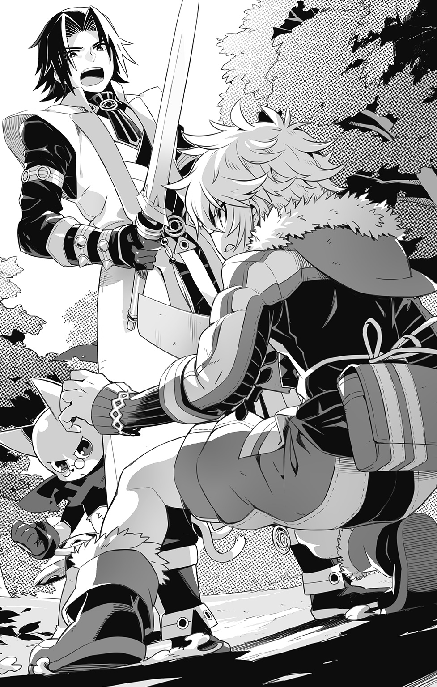
「ぐぬぬ......」
相手が自分にとって面倒くさいタイプであることを確信して、ライは呻いた。
とっとと逃げ出したいところだが、いかんせんミルリーフが捕らわれたままだ。
「事情を説明させてくれって！」
「そちらの都合を斟酌する気はない。任務を遂行するのみだ」
「ぐっ、ぐぬぬぬぬ......っ」
紋切り型のにべもない対応に、やはり力ずくで突破するべきかとライが決断しかけたその時―――聞き覚えのある少女の声が、二人の間に割って入った。
「その人はマルルゥたちのお友達ですぅ！ ケンカしないでくださぁ～い！」
「......マルルゥ!?」
宙に魔力の燐光を散らして木々の間から飛び出してきたのは、花の小妖精であるマルルゥだった。鬼人のスバルや犬型亜人のパナシェと共に旅する仲間である。
「あやや、ご無事でよかったですよぅ」
にこにこ笑顔で挨拶してきた彼女を前に、ライは目をまるくするばかりだ。
「ほら、動かないでじっとしててね。すぐに出してあげるから」
「ううぅ～っ」
見ればミルリーフを絡めとっていた網は、そのパナシェによって除去されつつある。ライの視線に気づいたパナシェは軽く会釈してから、作業の手を早める。
さらにその後ろから、近づいてくる大きな影がふたつ。
「なんつーか......つまりさ、この人たちが前に言ってた帝国軍の知り合いなんだよ」
頭をかきつつ、スバルがライに説明する。
「帝国軍陸戦隊所属・独立国境警備部隊【紫電】二代目隊長―――ギャレオだ」
老いてもなお筋骨隆々とした体軀を誇る強面の軍人が、厳かに名乗った。
「部下が無礼を働いた旨、お許し願いたい」
「自分は、職務を忠実に果たしただけです」
不満げにそう述べる青年軍人を、ギャレオと名乗る老軍人はため息とともに諫めた。
「意固地になるな、ウィル。全てを規律のみで判断することは不可能であり、柔軟に対応することも時には必要だ。杓子定規も過ぎると、かつての俺のように仏頂面の朴念仁になってしまうぞ」
「......了解しました。以後、心がけるようにいたします」
そう言ってから、ウィルと呼ばれた青年軍人はライに向き直った。
「非礼をお詫びする。自分の名はウィル・レヴィノス。ギャレオ隊長の副官として【紫電】に所属している」
「お、おう......」
聞けばライの召喚術の魔力に反応して、彼はここにやって来たらしい。
密偵の類と判断し、連絡手段に放たれたと思われるホロホロを確保し、速やかに捕縛しようとしたわけだ。
「ホーホーさんは無事だったよ、パパ！」
呼ばれてミルリーフに目をやれば、ホロホロは彼女の腕に抱かれていた。
その隣に二足で直立する子猫のような幻獣が、さっきの襲撃者の正体のようだ。
皮の胸当てにマフラー、そして眼鏡が印象的なそいつの名はテコだ―――とミルリーフが教えてくれた。どうやらウィルの護衛獣らしい。
「そういう事情ならこっちも謝んないとな。まぎらわしいことして悪かったよ」
素直に頭を下げたライを見て、軍人たちは意外そうな顔をした。
「ね？ 悪い人じゃないですよ、ライライさんは」
「だーかーらーっ、ムダに二度繰り返さなくていいって言ってんだろ。マルルゥ」
「あややや......」
急速に緊張感が失われつつある状況に、咳払いをひとつして、ギャレオは言った。
「ともあれ、いったん同行してもらえないだろうか。帝都の様子を聞かせてもらえるとありがたいし、我らの上官もきっと君たちに関心があると思うのだ」
「上官って......ことは、もしかしてスバルがよく名前を出してた？」
そうだぜ、とスバルはうなずいた。
「アズリア・レヴィノス将軍。ずっと昔に俺たちのいた島で知りあってから、いろいろあって今もよくしてくれている、心強い仲間なんだ」
◆
聖王都ゼラムは、すでに戦乱の予感でざわめき始めていた。
意図的に全方位に拡散された【救世皇帝】レイの演説は、つまるところ他の二国家に対する宣戦布告でもあったのだから。
かつての【傀儡戦争】において、後手に回ったことで被害を拡大させてしまった苦い経験をもつ聖王国が、官民問わず速やかに有事に備えようと動きだすのは、むしろ当然というものであった。
「そう、当然なんだ。だからこそ意図が理解できないんだよ」
糖蜜漬けのリーチェの実がたっぷり載ったタルトをかじりつつ、ギブソンは真顔で後輩たちにそう言った。その隣では相棒にして生涯の伴侶であるミモザが、亭主の極端な甘党ぶりに、げんなりとした視線を向けている。
【蒼の派閥】の総帥直轄の手勢として働く際に貸与されていたこの屋敷は、今は正式に夫婦の持ち家になっている。結婚祝いということらしいが、むしろ師範となって本部につめてばかりいる二人に、引っ越しという余計な手間をかけさせぬための配慮だと思われる。
「えっと......どういうことですか？」
マグナが問い返す。
その視線が一瞬、傍らにいるはずの兄弟子の説明を求めて泳いだのは仕方あるまい。あのネスティがマグナのもとから離反したという事実は、先輩としてつきあいの長い彼らにしても、到底信じられるようなことではなかったのだから。
まして幼年期から本当の兄弟同然に過ごし、幾つもの過酷な試練を共に越えてきたマグナの心中は、けして穏やかではないだろうとミモザは思っている。
（こういう時に支えてくれるはずの彼女も、呪いのせいでそれどころじゃなくなっちゃっているし......）
【再誕】した大悪魔による呪詛は、敵の気質そのもののように狡猾かつ執拗で、生半可な解除の手段など受けつけぬものであった。今は派閥の幹部召喚師であり、【霊界】の召喚術を専門とするグラムスが、必死に解呪の糸口を見つけるべく奮闘してくれている。無論、総帥であるエクスが全面的な支援を約束してくれた結果であることは言うまでもない。
過去の様々な経緯はさておき、彼らの厚意にマグナは素直に感謝していた。身辺警護も含めたアメルの世話については、エクスの密偵であるパッフェルと、マグナたちの師にして保護者でもあるラウル師範が引き受けてくれた。両名ともアメルとはすでに面識があるため、安心して彼女も静養できるはずだ。
『お前たちの望むことがかなえられるよう願って、わしはここで見守らせてもらうよ』
自分の後継者と決めた義理の息子がとった行動について胸を痛めつつも、彼はあえて今までどおり、子供たちを信じて待とうと決めたのだ。その決意はまた、傷ついていたマグナの心にとっても温かな救いとなった。
ずっと傍らで見ていたミコトには、少なくともそう感じとれた。
ちょっとだけうらやましく思ってしまうくらいに。
そんな気持ちが表情に出てしまっていたのだろうか。
（......さみしい？）
デュウの思念が、心配そうに囁きかけてきた。
ミコトと同じく人造兵器として造られて、彼をかばって死んでしまった少女。
今はミコトの守護霊となって、常に傍らで見守ってくれている存在だ。
（うん......でも、今は平気だよ。デュウが側にいてくれるからね）
心の中でそう応じると、くすぐったくて暖かな波動が背中越しに伝わってきた。
ぎゅっと抱きしめられたような心地よさが、隙あらば忍び寄ってこようとする冷たい孤独を払いのけてくれる。おかげで、今のミコトは強くいられるのだ。
そんなことを思い返していると、沈黙に焦れたのか、ミモザが口を開いた。
「馬鹿正直に宣戦布告をしたせいで、相手に抵抗の準備をする猶予を与えてしまっているってことよ」
「あ......！」
彼女の指摘で、少年たちはようやく気づいた。
「確実に勝ちたいんだったら先手をとって、不意打ちだまし討ちを仕掛けたほうが絶対にお得でしょ？ まして相手には......【再誕】だっけ？ ともかく、復活したオルドレイクやメルギトスとか、そういうの得意な面子が揃ってるワケなんだし」
「言われてみれば......」
かつてその双方と戦った経験にもとづくミモザの考察に、マグナも大きくうなずいた。
たしかに、これは彼らのやり口らしくない。だとすれば―――。
「おそらくは【救世皇帝】とやらの指示によるものなのだろうな」
そう言って、ギブソンはミコトに視線を向けた。
「ミコトくん、同じ【制錬者】として何か心当たりはないかな？」
ミコトの出自やこれまでの経緯については、すでにマグナによって【蒼の派閥】に報告済みだ。厳しく問いつめられるものと覚悟していたミコトだったが、帝国による宣戦布告という非常事態も重なって、当座は保護責任者であるマグナに従うことを条件に行動の自由を与えられることとなった。
眼前の危機に対処するために協力を惜しまぬことという条件つきではあったが、元々そのつもりであった彼にとっては何の問題もない。
が、この問いかけに対しては、ミコトはかぶりを振るしかなかった。
「すみません。俺と彼は【制錬者】として覚醒する以前に事故で生き別れて、今日まで全く面識がないから......」
そもそもこんな事態にならなければ、互いが存命であることさえ知らずにいたに違いあるまい。誤解からハヤトと敵対することになった件も、よもや自分と同類の存在がいるとは思わなかったからこその混乱であったのだから。
「そうか......。いや、すまない。手がかり欲しさのあまり、つい尋ねてしまった」
「いえ、気にしないでください！ 俺も、なにか役には立ちたいんですが......」
今できるのはせいぜい、おぼろげに相手の【制錬石】の魔力を感じとれる程度。
これでは、相手の居所をナビすることさえおぼつかない。
（れんしゅうがたりてないんだよ。ミコト、ちゃんとくんれんしたことないもの）
さも当然とばかりに、デュウが指摘する。
（たしかに、いつもギリギリの出たとこ勝負ばっかりだったもんな）
生き延びるために必死で力を引き出してはきたものの、なにがどれだけできるのか、じっくりと己の能力を見極めようとしたことはこれまでなかった。
「ちょうどいい機会なのかもしれないな」
いずれにしろ、情報が錯綜しているこの状態で無闇に動き回るのは無謀すぎる。しばらくはここに滞在して事態を見極める必要があるだろう。
ならば、その待ち時間を有効に活用してやろうとミコトは思った。
◆
「まさか、貴方がすすんで我々の軍門に降ってくださるとは思いもしませんでしたよ」
手燭によってぼんやりと照らし出された、薄暗い部屋の中。
感に堪えぬといった風情で、レイム・メルギトスは予期せぬ客を歓迎した。
そんな彼に対して、ネスティは不本意そうに言い返す。
「別に、僕はお前に屈したつもりはない」
「はいはい、そうでしょうとも」
承知しておりますよ、と悪魔の王はうなずく。
「かつて貴方は私の誘いをにべもなく断った。憎くてたまらないこの世界であっても、マグナさんたちが生きている場所だから大切なのだと、臆面もなく言い切った」
せっかく、人間の醜さの極みを見せつけてあげたというのに。
「そういえば、あの惨めな成り上がりはどうなりました？ 死にましたか？」
「アメルが救ったよ。今はグラムス様の監督下で、派閥の裏方を務めているはずだ」
「それはそれは―――つくづく余計なことをしますね、あの小娘は」
舌打ちするレイムを、ネステイは諫めようとはしなかった。
実際、彼もそう考えてしまったことがあったのだから。
物心ついた時から繰り返されてきた虐待の数々は、彼の心に今も消えぬ疵痕を穿ち、時に悪夢となって責め苛む。
この手で殺してやりたいとさえ願った相手が救われた事実は、不条理として今も彼の心にわだかまっている。これで良かったのだと理性で抑えつけることはできても、暗い感情はどうしても捨て去れない。これが自身の欠陥なのだろうとネスティは信じ、同時にそれが仲間たちに発覚することを恐れ続けていた。
（僕は―――許せない―――許すことができない―――）
どこまでいっても、人間らしくなれない―――だって、人間ではないから。
後天的な理由なのか、あるいは初期不良だったのか。
生来希薄なはずの感情を、必要以上にもてあましてしまった【融機人】。
（どっちにしても、欠陥品には違いない）
自嘲めいた想いに、その唇がぎこちなく歪む。
そんな彼の内奥からにじみ出る陰りの色を、銀髪の悪魔は愉しげに見つめる。
今にも破裂してしまいそうに危うい緊張を湛えたライルの末裔の心。
その姿は、クレスメントのそれとはまた異なる色彩によって彼を蠱惑し、ぞくぞくするような愉悦を与えてくれるのだ。
「ならば、どうして......お前は僕を招き入れた？」
服従どころか反抗の因子をもつ者を自陣に招き入れて、なぜ平然としていられる。
「どうでもいいんですよ。定石とか、損得とか、そういう些末事は」
彼にとってもっとも重要なのは、いかにして再び得たこの生を満喫するかという一点のみ。
「本当ならば、この遊戯は終わってしまっていたんです。私がいくら敗北を認めなかったとしても、あのままでは貴方たちと完全決着をつけることはできなかった。圧倒的に時間が、生命が足りなかった......」
それではイヤだったのだ、とレイムは歯嚙みした。
「私は、貴方たちと遊びたかったのですよ！ 小癪なアルミネの存在すらも含めて、貴方たち全員を相手どり、完全無欠の勝利を勝ち取りたかったのです!!」
それが執着であることを、ネスティは即座に理解できた。
くるおしく、歪んだ愛情。
憎くて、愛しくて、忌まわしくて、それでも手放せない。
「だからお前は、あえて【再誕】を受け入れたのか......」
大樹によって稀釈されようとも、世界中の悪意を完全に消し去ることはできない。
微弱な澱が積もりに積もっていけば、メルギトスはいずれ自力で復活できたろう。
誇り高き悪魔の王が、【制錬者】の麾下に屈する必要などなかったはずなのに。
今を生きる彼らとの遊戯を続行するためだけに、彼は矜持を捨てたというのか。
「誇りなんてものは個々の美意識の延長、対外的な自己満足の表出に過ぎません」
メルギトスは皮肉げに笑う。
「なればこそ、まず私自身が満足できなくては意味がない。格好をつけたせいで欲しいものをとりっぱぐれてしまうのは、あまりにも滑稽で惨めじゃないですか」
それがわかっていたから。
「貴方も欲しいものを奪いとるために、こちら側にいらっしゃったんでしょう？」
交差した両者の眼差しは、互いに小揺るぎもしなかったけれども。
その奥にある激しい餓えめいた情動を、確かに感じとっていた。
「僕が、お前の手から彼女を救いだそうとしていることを承知のうえで、麾下に置くと？」
「他の連中を黙らせるために必要な最低限の恭順と、私の喉を潤すための美酒として、その身を削り続けるという覚悟があるのならば」
「............」
逡巡することなく、彼は自身の手でその首筋を露にして見せた。
病的に白いその肌に刺青のごとく浮かびあがっていく機械仕掛けの紋様。
爛々と目を輝かせながら、悪魔は、その内奥に秘められた濃くて苦い罪の記憶に満ちた血潮をすすって、満足そうに喉を鳴らすのであった。
◆
ひっそりと静まりかえった屋敷の中庭にて、降り注ぐ月明かりに照らされて立つ一組の男女の影があった。
「こんなところに呼び出したりして、どういうおつもりですか？」
非の打ち所なき笑顔にごく僅かに毒素をまぶして、彼女は眼前の少年に問うた。
「わざわざ付け文をいただくほど、私たち親しくはなかったと思うんですけど～」
「そんなに警戒しないでくださいよ、パッフェルさん」
頭をかきかき、ミコトは彼女に釈明した。
「確かに手紙を出したのは俺ですけど、それは代筆みたいなもので、貴女に用事があるのは俺じゃないんですよ」
はあ、と胡乱なものを見るような目を向けてくるパッフェル。たまらずミコトは、この機会を彼に要求した張本人に向かって、投げやりな声で訴えかけた。
「ちゃんとお膳立てはしましたから！ あとの説明はよろしく頼みますよ！」
背後に向かってわめき立てた次の瞬間、少年の身体ががくっと脱力する。
「......ちょ!?」
慌てて駆け寄り、抱きとめようとした彼女の動作は、その半ばで急停止した。
ミコトの掌中からほとばしる【追想】の暗き光に照らし出され、その背後に陽炎のように浮かび上がった、懐かしき人の姿を目の当たりにしたから。
「スカー......レ、ル......」
『元気そうね』
【珊瑚の毒蛇】の異名をもつ、同じ組織の暗殺者として、かつて【茨の君】と呼ばれた彼女を陰日向に支えてくれた恩人。無下に突き放してばかりだったその優しさが、かけがえのないものであることに気づいたのは、献身の果てに取り返しのつかぬ手傷を負った彼が、自分の前から姿を消してしまってからだった。
結局、死に目にさえ会えなかった。
「なんで、今更......？」
あふれ出した涙はたちまち、彼女が新たな人生を歩むために意識して作りあげてきたなりたい自分を押し流し、その下にずっと隠してきた臆病で罪にまみれた本当の自分の姿を露にしてしまった。
「ずっと、ずっと捜していたのよ!? 黙っていなくなったりして......いつだってそう！ 私の周りの男たちはみんな格好ばかりつけて、置いてけぼりにされるほうの気持ちなんて、まるっきり考えもしないで......っ！」
泣きながら彼女は叫び、少年の身体へとしがみついた。そのままへたりこんで、ずっと解放されぬままでいた十何年分もの後悔の気持ちをほとばしらせる。
『ごめんね......』
触れられぬことは承知のうえで、そんな彼女の震える背中を彼はかき抱いた。
その声もまた、微かに震えていた。
あくまで人間としての領分で自身の死を受け入れる―――時を凍らせれば永遠の生命を与えられるというメイメイの誘いを蹴ったことを、スカーレルは後悔していなかった。遠き日に王と交わした約束によって、この世界の行く末を見極めるという重荷を背負ってしまった彼女を哀れとは思ったが、終わりの見えぬ無限の日々を共に生き続けていくだけの気力はもうなかったのである。
『臆病だったのよね、結局のところは』
母として子を守るため、必死に生きることを望んだ彼女のようには振る舞えなかった。くたくたに疲れ果てて、そのまま眠りたいと願った。
『そのくせ結局―――未練が残ってこの有様よ』
全ての執着を捨てることはできず、亡魂となってふらふらと彷徨っていた彼は、【制錬者】の放つ魔力に惹かれて、彼を助ける力のひとつとなった。
自分以外の誰かを救うために必死に意地を張り続ける少年の姿が、かつて自分が愛おしく思ってきた者たちの姿とダブったから。
『我ながら、成り行き任せにも程があるとは思ったけどね』
でもね、と毒蛇は満足げに微笑った。
『おかげでこうして、心残りのひとつだった貴女と再会することができたわ』
「............」
『ねえ―――貴女は今、幸せを感じてくれているかしら？』
不安げな彼の問いかけに対して、手の甲でごしごしと目元を拭ってから、彼女はとびきりの笑顔を作って返事をする。
「幸せですよ......今こうやって、先立ってしまった貴方と再会できたことも含めて」
ありがとうございます、とパッフェルは嗚咽混じりに言った。
「たとえかりそめのものであっても、貴方やみんなにつないでもらったこの生命。最後の最後まで、私は大切に使っていこうって思っていますから」
「まぁーすぅーたぁーっ♪」
村の門をくぐるやいなや、ハヤトに向かって一目散に駆け寄ってきたのは、垂耳兎型亜人の娘だった。レビットは兎型亜人の原種にあたる一族であり、最も旧き五種族のひとつにも数えられる存在だ。
が、件の彼女はそんな威厳などまるで感じさせぬ満面の笑顔で、久々に顔を見せた御主人さまの胸に飛びこもうとして―――盛大にコケた。
「うにゅううううう......っ」
「ああ、もう。何やってんだよ、モナティは」
出会った頃からちっとも変わらないそのドジっぷりに苦笑しつつ、ハヤトは転んだ彼女の手をとって助け起こすと、服についた泥を手早く払ってやった。
自らハンカチを取り出して、滲んだ涙と鼻水をぬぐった点には進歩を感じなくもないが、これで子供たちのお手本となる保育士が務まるのか、とちょっぴり不安になってしまう。
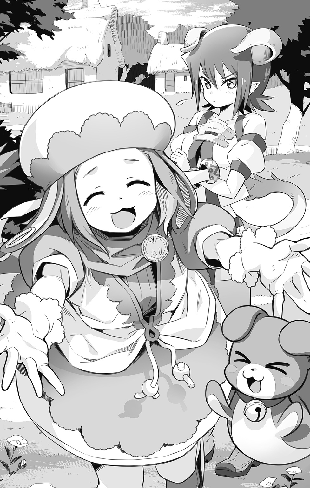
そう。彼女は今、保育士として様々な種族の子供たちの面倒を見ているのだ。
元の世界に帰る手段を失ってしまったはぐれ召喚獣たちが集う開拓村として、無残な廃墟から見事に復興再生を遂げた、このレルムの村で。
「えへへっ、お久しぶりですの。マスター♪」
抱きついて甘えるモナティの頭を撫でてやっていると、少し遅れて他の出迎えの面々がやってきた。
「ああもう！ アンタはいい年齢して、いつまでも御主人さまに甘えてんじゃないわよっ」
「うにゅうぅっ!? 耳ぃっ、引っ張らないでくださいぃ、エルカさぁ～ん」
つかつかと大股で歩み寄ってきた赤毛の羊角型亜人の女性が、情け容赦なくモナティの耳をつまみあげて、ハヤトから引っぺがす。
彼女の名前はエルカ。モナティ同様、行く当てをなくして彷徨っていたところをハヤトに救われた存在だ。歳こそ近いが性格はまるで正反対という二人だが、なんだかんだと長いつきあいを経て、良き相棒として周囲からは認知されている。
「エルカも相変わらず、元気そうでなによりだ」
「アタシはこいつとは違うんだからっ！ ちょ、頭なんか撫でられたって別に......」
憎まれ口を叩いてはみたものの、髪を撫でるハヤトの手を払いのけようとはしないあたり、なんだかんだで再会を喜んでいるのは間違いないようであった。
―――きゅーっ♪
そんな三人の足下を、きゅーきゅーと鳴いて跳ね回るのは軟獣精のガウムだ。モナティと同じサーカスにいた【幻獣界】の幻獣で、小さな身体でありながら彼女のドジを全力でフォローしてくれる、頼もしい味方だ。
「再会を懐かしむのは、彼が用事を済ませた後にしてあげてください。モナティさん」
苦笑気味に割って入ってきたのは、青く染めた前髪が特徴的な人間の男性だった。
「お久しぶりです、ハヤトさん」
「久しぶりだね、ロッカ」
旧王国に滅ぼされてしまった旧レルム村の時と同様、復興したこの村でも自警団の長を務める彼は、聖女アメルの義兄として、かつて【超律者】マグナと共に戦った仲間の一人だった。サイジェントからの移民を受け入れる過程で、ハヤトとはすでに面識がある。
「カムラン学園長のところへご案内しましょう。アグラバイン村長もお待ちです」
歩きながら、二人は早速、互いの知る情報の交換を始めた。
「使いのテテが運んでくれた先触れの手紙は読みました。ご希望どおり、無線機はいつでも使えるようにしてありますが―――」
「うん。みんなに警告を飛ばすよりも早く、事態は動きだしちゃったみたいだな」
実力行使による救世皇帝レイの帝国の掌握と、それに続く大陸全土に対する侵略宣言は、聖王国の辺境にあるこの村にも、すでに伝わっている大事件であった。
「政治的には問答無用の一点張りだと、ファミィ議長がおっしゃっていました。文句があるなら正面から武力でねじ伏せて止めてみろ―――そう言ったきり、あらゆる交渉の提案も受けつけてはくれないようで」
「らしいといえば、いかにもな感じがするよ。俺と対峙した時もさ、【再誕の制錬者】はなんか品定めでもするかのように、すげえ上から目線で喧嘩を売ってきたしさ」
「ははは......」
軽口に合わせて笑いはしたものの、ハヤトがこの件で心身に手ひどい傷を負わされたことを、ロッカは知っていた。サイジェントの街から単身出奔し、つい先日まで行方知れずであったことも。彼を捜しにやってきたアカネの口から聞かされていたから。
だからこそ、自らここにやって来ると知って安堵したのだ。
「彼女たちも、ああ見えて随分と心配していたんですよ」
離れてついてくるモナティたちのほうを見やってから、ロッカは静かに告げた。
「うん、わかってるよ。俺が一人で飛び出したせいで、みんなに心配かけたことは」
それについてはハヤトもなあなあで済ますつもりはない。面と向かって事情を説明したうえで、きちんと一人一人に謝るつもりだ。
けれど今はまず、【再誕の制錬者】の脅威について皆に報せるのが先であった。
◆
「おお、お前が噂のライだな。こうして直に会える日を愉しみにしていたぞ」
案内された野営の天幕に入るなり、凛々しい響きをした女性の声が彼の名を呼んだ。
上級軍人にのみ着用が許された銀の刺繡入りの軍服に包まれた身体は、ほっそりとしていながらも引き締まっていて、歴戦をくぐり抜けてきた者特有の精悍さを漂わせている。
微笑みを浮かべる口元や目元には重ねてきた年月の証が見てとれはしたが、むしろそれらは将軍としての彼女の風格を構成する要素として、その魅力の一端を担ってさえいた。
「はじめまして、アズリア将軍」
ややかしこまって、ライもまた挨拶した。傍らのミルリーフもぺこりと頭を下げる。
（ギブソンさんとミモザさんの結婚式じゃ会えなかった人だもんな）
いくら無礼講であったとはいえ、さすがに聖王国の首都に帝国の名だたる将軍が赴くわけにはいかず、祝いの酒肴を贈る形で彼女は新たな夫婦の誕生を祝福してくれた。
珍味である漉塩魚を十数匹分、オウキーニと共に延々さばいたのは、ライにとってもなかなかに印象的な思い出となっている。
「スバルたちからいろいろ話は聞いているぞ。どんな厄介事もはねのけてしまうやんちゃぶりとのこと。我が麾下の【紫電】が国境地帯の警備についている以上、いずれ出くわすこともあろうと思っていたんだが......」
なんだかんだで今日この日まで、縁のないままだったのは幸いであったかもしれない。
「まあ、結局はこんな形で呼び止めてしまうことになってしまったんだがな」
優しくミルリーフの髪を撫でていた手を止めると、穏やかだった彼女の面差しが不意に、指揮官としての威厳に満ちたそれに変わった。
「先日、我々が傍受した通信文を読んでやってくれ、ウィル」
「かしこまりました」
義母にして最上官でもある彼女の要請に、彼は応えた。
それは帝国軍固有の盗聴防止コードを用いて放たれた警告のメッセージだった。
「発信者の名はゲック・ドワイト―――学究都市ベルゼンにおける軍の秘密研究機関にて、総責任者を務めていた召喚師であり、当該施設での爆発事故により、長らく生死不明とされてきた男のものでした」
「な......っ」
予想もしない名前を突きつけられて、絶句するライ。
「【浮遊城事件】にまつわる裏の事情や顚末については、我々もおおよそ把握している。必死に隠してきたお前たちには悪いが、看過もできぬ大騒動だったのでな」
目を白黒させているライに向かって、スバルが片手で拝んでみせた。
つまるところ、情報源は彼らというわけだ。
が、ライは別に腹を立てたりはしていなかった。
「バレずに済むなんて思っていなかったし、別に構やしないよ」
グラッドの兄貴は必死に辻褄合わせをしてくれたけれど、隠蔽するには最初から無理があったのだ。それに、アズリアを信用できる相手と見こんだからこそ、スバルたちも秘密を明かしたのであろうことは理解できる。
「本気で捕まえるつもりだったら、とっくにそうしてるだろうしさ」
あけすけなライの物言いに、くすりとアズリアは笑った。
「ゲック―――【教授】の異名をもつ老召喚師が、帝国や旧王国の辺境地帯で何度か騒ぎを起こしているのは把握していた。事を構えた相手が犯罪組織や外道召喚師の類であったことと、ある意味帝国では腫れ物扱いになっている冒険者の一行が絡んでいたことから、様子見の段階でとどめてあったのだがな」
「ねえ、パパ。それってば、もしかして......」
「あーあー聞こえなーい！ 聞きたくなーい!!」
愛娘の鋭い指摘に、耳を塞いでかぶりを振って、全力で拒絶しようとするライ。
しかし、それでは話が進まない。不承不承、認めるしかない。
「【恒久指名手配犯】ケンタロウとその一味―――子連れというのには驚かされたぞ」
「双子の妹は、とばっちりを受けてるだけだよ。病気を治す方法を探すためにクソ親父にあちこち連れ回されて、友達とまともに遊んだこともないんだぞ」
ギャレオの発言に不機嫌さを隠そうともせず、ライはそう吐き捨てた。
「皇族の別荘誘致にまつわるトレイユの暴動事件については、醜聞ゆえに記録が乏しくてな。数少ない資料ですら意図的に改竄されているかもしれぬというていたらくなのだ」
「とはいえ、彼の父親が帝国軍に敵対した犯罪者という事実に違いはありません」
「......っ！」
杓子定規なウィルの物言いに、思わずライが眉をいからせる。
「言葉は吟味しろ、ウィル。真実のみを絶対の剣として振るうだけでは、その陰に隠れているより大きな悪意や、かけがえのない宝物たちまで見逃してしまうぞ」
「―――すみませんでした」
アズリアにたしなめられて、不承不承、うなずいて謝罪するウィル。
そんな彼の姿に、若き日の不器用な自分の姿をアズリアは重ねている。
（今はまだ納得できなくていい。受け入れる心のゆとりを忘れずにさえいてくれれば、な）
軍規や法令を絶対として守ることは、帝国軍人として当然のことだ。
けれど、それだけでは裁ききれず、守りきれぬものがある。
（私は、それをあいつに教わった―――ひとつの絶対的な正義では、多様な個々の正義を抑えつけることなどできない。真っ直ぐであろうとするほどにぶつかって、逆に歪みを生み出してしまうのだということを）
むしろ、それら全ての切っ先を包みこんで、受け入れることのできる強さ。
背反や矛盾すらも丸ごと認め、絶対不変の唯一無二ではなく、その場その場で常に最適の解を探し続けていくということ。
（それがお前の選んだひとつの答えだったな、レックスよ......）
数奇な星の巡りに導かれて、今や自分とは異なる時間の流れに身を置いている級友。
顔を上げて、彼女は思いを馳せる。
遠き島にあるはずの彼と、そのもとで贖罪の日々を今も生きる、たった一人の弟のことへ。
◆
「おとしゃまーっ、あにしゃまーっ、お弁当もってきたよーっ！」
抜けるような青空の下、幼い少女の元気な声が響き渡る。
【忘れられた島】―――【鬼妖界】集落・風雷の郷のはずれに広がる田畑の一角である。
「おう、ひとやすみにするかい」
少女の父親にあたる年配の鬼人族の男性に呼びかけられたイスラは、鍬を振るっていた手を止めると、首から提げていた手拭いで額の汗を拭った。
「はい、そうさせてもらいます」
病弱ゆえに色白だったその肌は、以前と比べてほんの少しだけ血色がよくなったように見える。日々の野良仕事で陽の光を浴びるうちに、自然と体力がついたのかもしれない。
「はい、おむすびっ。今日はかかしゃまに教わって、イブキがこしらえたんだよっ」
得意げに差し出された握り飯は、なるほど歪な形ではあったが、彼女の愛情がたっぷりとこめられているかのようだった。
ありがとうと破顔してから、イスラはそれを頰張った。塩をふって海苔を巻いただけの素朴さがかえって米粒の滋味を引き立てて、疲れた身体へと心地よく染み渡る。
（ああ、物を食べるのって、こんなにも幸せな気分になれることだったんだなあ......）
以前の彼にとって、食事とはか細い生命をつなぐための必要手段でしかなかった。消化しやすく栄養素があるものをどれだけ効率よく摂取できるか―――顔もよく覚えていない医者からの指示に彼の好みの入る余地などなく、仕事と割り切って調理と給仕をするメイドたちに、温かな食卓の団欒を期待するのは無理な相談であった。
（でも、アズリア姉さんが内緒で持ってきてくれたビスケットやプラムケーキは、ちゃんと美味しいって思えたっけか）
割れたり潰れたりしていても、姉と分けあって食べる秘密のおやつは格別の味がした。病人食だけでは補えない心の栄養をもらっていたのだと、今ならば理解できる。
（それはこの人たちも同じだ。取り返しのつかぬ悪事を犯してしまった僕を、こうやって受け入れてくれた。悔いに塗れて過ごすだけの贖罪の日々ではなく、もっと生きることを楽しんでもいいのだと教えてくれた）
今もなお忘れはせぬ、彼女らとの出会いの記憶をイスラは思い出す。
他の集落と比べて、【鬼妖界】の集落・風雷の郷の朝は早い。
ひとえにそれは、稲作や畑作といった様々な農作業を行っているためである。
生活に困窮しているというわけではないのだ。
ただ普通に食べていくだけなら、島にある果実だけでも充分だし、【幻獣界】の集落の面々は実際そうしている。自然のもたらすものを享受して生きてゆくという亜人たちの文化は、必要なものを必要なだけ得る以外には、自然に干渉することを好まないのだ。
対照的に【鬼妖界】の住人たちは、創意工夫すること自体を楽しむ気質がある。
ひと手間かけて便利にしたり、美味しくしたり、面白くしたり。
彼らがこうして田畑を耕しているのも、そういった考え方の延長線上にあるものだ。
どうせ生きていくのならば、故郷と同じ料理を食べ、ならわしを守って暮らしていこう。
この郷をまとめあげた故人の掲げた理念は、その妻にして二代目の郷長である鬼姫ミスミによって受け継がれて、今でもこうして脈々と続いているのだった。
そんな風に野良仕事にいそしむ人々の輪からは、明らかに距離を置きつつ。
イスラはたった一人、黙々と荒れ土を掘り起こし続けていた。
誰に頼まれたわけでも、ましてや命じられたわけでもない。
それは彼自身が考えた末に辿り着いた、彼なりのひとつの答えだったのである。
【不滅の炎】の継承という出来事を経てから、彼は心身共に見違えるほどの復調をみせていった。かつてはベッドから起きあがることさえ難事であった身体は、こうして農具を振るえるまでに回復し、取り返しのつかぬ過去から逃がれたい一心で封じこめていた記憶も、今ではその罪ごときちんと受け入れて、逃げずに乗り越えようとしている。
保護者であったレックスのもとを離れると決めた彼は、今はヤードが所有する風雷の郷の庵に間借りすることに決めた。今一度、本当の自分を取り戻したいと願っているイスラは、陽だまりのような優しさよりも、向かい風のような厳しさこそを欲したのである。
そんな彼の願いは、実際のところ充分すぎるほど叶えられることになった。
郷長であるミスミの顔を立てて、面罵したりはしなかったけれども。
集落の者たちは皆、イスラのことをいないものとして扱った。
無理もあるまい。彼はかつてこの郷に火をかけ、住人たちを人質にとりさえしたのだ。
幸いにして死人こそ出なかったものの、深手を負った者や死ぬほどの恐怖を味わった者は数知れず、全ての元凶たる彼を未だ許せずにいるのも至極当然というものであった。
最初はともかく、必死になって謝り続けた。
まともに耳を貸してもらえなくても、憎悪や恐怖の眼差しを向けられても。
自分自身がその非を認めて、悔いていることだけは伝えようとした。
だが、そうして自分の気持ちが伝わったとしても、それだけで許しを得られるものではないことをイスラは理解していた。だから、贖いたいという意志を形で示そうとした。
それが日課となったこの作業―――放置されたままの荒れ地を新たに開墾して、作物を育てられる田畑に作り替えるという、気の遠くなるような試みだったのである。
きっかけは、島を出て行った髭の海賊の置き土産であるボロボロの手帳だった。
野菜泥棒の罰として農作業に従事させられていた彼は、そこで天賦の才能を発揮して、【幻獣界】の集落に立派な菜園を育て上げるという成果を残した。その過程で試行錯誤をしてきた実践的ノウハウが、そこにはびっしりと書きとめてあったのである。
その世話を引き継いだことで託された手帳にある技術を学び用いて、彼はこうして未開の地を耕しはじめたのである。
（まだまだ全然、形になっちゃいないけどね......）
額の汗をタオルで拭きながら、今日までの足跡をイスラは眺めやる。
固い大地は易々とは農具を受けつけてくれず、少し掘り進めるたび大小の石が土中から顔を出し、それを取りのぞくだけであっという間に時が過ぎてしまうこともある。
そうして切り拓いてきた軟らかな土には、たちまち雑草が生い茂ってしまう。
根気よく根ごと引き抜いては、焼いて灰にして撒き、土地を肥やす新たな糧とする。
何度も何度も少しずつ、同じ作業を繰り返して、ようやく畑ができあがるのだ。
大変だがやりがいもある。なにより今のイスラには、こうして何かを生み出す作業に携われることが至福に感じられていた。
幼時は病身ゆえに欲するものを摑むこともできず、心を売って得た偽りの自由の中では、奪うことによってしか欲望を満たすことができなかった。
何かを積み重ねていくための時間も、心の余裕も得ることができずにいた。
それが今、こうした形で叶えられている。嬉しくて、つい顔がほころんでしまう。
（いけないな、これじゃ......僕はもっと、必死にならないと......）
口元を引きしめ直し、傍らに置いていた農具を取ろうとした時。
「はい、どうぞ」
いつの間に近づいてきていたのだろうか。
小さな女の子が彼の顔をじっと見つめて、両手で鍬を差し出してきた。
「あ......えっと......その......」
まるで予想してなかった事態に、イスラはひどく狼狽して、目を白黒させた。
とっさに言葉が出てこなくて、もごもごと口を動かした末に。
「あ、ありが、とう......っ」
なんとかお礼を言った途端に、ぱあっと花が咲くようにして少女は笑った。
「あたし、イブキ！ おとしゃまに言われて、あにしゃまのこと呼びに来たんだよっ」
少女が指さしたのは、ここから一番近い場所にある畑だった。
長身でがっしりとした体軀の鬼人の男が、顔を向けたイスラにうなずいてみせる。
少女に手を引かれるままに、イスラは彼のもとにやって来た。
「あの......何か、ご用ですか......？」
緊張気味に問いかけたイスラを、しばし値踏みするように無言で見つめてから、おもむろに男はこう言った。
「水はどうするつもりじゃ」
「え？」
「あの場所がほったらかしてあったのはな、土が強いうえに水場から遠すぎるからじゃ。いちいち桶で汲んで運んでいては、到底追いつかん。すぐにみな枯れてしまうわ」
「そう、だったんですか......」
いきなり野良仕事を始めた彼に、今日まで誰も文句を言わなかったのは、やっていることが徒労に終わるとわかっていたからだったのかもしれない。
自分の浅はかさが悔しくて、イスラはそのままうつむきかけた。
予想だにせぬ言葉に、心打たれるまでは。
「じゃからな......うちの水路からつないでいって、あっこまで水を引いてやればいい」
はっとして顔を上げたイスラは、目の縁が潤んでゆくのを自覚した。
「自分の畑のことは自分もちじゃからな。手伝ってやれるだけの余裕はないが、隣同士、手助けするのはやぶさかじゃあない......たとえ、あんたがこの郷に仇をなした男であろうと、それはそれ。別の話ということにしといてやるわい」
「あ......ああぁ......っ」
感謝の言葉よりも先に、嗚咽があふれて止まらなくなる。
袂から小さな手拭いを取り出して、イブキが心配そうに声をかける。
「泣いちゃダメだよ、あにしゃま。男の子なんだし、イブキよりずっと大きいのに」
「うっ、うん......っ」
「おとしゃま、言ってたよ。畑に向かってあんなに優しい顔ができるあにしゃまは、絶対もう悪い人じゃないって。怪我で歩けなくなったかかしゃまも、わかってくれるって！」
「う、ん......っ」
止まらぬ涙を拭ってもらいながら、イスラは何度も何度もうなずいたのだった。
◆
（報われましたね、イスラ殿......）
ようやく彼に訪れた微笑ましい光景を眺めながら、キュウマもまた口元をほころばせていた。
イスラがあえてこの郷で暮らすと決心した時から、キュウマは自発的にその行く末を見守り続けてきたのである。それはある意味では見守られる側以上に、根気と忍耐を必要とする日々であった。【護人】である自分が出ていけば簡単に解決するような問題であっても、キュウマはあえて手を出すことなく、じっとこらえて静観し続けてきた。
その忠義心故に罪を犯した経験のある彼には、しかるべき罰を受けたと当人が納得せぬ限りは、どんな言葉をかけられようと真に許しを得たとは思えぬことを、身に染みて知っていたから―――それはそのまま、彼がイスラの行く末を案じた理由でもあった。
が、そんな立場もどうやら、そろそろお役ご免のようだ。
（楽になれとは言いません。苦も楽もありのままに受け入れて、懸命に生きてください）
それがそのまま贖罪となり、彼の新たな人生に幸をもたらすことであろう。
一人うなずき、キュウマは樹上から跳躍した。音もなく着地し、そのまま疾走り出す。
と、そんな彼を追いかけるようにして、翼のはためきが接近してきた。
「察しが良すぎるのも考えものですよ、キュウマ」
「お主が伝令に飛んできた時点で火急の用件であろうからな、フレイズ」
ならば、向かうべきは会合の場たる【集いの泉】に決まっている。
素っ気ない鬼忍の返答に、天使は器用にも宙にて肩をすくめてみせた。
「ま、そのとおりですよ。今さっき、【誓約者】殿から直々に無線連絡が入りまして」
「なんと、ハヤト殿から!?」
「なにはともあれ、無事であることがわかって何よりじゃ」
安堵したミスミの発した言葉に、一同はうなずいた。
会議の場に集ったのは総勢７名―――座のまとめ役である鬼姫ミスミを筆頭に、【鬼妖界集落の護人】たる鬼忍匠キュウマと【霊界集落の護人】である冥界騎士ファリエル、彼女の副官たる戦天使フレイズと続く。島の外に出た先生に同行している【機界集落】と【幻獣界集落】の護人たちは不在だったが、後者の代理人として参加しているのは、なんとオウキーニだった。島唯一の食堂の料理人としてすっかり人々に馴染んだ彼は、その面倒見のよさから様々な相談事をもちかけられる存在になっていた。地味ながらも、これもまた島に起きている変化のひとつであろう。
（はぐれ召喚獣ではない人間の我々も、共に島の行く末を案じる仲間であることを認めてくれたということですからね）
そう思うヤードもまた、座に加わることを認められた人間の一人だった。教育者として子供たちを導くとともに、島の危機に際して何度も戦った功績の結果であろう。島の娘と結婚することによって、この地に骨を埋める覚悟を示したオウキーニ同様に。
そしてもう一人―――二人の【抜剣者】のうちの一人として、不在のレックスに代わって守りの要を任されているベルフラウは、首をすくめて笑って言った。
「サイジェントを出発した先生たちとは、完全にすれ違いになっちゃったわね」
アルディラたちが不在の間、機界集落の各種設備は保安点検も兼ねて休眠状態に置かれていた。
外部からの通信は携帯端末を預けられた彼女が応対することになっており、レルム村発の緊急連絡を受けとったという次第であった。
「ハヤトが無事に見つかったってこと、今すぐ先生に報せてあげるべきかしら？」
帰りの道すがらあちこち捜してみるから、島に帰るのが少し遅れるかもしれないと彼は言っていたが、その必要がなくなれば早く帰ってきてくれるかもしれない。
「いや、そう急かずともよい。どのみち週の区切りには定期連絡が入るのじゃから、その時に告げてやればよかろうて」
年長者らしい配慮をきかせつつ、ミスミはそう言った。
「もともと今回の旅は期限を区切ったものではないし、レックスも外界にいろいろと用事もあろう。スカーレルの墓参りを無事に済ませた今、少しくらい寄り道もさせてやりたい」
レックスが島を留守にする機会は極めてまれなうえに、その大半がやむなき事情や問題を解決する旅であるため、自分のために時間を使えずじまいで終わってしまう。
ゆえに今回は久しぶりの休暇も兼ねて、ゆっくりしてくるようにと皆で厳命したのだ。
（私ったら。そんなことも忘れて、子供みたいに先生を恋しがるなんて......）
自覚したら恥ずかしくなってしまい、ベルフラウは無言でうつむいた。
「それについては私も大賛成なんですけど、例の【救世皇帝】とやらの件が心配です」
頰に手をやり、ファリエルが物憂げな顔を見せる。
帝国に起きた政変については、まず初報がレックスから届き、先程のハヤトとの通信によってより細かな情報が島に伝えられていた。
「スバルたちも帝国におることやし、大事になる前に戻ってきてくれるとええんやけど」
「心配はいりませんよ、オウキーニさん」
心配そうに髭をいじるオウキーニに、フレイズは軽く請け合った。
「あちらには将軍のアズリアさんや海賊カイル一家だっているんです。いざとなったら強引に囲みを破ってでも、皆を島まで送り届けてくれますよ」
「そうね......」
うなずきつつも、ベルフラウは思い巡らさずにはいられない。
実家であるマルティーニ家のこと。父や義弟は無事であろうか。
赤い髪の師匠と共に巡回医の仕事を続けるアリーゼは、泣いてはいないだろうか。
夢を叶えてなお戦い続けるアズリアと、彼女の養子となったウィルの行く末は。
「大丈夫ですよ」
彼女の心に生じたさざ波を敏感に感じとったように、キュウマが言った。
「あちらの方々が窮地に陥ったなら、必ずレックス殿は助けに向かわれるはずです」
そうだった、とベルフラウは己の不明を恥じた。
今までもずっと、あの人はそうしてきたではないか。
【傀儡戦争】の時だって、アズリアの危機を救うために駆けつけたと聞いている。
真実を教えてくれた時のアズリアの表情がとても柔らかくて、見惚れると同時に胸の奥がちくりと痛んだことを覚えている。同性として初めて、彼女のことを意識した。
最後の最後に真っ直ぐな彼女が選びとった答えを聞かされて、怒り、戸惑い、共に泣いたりもした。なればこそ―――。
（支えになってあげて、先生。貴方や私のことを大切に想い続けてくれる彼女のために、私のぶんまで力を貸してあげて！ 代わりに、この島は必ず護ってみせるから......）
心の中でそう呼びかけて、ベルフラウは果てしなく蒼い空を見上げた。
だがしかし、その数分後―――突如として蒼天に無数の亀裂が生じ、島の平穏は粉微塵に砕け散ってしまったのである。
◆
「う、うわああああああーっ!?」
夕闇の訪れとともに、賊は正面から、まるで臆することなく襲撃してきた。
人馬共に黒ずくめの装束を纏い、総身から凶気を発しつつ迫り来る。
門扉を閉じる暇も与えぬ迅速な動きで村内に突入すると、口上も警告もないまま、目にした者に容赦なく刃を振り下ろしてゆく。
再建成ったレルムの村に訪れた今再びの災厄―――だが、新たなる住人たちは理不尽に立ち向かうだけの備えと勇気をもっていたのである。
「あんたたち、さっさと校舎の中へ逃げこみなさい！ 机を積んでドアを塞いだら、じっと隠れているのよ―――わかった？」
「え、エルカさぁん......」
「しっかりなさい、馬鹿レビット！ あんたも先生なら、泣いてないで子供たちを守るの！」
べそかき顔のモナティの両頰を、ぐいっとつねって、エルカは言い聞かせた。
「大丈夫よ。だって、御主人さまが来てるんだもの。どんな相手だって、すぐにやっつけてくれるわ。それまでがんばればいいだけ......でしょ？」
「そ、そうでしたの！ ますたーが、きっと助けてくれますのっ」
ごしごしと手の甲で涙を拭って、モナティはエルカにうなずき返す。
「それじゃ子供たちのこと、頼んだわよ！」
「おまかせですのっ！」
めいっぱいにやる気だけはみなぎらせたモナティは、子供たちに手を引かれ走り出した。何度も躓きかけながら、それでも必死になって校舎を目指して駆けてゆく。
逃がすまいと、たちまち殺到してくる凶賊たち。
すかさず放ったエルカの【魔眼】の煌めきが、敵の四肢を麻痺させて、それを阻む。
「余計なちょっかい、かけようとしてんじゃないわよッ！」
八重歯を剝き出しにして威嚇するメトラルの娘に、新たな敵が群がってくる。
「シャアアアアァァァッ！」
奇怪な叫び声をあげつつ、短剣を手に襲いかかる覆面姿の歩兵たち。
亜人も舌を巻くすばしっこさと、その連携のねちっこさに、彼女は覚えがあった。
（こいつら、もしかして......【無色の派閥】の私兵なんじゃ......!?）
かつてのサイジェントにおける戦いにおいて、オルドレイクが率いていた者たちと同類なのは間違いあるまい。だが、その技量は、エルカが戦ったことのある連中よりもずっと高いようだった。爪でも視線でも捕らえきれぬまま、次第に追いこまれていく。
（あ、やば......っ）
かわし損ねた刃に脇腹を傷つけられ、ひるんだエルカの懐に飛びこんで、その喉笛を貫こうとする凶賊。すんでのところでそれは、勢いよく突き出されたまさに横槍によって、阻止されることになった。
「大丈夫ですか、エルカさん」
「お、遅いわよっ......馬鹿ロッカ......っ！」
八つ当たりで吠えるエルカの目に浮かぶ涙をあえて見ないふりをしたロッカは、槍の穂先についた敵の血を振り払い、その切っ先を襲撃者たちに向けた。
「【紅き手袋】の暗殺者たち―――どうやらハヤトさんが危惧していたとおり、攻めてきたのはあの連中のようですね」
そんな彼の呟きを裏づけるように、裏手の里山の方角から【召喚術】とおぼしき爆発音と、禍鳥めいたおぞましい叫び声が響き渡った。
「あヒィィるぅルおおオオオォォォ......ッ!!」
奇怪な仮面の【兇剣士】が振るう双刃が、眼前の敵に向かって容赦なく叩きつけられた。あの時と同じく受け止めたハヤトの顔には、今はもう迷いはない。
「キールと約束したんだ......バノッサ、お前の魂は絶対に救ってみせるって！」
「できもしないことを口にするな！」
苛立った声とともに、横合いからソルが【召喚術】をぶつけてくる。
奈落の底から牙を剝いて飛び出してきた悪鬼たちは、だが同時に光の居城から招来された弓天使たちの一斉射によってなぎ倒される。
「貴方のお相手は、華麗なるこの私がすると言ったはずです！」
愛しき学園の生徒たちを傷つけんと企む者たちを前にして、カムラン・マーンは珍しく怒りをたぎらせていた。過去には三男坊としてぬるく生きていたこともあったが、天職に巡りあった後は心を入れ替え、今や名門マーン家の一員として恥ずかしくないだけの召喚師に成長していた。だからこそ一族代表として、この地の護りを任されているのだ。
そして村を守ろうという気持ちならば、村長であるアグラバインもまた引けをとらぬ。
（二度とこの地に惨劇は起こさせん。この老いぼれの命にかえても、絶対にさせん!!）
違えられぬ誓いは老いた獅子に猛将としての力を甦らせ、【魔人形】トウヤを釘付けにする僥倖をもたらしていた。戦力を分散されたせいで思うように事が運べず、ソルは苛立ちに歯嚙みせざるを得ない。
（このままでは、せっかく後継者として認めてくださった父上のご期待に背いてしまう）
彼に命じられた使命は、この目障りな召喚獣の移民村の殲滅。
優れた召喚師を頂点とした階級構造が支配する新世界においては、さして力もない召喚獣など道具以下、生きる場所を与える価値すらない。
「まして人間並みに教育を受けさせるなど、おぞましさの極み！」
父の思想に異論なき彼は、充分すぎるほどの手勢を率いてここに来た。
長く行方知れずだった【誓約者】がこの村に滞在していたことは、ソルにとっては不幸としかいえぬ事態であったが。
（わかってさえいれば、なお十全に手を打ったというのに！）
否―――そもそも計算外の事態はもう、ここに辿り着く以前に起きていたのだ。
この場にいるはずだった彼の実妹たるカシスは、戦列を離れて討伐の任についている。
今さら肉親の情に迷った挙句、愚弟のもとに向かった裏切り者。
腹違いの義姉であるクラレットを捕らえるために。
ようやっと見つけた岩陰に身を滑りこませると、クラレットは懸命に呼吸を整えた。
月影に浮かぶ荒野はひたすらに昏く、寂しく、じっとしていると湧きあがる不安の中に呑みこまれて消えてしまいそうな気持ちになる。
（それでも、行かなきゃ......）
そう、もう後戻りはできない。
今の彼女は裏切り者であり、追われる立場なのだから。
翻意のきっかけは、彼女の弟であるキールが【狂骨の呪詛】を受けたことだった。
次期当主として認められた立場でありながら、使命を放棄した挙句、支配すべき平民たちと友誼を結んでしまった弟。
最初は気の迷いと思っていた。だが、使役対象である召喚獣を親友と呼び、仲間たちを守るため一族に逆らってみせた彼の姿は、姉だからこそわかる真摯なものであった。
だからこそ彼女は納得し、同時に諦めようとしたのだ。
キールは手を差し延べてくれたけれど、絶対者であった父の理想を否定し、光差す世界に踏み出していく勇気は、クラレットにはもつことができなかったから。
彼女にできたのは、弟の進もうとする道の邪魔にならぬようにすること。それが精一杯だった。
【誓約者】たちとの乱戦においても、ソルやカシスに気取られぬよう彼女は上手く立ち回り、決着のつかぬまま撤退やむなしという状況にもっていこうとした。
だが、それも【再誕】したオルドレイクの参戦によって阻まれてしまった。
より畏怖すべき支配者として帰還した父親に対して、ソルもカシスもクラレットも従うしかなかった。幼き頃からそうあるようにと躾けられた記憶は、恐怖の首輪となって子供たちの魂を縛りつけていたのであった。
すでに先の戦いにて、その暴君じみた父性を超克していたキールをのぞいて。
父に命じられるがままに彼女たちは呪の祭壇を築き、【誓約者】を呪殺するための儀式を行った。餓竜の牙からこしらえた骨剣は確実にハヤトの胸を貫き、死にも勝る地獄の痛苦を未来永劫に与え続けるはずであった。
横合いから飛び出したキールが身代わりとなって、彼を助けようとしなければ。
いずれにしても裏切り者が始末できたと父や義兄妹たちは嘲笑っていたが、クラレットは違った。血のつながりをもつ実の弟―――のみならず、彼女はひとつの誓いを亡き母親ツェリーヌと交わしていたのだから。
念願の直系男子たるキールを産み終えたツェリーヌは、そのために必要とした過酷な儀式や秘薬の投与による副作用で、急速にその生命の火を減じていった。
自らの死期を悟った彼女は、ずっと遠ざけていたクラレットを枕元に呼び、ある願いを口にしたのだ。
―――たとえ愚かであったとしても、姉である貴女だけは、弟の味方をしてあげて。
けして見捨てることなく、私の代わりに、最後まで守ってあげて―――。
それは彼女が死の間際に見せた、人間の母親としての愛情だったのだろうか。まだ幼いクラレットは何度もうなずき、約束した。
病み疲れた顔に浮かんだ安堵の笑みが、彼女が目にした最後の母の表情だった。
違えられぬその誓いを、はからずも彼女は破ってしまったのだ。
父親の意志と母親の遺志。そのせめぎ合いは日に日に彼女の自責の念を増大させ、遂にその限界値を超えてしまったのである。
（今ならまだ間に合う、間に合わせてみせる―――！）
弟の私物の中から探り当てた魔王降臨に関する儀式手順。その記述を紐解いていけば、呪いの源となっている悪魔王の力を封殺することも可能なはずなのだ。
（そうすれば、きっとあの子を助けられる......）
いてもたってもいられなくなった彼女は、自らの為すべきことを為すため出奔した。
おそらくは今も弟が保護されているであろうサイジェントの街をめざして。
だが、追っ手はたちまちやって来た。
血筋による劣等感から彼女に敵愾心をもつカシスは、その鋭敏な魔力嗅覚でクラレットの転移術を執拗に感知し、今も猟犬のごとく追いすがってきているのである。
「......っ!?」
ふわふわと揺れる仄かな光が、まるで蛍の群れのように夜闇に乱舞する。
だが、それが骨身を焼き焦がす【霊界】の幽火であるとクラレットは知っていた。慌てて岩陰から飛び出した次の瞬間、幽火は岩塊を貫き、灼熱の塊と化して溶かし尽くしてしまう。
「クラレットお姉さま、みぃつけたぁ～♪」
召喚した魔獣の背中に行儀悪く寝そべったまま、カシスはけたけたと嗤った。
その傍らでは装飾過多なドレスを着た【魔人形】アヤが、スカートの裾を広げて芝居ががった挨拶のポーズをとっている。
「いい加減、観念して捕まっちゃいなってば。でないと本気でぇ......殺しちゃうよぉ？」
「最初から殺すつもりなのでしょう、貴女は！」
まあねぇ、とカシスは獰猛な猫のように目を細めてみせる。
「今や唯一のセルボルト直系のあんただから、なるだけ生かして連れ戻すようにって言われてるけどさ。そしたら多分、あんたは血筋を守るためにお兄さまの相手にされるわけじゃない」
気に食わないんだよね、とカシスは獣のように歯を剝いて睨む。
「どうせ世界の全てを刷新するんだったら、どさくさ紛れに邪魔なあんたも消しちゃっていいじゃん？ 力を伴わない形だけの血統保持者なんてさ―――ゴミ同然だよッ!!」
ぱんと合図の手拍子が鳴って、滑るような動きで【魔人形】が躍りかかる。
付き従う無数の幽火を解き放ち、クラレットめがけて火箭のごとく襲いかからせる。
だが、それらはひとつとして彼女には着弾しなかった。
飛来する炎の数だけ、その軌道上に出現した魔力の鏡面。そこから出現した無骨な刃が次々と翻って、怨念の火を切り払ってのけたのである。
それを為したのは、クラレットをその背に庇うようにして召喚された【魔人形】ナツミ。包帯の巻かれたその腕で短剣を握り直すと、手足に幽火を纏って飛びかかってくるアヤに向かって迎撃を開始する。激しくぶつかりあう、人外となった者同士の魔力と魔力。
（やっぱ、人形同士じゃ埒があかないか......）
特性に個体差はあっても、両者は同じ術式によって召喚された【魔人形】。正面から激突させれば、膠着状態になるのは目に見えていた。ましてカシスの可愛いお人形さんは、彼女が手拍子をとってあげなければ、その真価を発揮できない。
そんなことをする必要なく、自身の召喚術でサポートできるぶん、有利なのはクラレットのはずだった。
「わかってたよ―――だから、ちゃんと準備はしてあるってば！」
鋭い指笛を合図に、荒野の地盤を爆ぜ割って飛び出したのは螻蛄の魔獣たち―――あらかじめカシスが召喚し、伏兵として地中に潜行させていたのだ。
奇襲はまんまと成功し、足場を崩されたナツミはよろめいた。その胴体にアヤの爪先が槍のごとくめりこみ、もんどりうってナツミは後方へと吹き飛ばされる。
「ナツミっ!?」
駆け寄ったクラレットは、改めて愕然とした。
自分とさほど年齢の変わらぬはずのナツミの身体はボロボロの傷だらけで、ひどく汚れてしまっていた。単なる道具として使役していた時には気にもならなかった戦いの痕跡が、自身が為した罪の証として目に飛びこんでくる。変わり果てた弟の無残な姿とダブる。
（なんて、身勝手......ひどい......私は......っ）
両手で顔を覆って、クラレットは自身を責めた。なのに―――。
「だい......じょ、ぶ......だ、から......」
「え？」
肩に置かれた傷だらけの手を見て、クラレットは息を呑んだ。
いたわりをこめて、人形が見つめていた。
おそらくは蓄積された魔力ダメージと、罪悪感でクラレットの意志力が弱まったことにより、かけられた【誓約】にほころびが生じたのだろう。この機を逃さず憎き術者を葬り去ってしまえば、彼女は忌々しい傀儡の身分から解放されたはずであった。
けれど、ナツミは真逆の選択をした。
「だ、から......泣かないで......クラレットは、わ、たしが護る、から......！」
「あ、あああぁぁ......っ」
理解すると同時に、クラレットは懺悔の涙を流した。
（心の中まで人形であるはずがなかったんだ......【誓約】に封じこめられていただけで、意識はちゃんと......）
我が身に起きた出来事を知覚していた。理不尽な痛みもやるせない怒りも、口にすることができなかっただけで、ちゃんと彼女は感じとっていたのだ。
そのうえで今、クラレットを護ると口にした。
命じられてではなく、自らの意志で。
「ど、うして......っ？ 私、ひどいことばかり、して......っ」
「見てたから、全部......泣いてるのも、悩んでるのも......心の中で、ずっと......」
誰か助けて―――って、悲鳴をあげ続けていたから。
だから、ナツミは応えたのだ。
「私は―――クラレットのこと、助けたいの!!」
凛々しく叫んで、ナツミは絶望的な戦力差の相手に立ち向かう。
ぼろぼろになった身体を、精一杯の強がりで満たして。
（気づいてくれた人がいた......ああ、なんて......うれしいの......！）
今ならば、弟の気持ちがクラレットにも理解できる気がした。
自身でさえ救えるわけがないと諦めていた、どうしようもない自分。
それを必死に覆そうとしてくれる者の優しい手を、どうして拒むことなどできようか。
罪にまみれていようとも、すがらずにはいられない。
欲しくてたまらなかったものだからこそ、知ってしまったら抗うことなどできない。
「私も......私もナツミのことを護りたい！ 今さら何をって言われても、もうこれ以上......貴女を傷つけることには耐えられないから!!」
寄り添うように背後に立って、クラレットは自身の召喚術でナツミを支援する。
それは年長者たる彼女が初めて知った、対等に支え合うことの喜びだった。
「なんなのよ......お人形相手に雰囲気作っちゃって......気持ちワルっ！」
理解しがたい目の前の光景に、カシスは髪をかきむしって苛立ちを爆発させた。
【誓約】が不完全で未熟だったからこそ、ああしてボロが出てしまったというのに、それを恥じることもしないなんて馬鹿げている。術式を強化してより完璧に服従させようとするのが本道ではないか―――日々、自分がそう研鑽し続けているように。
「いずれにしても、これではっきりしたわね」
本家の血筋は姉弟揃って欠陥品だ。無理に遺そうとすれば、かえって家名に傷がつく。だから自分はやむなく消去する、とカシスは決意した。これは決して過失ではない。
「うふふ、さよなら......いけ好かない本家のお嬢さま......」
ほくそ笑むカシスから生じた魔力の高まりが、そのまま【魔人形】に注ぎこまれると、先程までとは比べものにならぬ数の幽火が集まってきた。それらをひとつに結合させ、ひと抱えほどもある火球を頭上に生み出したアヤは、螻蛄魔獣の群れを相手に奮闘する少女二人を指差し、躊躇することなく発射した。
「燃えつきて死になさい!!」
嘲弄をこめたカシスの叫びは、しかし、成就することなくかき消された。
正面から飛来し火球と相殺しあった、禍々しい悪魔の蛇矛の出現によって。
「行くぞ、お前たち！ とりあえず魔獣優先で叩き潰してやれッ!!」
「「「おおーっ!!」」」
ドスの聞いた号令一下、金色の鎧甲冑に身を固めた兵士たちが一斉に突撃する。
「おい【無色】の小娘ども、姉妹喧嘩をするんだったら余所でやれや！ ここはもうサイジェントの領主が支配してる区域だぜ」
元憲兵隊長にして今は義勇兵団を率いるマーン家の次男坊キムランは、凄みをきかせて啖呵を切った。火球を未発に防いだのは、彼の召喚術【魔槍貫徹】によるものだった。
「そんな脅しになんて、誰が......」
「言っておくがな、俺様たちは先兵に過ぎないぜ」
鼻で笑おうとしたカシスに向かって、真顔でキムランは言い切った。
先だっての戦い以来、サイジェントの面々は常に臨戦態勢をとり続けていたのだ。
その言葉が噓ではない証拠に、すぐに馬蹄の轟く音が聞こえてくる。
「ほれ、伝令が騎士団を呼んできたぞ。ぼやぼやしてるとおっかない鎧のおっさんが、容赦なくその首を刎ねにくるぜぇ」
「......ちッ！」
舌打ちをひとつして、カシスは騎乗していた魔獣の尻を叩いた。巨軀に似合わぬ軽快な動きで、たちまち戦場を離脱していく。置き土産として放置された螻蛄魔獣がせめてもの当てつけだったようだが、合流した騎士団の加勢によって、程なくその殲滅は完了した。
「一匹でも逃しちまうと、はぐれになって厄介だからな」
「その点は抜かりない。きっちりと首を刎ねて仕留めさせたからな」
かつては【断頭台】の異名で恐れられ、今はサイジェントの軍事顧問として兵の育成に余念のない騎士ラムダは、魔獣の体液で汚れた大剣を拭いつつ、そう応じた。
「騎士団長殿はまたお留守番か。いい加減、前線で暴れたかろうに」
「あいつが出てくる事態になったら、それこそ街も終わりだ。どっしりと後方で構えて、俺たちをこき使っていればいい。実力の程は充分、俺やお前が理解していることだしな」
まあな、とキムランは肩をすくめてみせた。
それからおもむろに、背後に控えていた娘たちを眺めやる。
クラレットは抵抗の意志がないことを示すべく、保有していた召喚石を自ら地に広げて、膝をついて彼らの言葉を待っていた。ナツミのほうはそんな彼女をいつでも庇える位置に立って、悪魔の魔力で鋭く光る眼で周囲を威嚇していた。
「投降したい―――などという得手勝手な話が通じると、本気で思っているのか？」
ラムダの厳しい言葉にも、クラレットはもう怯まなかった。
「罪は罪として償う意志はあります。ですが、今はそれよりも先に為さねばならぬことがあります。そのために私は【無色の派閥】......いえ、セルボルト家を捨てたのですから」
なんとしてでも、弟を呪いから救いたい。そのうえで許されるのならば、あの時拒んでしまった言葉の数々に、もう一度耳を傾けてみたい。
「俺様は......まあ、信じるぜ」
もみあげをかきつつ、キムランはぶっきらぼうに言った。
「あの時、あんたが唱えた【極光の聖天幕】のお陰で、助からなかったはずの命のいくつかが救われた。その恩を忘れちまうわけにはいかねえやな」
◆
戦況が泥沼状態になっていくことに、ハヤトは焦りを感じていた。
無色の兵たちそのものは、自警団の面々でもしのげよう。人間と亜人たちで混成された彼らは、ロッカの指揮と自由騎士団仕込みの訓練によって鍛えられており、そこらの夜盗ならば難なく撃退してのけるくらいの実力をもっているのだ。
だが、頭目であるソルたちが厄介だった。
序盤こそ互角に押し返していたアグラバインとカムランの両雄だったが、長引く戦いによって消耗し続けた今は、互いに背中を守りあってなんとか劣勢をしのいでいる状態だ。
隙を見て召喚術で支援するハヤトだったが、逆にその隙を狙ってバノッサやトウヤが攻め立ててきて、何度もひやりとする状況に追いやられていた。
（このままじゃ、本格的にヤバイ......）
いっそ全力で攻勢に転ずるべきかとも思うが、それではまたバノッサやトウヤに致命傷を与えてしまいかねない。操り人形として支配された二人を救うことは、彼がキールと交わした約束でもあった。これ以上、もう破ることなんてできない。
「クソ......っ！」
せめてあとひとつ、この状況を押し返すだけの何かがあれば。
歯を食いしばる彼の眼前で、見覚えのある蒼き光が炸裂したのは、その時だった。
「そこまでだ！」
蒼穹のごとき魔力光を放つ剣を手に、戦場に躍り出たのは、赤い髪の青年だった。
その髪がみるみる腰に届くほどまで伸びて、根元から銀色に変わってゆく。
そう―――彼こそが、魔剣【果てしなき蒼】を有するもう一人の【抜剣者】。
「レックス先生!?」
予想もしていなかった援軍の到着に、ハヤトは目をまるくした。
【忘れられた島】との無線連絡で、彼が自分のことを捜しているとは聞かされていたが、まさかこんな絶妙なタイミングで助けに来てくれるなんて。
「途中で出会った彼らから、【無色の派閥】がここを狙ってるようだって聞かされて、援軍に加えてもらったんだよ」
促されてハヤトが視線を向けた先には、悍馬に乗って大剣を振るう黒騎士と、その傍らで槍を閃かせる忠実なる青年の姿があった。
「巡りの大樹自由騎士団所属・特務騎士ルヴァイド！ 巡検士の権限により、レルムの村の救援に馳せ参じた!!」
「同じくイオス！ 麾下の兵たちと共に、この戦局を打開する!!」
駆けつけた二人の自由騎士たちは、村人の救援を部下たちに命じると、そのままアグラバインとカムランを庇うようにして、ソルとトウヤの前に立ちはだかった。
「来てくれたのか、ルヴァイド......」
「この村は、今や我らにとって故郷も同然。もう何人にも踏み荒らさせはせぬ！」
傷ついた老騎士に背を向けたまま、ルヴァイドは断固として言い切った。
奮いたつその剣撃は苛烈極まり、迂闊に斬り結ぶことさえ許さぬ気迫でトウヤを追いつめてゆく。支援しようとするソルにも、イオスの槍が容赦なく襲いかかり、たちまち状況は逆転したのであった。
「とりあえず彼を捕らえよう。呪いを解くのはそれからだ」
「はい！」
【誓約者】と【抜剣者】が、それぞれの魔剣を手に【兇剣士】に躍りかかる。二人の英雄を相手に、両手の剣をそれぞれ別の生き物のように振るって対抗してのけるバノッサの膂力と技巧は、まさに魔と呼ぶにふさわしきものであった。だが、それとてさすがに限界はある。
「っギィィィアアアアぁぁ......ッ！」
絶え間なき剣閃の連打によって、不動だったその足下がぐらつく。
「うおおおおおぉぉぉぉ......ッ!!」
ここぞとばかりに踏みこんだレックスが、蒼の魔力を漲らせた一撃を真正面からぶつけていった。その威力はさすがのバノッサであっても、双刃を用いなければ受け止めきれぬものであり、結果としてハヤトに千載一遇の機会を与えることになった。
「戒めの光輝にて我が敵を封じろ―――【白亜の縛布】ッ！」
かつて【魔人形】トウヤの自由を奪ってのけた召喚術が、今度は【兇剣士】めがけてかわしようのないタイミングで放たれた。
たちまち四肢を拘束されて、獣のようにもがくバノッサ。
（よし、これで......）
が、安堵の吐息をつく間もなく、さらに戦況は一変する。
バノッサの足下から伸びあがった影が刃と化し、縛布を断ち切ってのけたのだ。
「そうそう何度も、息子を盗られてはたまってものではないな」
皮肉めいた言葉とともに、影の中から現れたのは【破戒の総帥】オルドレイクだった。
（オルドレイク......本当に甦っていたのか......）
かつて島の命運を賭けて戦って以来、交わることのないまま、逝ったと聞かされていた旧敵との再会に、レックスは息を呑んだ。外見こそ彼の知るあの男のままであるが、総身から滲み出す魔力の規模がまるで違っている。それこそが【再誕】の恩恵なのだろうか。
「久しいな、レックス。我のごとく【再誕】したというわけでもなかろうに、相も変わらずその姿のままとは......クククッ、まさに人外のバケモノよなぁ」
「......っ」
「久々に相手してやりたいところだが、今は愚息どもに灸を据えてやるのが先だ」
冷酷な視線で一瞥されて、ソルは弁解の言葉もなくうつむくしかなかった。
「待て、オルドレイク！」
無意味と承知のうえで、なおレックスは問うた。
「なんで、この村を襲ったんだ？ ここにいる召喚獣たちは、ただ静かに暮らしたいだけなのに......どうして追いたてて、わざわざ駆逐しようとするんだ!?」
【破戒の総帥】と呼ばれた男は、皮肉げに嗤うと、古き碑文の一節を口にした。
―――事象の全ては【界の意志】に通ずるもの也。怒り、嘆き、諸々の不浄、巡り巡って世界を蝕み、凶気の沙汰へと駆り立てる。其は崩壊の兆し―――【狂界】の兆し也。
「それはまさか......喪われしエルゴ碑文？」
その由来に気づくことができたのは、召喚師たるカムランだけであった。
エルゴの王の側近でありながら、後に変心し【無色の派閥】の始祖となった召喚師ゼノビス・アドベックが著述した文献。世界の真理にあまりに深く触れたがゆえに、読み手の心を魔境へと導く禁書とされ、今では断片的にしか遺されていないとされる。
だが今、オルドレイクが唱えたその一節は、欠落した部分など存在しないかのように自信に満ちあふれていた。まるで完全な碑文を目にしたことがあるとでも言わんばかりに。
「誰かが止めねば終わらぬのだ。断固たる意志と力によって全ての至源のつながりを破壊し、新たなる理にて作り替えてしまわねば......な」
かつて始祖ゼノビスが願い、自分もまた叶えようとした遙かなる宿願。
力及ばず朽ち果てた彼は、巡り巡って【再誕】した今生で、ようやっとそれを可能とする【救世の英雄】を見いだした。全身全霊で尽くすに値する彼だけの王と出会った。
「それが【再誕の制錬者】―――救世皇帝のレイだと、お前は言いたいのか」
「信じるかどうかは自由だ......が、考えている時間は、そう多くは残されておらぬぞ？」
「なんだと!?」
ハヤトの言葉にそれ以上は応じず、オルドレイクは魔性の影で息子たちを包みこむと、漆黒の闇の中に消えた。
◆
（よもや、このような形で奇襲を受けようとは......）
宙に向かって飛翔したフレイズは、今もなお次々と空から出現してくる襲撃者たちに戦慄していた。そう、移動してきたのではない。そこから直接に出現しているのだ。
硝子のごとく砕けた空の、その向こう側に広がる銀色の揺らぎの中から。
それは召喚術を用いる者ならば誰もが目にしたことがある、界と界との狭間をつなぐ門であった。ならば、これは召喚術によるものなのであろうか。
「あまりにも門の数が多すぎます。大規模な儀式装置を用いたのならばともかく、準備もなしにこんなことはできません、それこそ伝説の【エルゴの王】でもなければ―――」
そう言って自分に目を向けたヤードに、ベルフラウはかぶりを振ってみせた。
「【喚起の門】に異常は起きていないわ。あれは島の遺跡とは無関係な現象よ」
「だとすると、一体......」
「迷うておる場合ではないぞ、二人とも！」
二人の先を走っていたミスミが、振り返って叱咤する。
「こうしている間にも、奴らは集落のものたちを襲っておるかもしれぬのじゃぞ！」
彼女の危惧したとおりであった。
（ロレイラルの機械兵器―――いったい誰が、差し向けてきたというのだ!?）
風雷の郷に到着したキュウマは、鋼の敵を次々と斬り伏せつつ、不審を感じていた。
（新生成った帝国軍の襲撃......あるいはよもや、無色の派閥の再来......）
頭に浮かんだ敵対勢力たちの名は、だが、どちらもしっくりとはこなかった。
統率されてこそより脅威となるはずの機械兵器の動きが、まるで無秩序だったからだ。
同種の疑問を、ユクレス村を護りに向かったファリエルもまた抱いていた。
「【霊界】の同朋たちよ、どうか、私の呼びかけに耳を貸してください！」
必死な彼女の訴えにも耳を貸そうとはせず、悪霊たちは亜人たちから精気を奪いとり、魔獣らは咆吼をあげて、田畑を荒らし住居をなぎ倒してゆく。
「く......っ！」
やむなく、ファリエルは抗戦を決意した。依り代である白銀の鎧を召喚、装着して戦闘態勢に移行すると、大剣を振りかざして魔獣たちに立ちはだかる。
（悪霊も魔獣も、名のある【霊界】の悪魔なら、従えていても不思議じゃないけど）
けれど彼女の感覚ではそれらしい気配は感じとれない。襲撃先は同じであってもまるで連携しようとせず、ただ好き勝手に暴れているようにしか見えないのであった。
「はたけが！ みんなのはたけが、めちゃくちゃになっちゃうよぉーっ!!」
少女の悲鳴など意にも介さず、毒々しい棘の鱗で身を鎧う蜥蜴人たちは、手にした武器で木々を滅茶苦茶になぎ倒し、汚らしい鉤爪の生えた足で緑の新芽を踏みにじってゆく。
（ユクレス村の蜥蜴亜人じゃない―――こいつらの凶気に満ちた目は魔獣と同じ、悪魔に魂を歪められたという毒蜥蜴人か!?）
そんなイスラの推測を裏づけるように、襲撃者たちは襟巻状の毒袋を一斉に逆立てると、喉奥から青黒い毒液を噴射したのだ。
―――ぎィうェるおおおオオオぉぉぉォォォーッ!!
「それは猛毒の汁だ！ みんな、絶対に触れちゃあダメだーっ!!」
飛沫が付着した作物が一瞬で枯れ果て、黒土がぶくぶくと泡立って異臭を放つ。イスラの咄嗟の警告によって直撃を浴びた者こそいなかったが、精魂こめて耕してきた土地がみるみる腐れていく光景は、鬼人たちにとってあまりに耐えがたきものであった。
「うおおおおおおぉぉぉぉぉーっ！ ふざけんなあぁーっ!!」
「俺らん畑を荒らすっちゅうんなら、そん首へし折って、案山子のように晒してくれるわ！」
元来が好戦的な気質をもつ鬼人の男衆である。鍬や鎌といった農具を武器代わりに、後先考えずに毒蜥蜴たちへと向かってゆく。
「娘んこと頼んだぞ、イスラ。鎮守の杜まで無事に連れていってやってくれい」
あらかじめ避難場所として決められていた里山の社を指さして、イブキの父親は言った。
そして自分も、脱穀用の大きな杵を手に、仲間の加勢に行こうとする。
「オヅヌさん、無茶だよっ！ あいつらのことは護人たちに任せれば......」
「未だ駆けつけてこられんっちゅうことは、鬼姫さまも護人さまも、他ん所で戦っておられるに違いあるまい。待っとったら手遅れんなろう。そやから、ワシらが戦うんじゃい」
「おとしゃまぁーっ！」
必死に父親の背を追おうとするイブキを押しとどめて、イスラは歯嚙みした。
「......身をかわせッ！」
ミスミが警告を飛ばした次の瞬間、強烈な突風が三人の行く手から吹きつけた。
否、それはただの風ではない。彼女たちの目は、その中に潜み鋭い鎌で襲いかかってくる物の怪らの存在を見抜いていたのだ。
風の衣を纏って相殺するミスミ。結界で耐えしのぐヤード。そして―――。
「......ふざけた真似をするのもいい加減になさいよね！」
激昂したベルフラウの髪が炎気を発して、たちまち銀色に染まる。
怒声とともに払った手の先に生じたのは、紅蓮の炎が結実したひと振りの剣。
【不滅の炎】フォイアルディア―――イスラから受け継ぐ形で新たな【抜剣者】となった彼女が振るう、浄火を纏いし魔剣であった。
たちまち生じた強烈な熱気が、妖怪変化をたじろがせ、一目散に退散させる。
「いきなり抜剣するなんて―――もう少し自重してください！」
「出し惜しみしてる場合じゃないでしょ？ 敵はあちこち、好き放題してるんだから！」
無人ゆえに襲撃の恐れはあるまいとみていた機界集落や霊界集落にまで、敵は無差別に侵攻してきているようであった。
（オウキーニさんに学校へ向かってもらったのは正解だったかも）
いざという時の避難所のひとつとして青空学校は指定されている。逃げてきた住人たちが混乱状態に陥らぬよう、彼とその妻のシアリィには的確な指示とケアを願いたいところだ。
それさえかなえば、あとは襲撃者たちを追い払うことだけに専念すればいい。
「戦力を集中して、一気に片づけましょう！ まずはユクレス村から......」
「―――そうはさせぬぞ！」
覇気に満ちた男の一喝と同時に、鈴の音が凛と鳴った。
三人の行く手へと黒雲が湧きたち、妖しげな巨影がふたつ、そこから這い出してくる。
―――ゆるゆらとふるへ、ゆるゆらとふるへ、ひふみよいつむや......ここのたり!!
耳にしたそれが御親である鬼神に捧ぐ祝詞であることにミスミは愕然とした。
彼女ら鬼人族以外に、これを用いることを許されている者は彼らしかない。
「【鬼道】の一族が、何故に鬼神の眷属たる我らに仇をなすか!?」
答えの代わりに召喚された牛頭と馬頭の巨大な鬼どもが、地面を踏み揺らして吠える。
その額に刻印された式文字は、まごうことなき【鬼道】の術の証であった。
◆
「島が......燃えてる......」
イブキを連れて鎮守の社に向かったイスラは、里山から見下ろす光景に呆然とした。
【機界】集落、【鬼妖界】集落、【霊界】集落、【幻獣界】集落―――全ての集落が襲われていた。
機械兵器に、悪魔に魔獣、鬼神妖怪まで―――四界全てのものたちから襲われていた。
（どう見たって、これは計画された襲撃だ。あからさまに島の戦力の分断を狙ってる）
とはいえ、これだけのことができる存在とは一体何ものなのか。
伝説のエルゴの王の継承を目指す【救世皇帝】とやらの仕業か、あるいは二代目【誓約者】として認められたという、サイジェントの勇者が心変わりでも起こしたのか。
「どうも......いけないな。こういう考え方は」
味方であるはずの相手までつい疑ってしまうのは、今まで彼が暮らしてきた暗い日々の忌々しい名残りだった。頭を軽く振って、気持ちを切り替えようとする。
「あにしゃま......」
名を呼ばれて見やると、手をつないでいたイブキが、じっと自分を見つめていた。
目に一杯の涙と、それ以上に強い怒りを満たして、彼女は問うた。
「せんせいは......たすけにきて......くれないの？」
「！」
言葉に詰まったイスラに、イブキはなおも問いかける。
「かかしゃま、いってたよ！ せんせいがいるから、しまはだいじょうぶなんだって！ どんなにわるいやつらがきても、せんせいがまけんでやっつけてくれるから、だいじょうぶなんだって......そうなんでしょ!?」
「..................」
風雷の郷の民が帝国軍の人質にされた時、レックスは彼らを救うために、自身の生命を投げだしてみせた。魔剣【碧の賢帝】の自己防衛機能により窮地を逃れた彼は、鬼姫ミスミらの助力によって、帝国軍を追い払ってのけたのであった。
その時から風雷の郷の民にとって、赤い髪の先生は英雄的な存在となった。
卑劣な策を仕掛けたイスラが、黒髪の外道として忌み嫌われたのと対照的に。
鬼人たちだけではない。今やこの島で暮らす同朋のほぼ全てが、外から来た人間であるレックスたちを仲間と認め、外敵から護ってくれる存在として頼もしく思っている。
だが、今―――レックスはここにいない。
イブキがどれだけ助けを求めても、蒼い魔剣の【抜剣者】は来ない。来られないのだ。
先生はいないんだよ、と言い聞かせることはできた。けれど―――。
（この子が求めてるのは理屈じゃないんだ。今すぐみんなを助けてくれる存在なんだ）
わかっていたからイスラは何も言わず、ただ少女の手を引いて、先を急いだ。
鎮守の社には、すでに集落の女子供たちが逃げてきていた。若い男衆は護人キュウマを手伝って、足腰の立たぬ老人や病人を逃がすべく、今も奮闘しているという。
足が不自由なイブキの母も、おそらくまだ取り残されている。
「僕が迎えに行ってくるよ」
近所のおばさんだという女性にイブキの身を託すと、イスラは身を翻した。
自分の犯した非道のせいで、今再び、生命を危険にさらしている人々がいる。
放っておけるはずがない。放っておいていいはずがない。
「あにしゃま、おねがい！ かかしゃまを、おとしゃまを、たすけてあげて!!」
無垢なる願いを背に受けて、罪人は走り出す。
たったひとつ、今の自分ができること―――その可能性に賭けるために。
辿り着いた場所は、鎮守の杜の奥深くに建てられたばかりの小さな社。
封印の呪符を引き剝がした途端、ぞくりとする悪寒がイスラの身を襲った。
「そりゃあ、そうだよね。百年かけて浄化するんだ、って言ってたんだからさ」
扉の奥に安置されていたのは、半ばから折れ砕けた剣の残骸。
かつて【紫紺の蛇刀】と呼ばれたそれは、蒼き剣の【抜剣者】を大いに苦しめた魔剣であり、紅き炎の【抜剣者】との連携でかろうじて破壊された後、吸収蓄積された怨念を浄化すべく、この鎮守の杜の一角に納められていたのだった。
その封印を、あえてイスラは解こうとしている。
「自分から手放しといて言うのもなんなんだけどさ......一応まだ、僕も魔剣の【適格者】の端くれのままなんだよね」
【紅の暴君】―――弱き心の逃げ場所になっていた紅き魔剣は、大切なものを守るための力として、志を同じくする生徒に受け継がれ、浄火の魔剣【不滅の炎】として新生した。
だが、それでイスラが【適格者】でなくなったわけではなかった。
現実と向き合う覚悟を決めた彼は、忘却していた記憶と罪の全てを受け入れた。
その時、気づいたのだ。
自分の中にかつて構築された【遺跡】との接続回路は未だ健在であり、新たな出力先となる【魔剣】を手にすれば、再び、その強大な力を甦らせることが可能であることを。
あえて試さなかったのは―――欲しくなかったのと、怖かったから。
（あまりにも強すぎる力は、たやすく人の心をねじ曲げてしまう。かつての僕やオルドレイクがそうであったように、周りを巻きこみながら破滅へと向かっていってしまう）
ハイネルの遺志と仲間たちの叱咤激励によって、どうにか救われた身である彼だからこそ、暗い深淵の恐ろしさは身に染みている。本当は二度と関わりたくなんてない。
（でも、でもさ......）
泣いているあの子を放っておけない。許してくれた人たちを見捨てたりはできない。
みんなが助けを望んでいる、あの人の代わりになんて、とてもなれないけれど。
「こんな僕にも、ほんのちょっぴりだけでも、誰かの涙を止めることができるかもしれないんだったらさ―――試してみる価値はあると思うんだよ、アズリア姉さん」
海の向こうにいる姉に向かって、ごめんと小さく謝ってから。
「うおおおおおぉぉぉぉぉぉぉぉぉぉーっ!!!」
蛇の瘴気で威嚇する魔剣の柄を摑みとると、イスラは全身全霊でねじ伏せにかかった。
◆
（こうも数が多くては、キリがありません......っ）
萎えかける気持ちに必死に鞭を振るって、フレイズは光の翼を煌めかせる。
「断罪の獄にて悔いるがいい―――【煉獄斬】ッ！」
積層結界によって拘束した鳥魔獣たちを、光の刃で一気に両断する。
だが、次から次へと時空の扉から、新手たちは出現し続ける。
「どうすれば......っ」
固く嚙みしめた奥歯と、強ばった肩から、まるで力を抜けとでもいうかのように。
その時、一陣の涼やかな風が吹き抜けた。
「ハァッ、ハッ、ハ、ハアァ......ッ」
ふいごのような息をつきつつ、冥界の聖騎士は大剣を振るう。
それはそのまま、鎧に憑依したファリエルの限界が近いことを示していた。
（護人の私が、そう簡単に音をあげたりしちゃダメだ。信じて留守を任せてくれた先生や、義姉さんたちの期待を裏切りたくなんてないよ!!）
泣きそうになって震えるその頰を、大丈夫だよと慰めるように。
魂を直に揺さぶる、一陣の爽やかな風が吹き抜けた。
「ここは自分が食い止める！ 男衆は、なんとしてでも怪我人たちの身の安全を!!」
無数の銃弾にさらされて、光の刃や不可視の力場に身を傷つけられて。
それでも、キュウマは護人として引こうとはしなかった。
後詰めのこの場を引いてしまえば、今まさに避難している民たちを危険にさらす。
全てを担うことは不可能であっても、できるだけ多くの機械兵器たちを引きつけ、撃退しておかねばならなかった。
「―――【召鬼・縛炎】ッ!!」
妖術で生み出された鬼火が燃える鎖と変じて、殺到する機械兵器群を縛りあげる。
動きの止まったその一瞬を見逃さず、キュウマは腰だめに構えた忍刀を一閃、居合いによって鋼の装甲を真っ二つに断ちきってのけた。
だが、手数があまりに違いすぎる。
「ぬああああぁぁぁ......ッ!!」
榴弾砲の連続爆発がキュウマを激しく打ちのめし、その場に釘付けにする。
この機を逃さず、追っ手として放たれたのは小型の浮遊兵器群。食い止めきれない。
絶望しかけた忠忍を鼓舞するようにして、澄んだ風がその耳元に囁きかける。
諦めないで、と。
聞き覚えのあるその声に、顔を上げたキュウマは知った。
懐かしく優しい香りの風を纏って、眩しい翠の輝きの向こう側から。
ただ守り抜くためだけに、彼が再び、戦いの場へと帰ってきたことを。
「吹き抜けろ、生命の風―――【翠遠の息吹】!!」
翠色の魔力を煌めかせながら、大いなる風が巻き起こる。
銀の髪をなびかせて、その源にたたずむ青年の名は、イスラ・レヴィノス。
復活せし三人目の【適格者】にして、新たなる翠の魔剣の【抜剣者】だった。
（【翠遠の息吹】―――あれは、もしや封印されていた蛇刀の―――!?）
独特の柄の形状から、瞬時にキュウマはそれを見抜いた。
だが、あまりにも纏っている雰囲気が違いすぎる。
かつての蛇刀は使い手の獰猛な気質と相まって、激しい餓えの衝動にたぎっていた。
刃を合わせた敵めがけ、魔力が具現化した無数の蛇頭が襲いかかり、相手の活力を喰むようにして奪いとってゆく。彼自身もその牙を受けた経験があったが、骨髄にまで冷たく染み渡る鋭い痛みは、鍛え抜かれたシノビの闘志すら萎えさせるほどに苛烈だった。
イスラが手にした新たな魔剣は、それとはむしろ正反対の力を発揮している。
（風が疲れを拭ってゆく......傷口を癒やし、新たな活力を与えてくれている......！）
柄頭から刀身に沿って放射され続けている翠色の風は、癒やしの魔力に満ちていた。
その息吹は島全体を吹き抜けて、傷ついてもなお戦い続ける仲間たちを癒やし、鼓舞し、彼らの生命を守る助けとなって駆け巡ってゆく。
「今の僕が望むのは、傷つけるための力じゃない。何人であろうと傷つけることを許さぬ不壊の力―――かけがえのない生命を慈しみ、最後まで守り抜くための力だ!!」
決意の叫びに呼応するようにして、翠の風が激しく渦を巻いた。
新たな標的めがけ殺到する機械兵器群を見据えたイスラは、束ねた風を叩きつけるようにして魔剣を振るった。
「おお......っ！」
立て続けに起きてゆく変化に、キュウマは感嘆の吐息をもらした。
強烈な太刀風にあおられて身動きがとれぬ機械兵器たちの、その全身を覆うようにして。
光輝く蔓草が続々と芽吹き、恐ろしい勢いで広がってゆく。
その根を大地にまで伸ばし、強固な戒めと化して身動きを封じてゆく。
「引き千切ろうとしても無駄だよ。その蔦は君たち自身から生じたものなんだから」
そのとおりだった。
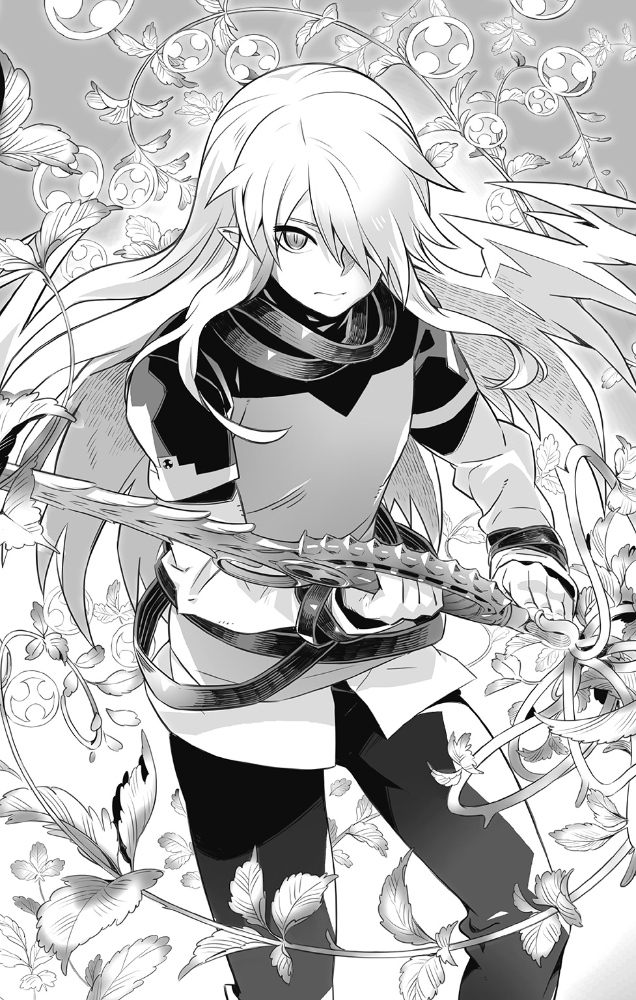
翠の蔓草は機械兵器たちの動力部―――正確にはそこから生じる活動エネルギーを源にして具現化したものであった。ゆえに逃れようとあがくほどに拘束の勢いは増してゆき、遂には機能停止―――ガス欠のガラクタに成り下がってしまう。
だが、敵もただそれを指をくわえて見ているだけではない。
魔獣、妖霊、悪鬼。
急遽差し向けられたのであろう異なる三世界からの刺客が、イスラめがけて襲いかかる。
「だから、無駄だってば」
万物に宿る魔力に直接作用する【翠遠の息吹】の拘束力は、有機無機霊体の如何を問わず、問答無用で発現するのだから。
「それでも、どうしても抵抗するっていうんなら......」
囚われてもなお、醜くあがき続ける魔物たちに、イスラは冷たい一瞥を投げかけると。
魔剣の柄をその指先で弾き、破滅の引き金を引いた。
―――リィィィィ......ン
響き渡る澄んだ音色を合図に生じた変化は、凄惨極まるものだった。
『『『ギャっびるギぃヤアあああアアあぁぁァァァァぁぁ......ッ!?』』』
翠の蔓草は酷薄さを剝き出しにして、秘めたる鋭い棘で囚人たちを抉り抜いた。
魂そのものを貫かれる途方もなき激痛。身も世もなく絶叫して悶え苦しむその心身を、戒めは情け容赦なくねじ切り、あっという間に寸断してゆく。
だが、血飛沫が飛び散ることはない。
全ては風に触れて塵と化し、他者の生命を守る魔力として還元されてゆくのだ。
「ごめんね。僕はあの人みたいに器用じゃないし、寛容でもないんだ」
自らの意志で為した制裁の光景を見守りつつ、イスラは寂しげに呟いた。
「なにもかも全てを守ることなんて、できないよ」
◆
「彼の御仁は、また痛い目にあわされたようですね」
今は救世皇帝レイの居城となった帝都中央に鎮座する大城郭。その一室で。
レイム・メルギトスとシャマード・リッツァーは、企み事を囁きかわしていた。
「レルム村の襲撃はあくまで彼自身の矜持によるもの。大勢に影響は出ませんわ」
実際、オルドレイクの行動は藪をつついて蛇を出したようなものだった。
勇者たちに所縁ある場所を殲滅しようとすれば、自然、彼らはそこにいる仲間たちを守るべく駆けつけてくる。そこまでは考えられない子供たちに任せようとするから、結局は自分自身が火消しに回ることになる。策士を気取るには、いささかお粗末であった。
とはいえ、陣営全体として無駄だったわけではない。結果論ではあるが、これから作戦行動を開始する二人にとって、有益な情報をもたらしてくれたのだから。
「【誓約者】はともかく、まさか【抜剣者】までがあの村にいたとはね......」
海と結界によって隔絶された【忘れられた島】は、最後に侵攻する場所と目されていた。防御側が有利であるからだけでなく、やはり【抜剣者】たちの戦力は脅威だった。
「【無色の派閥】の記録によると、あの島は現在、リィンバウムという世界の枠から分断されていて、独自の理に基づいて成立している土地であるとか」
悪魔の言葉に、毒婦はうなずいた。
「例の【核識】にまつわる実験と、その果てに生じた【狂える島の意志】を破壊してしまった結果によるものね」
世界の意志たるエルゴと万物をつなぎとめ、様々な情報と魔力を循環させている不可視の共界線―――それを束ねる存在を人工的に造り出すことで、エルゴに取って変わろうとしたのが、あの島で行われていた実験の真の目的だった。
紆余曲折の末に【抜剣者】レックスはその要であった存在を魔剣の力で破壊し、強引に共界線をつなぎとめることで、崩壊するはずだった島を救った。
だが、それはけして元通りにしたというわけではないのだ。
「あの島における共界線はエルゴから分断されたまま、独立循環している。リィンバウムという世界から、島自体がはぐれてしまっている状態なのよ」
エルゴの遺産たる泉の存在や実験施設の乱立により、時の流れさえもが歪んでいたあの島は、今やひとつの異世界と見なしてもいい状態であることを、二度にわたる襲撃によってセルボルトの一族は確信したのだという。それが何を意味するのか。
「できれば、こちら側にとりこみたい―――と？」
「無傷で接収できるに越したことはないわ。鍵にあたる【抜剣者】と共に、ね」
彼らの主人が見据えるこの先の決戦において、彼の島の存在は要衝となり得る。
だが、それはあくまで最後の詰めの話だ。今は放置しておいていい。
「私たちは当初の予定どおり、それぞれの標的を攻め落としましょうか」
それはこれから先の戦いにおいて、切り札となり得る存在を獲得するための作戦。
「【誓約者】と【抜剣者】は未だ聖王国。我らと違って【転移の門】を用いることのできぬ以上、連中が一瞬で帝国まで駆けつけるのは無理というもの」
【再誕の制錬者】の魔力を【無色】の技法で付与したペンダントをかざして、レイムが嘯く。彼らが神出鬼没に立ち回れる理由がこれであった。ほぼ時間差なしで任意の場所に移動できる優位性は計り知れない。その気になれば、いきなり敵の本丸にすら攻めこめるのだから。一度にあまり多人数を運べないという欠点はあるのだが。
（まあ、そこまでの大動員を行う時は、我らが主人が直接に門を開かれるでしょうがね）
陰働きを行う自分たち配下にとっては、これで充分だ。
「では、そろそろ出かけるとしましょうか」
「ええ......当たりかハズレかは、着いてみてのお楽しみということで」
シャリマとの毒にまみれた会話をひとしきり愉しんだレイムは、扉の向こうで控えていた愛娘たちを招き入れた。
「お行儀よくするのですよ、トリス。ネスティさんも、ね」
「はい、お父さまっ」
「御心のままに」
より大規模な戦闘が起こるであろうシャリマの任務に、ネスティも増援として加わるよう、レイムが命じたのであった。
「【融機人】のアシストがあれば【召喚兵器】の運用も捗るわ。まして、貴方はこれの誕生に関わったとされるライルの一族―――期待させてもらうわよ」
「ご期待に添えるよう、微力を尽くさせていただきます」
過去の罪科を匂わせた皮肉の苦さを嚙み殺し、ネスティは深々と頭を垂れた。
「おう、店長代行！ 今日も美味いメシをたーんと頼むぞっ!!」
食堂の扉が開くなり、いかつい声が響き渡る。
続々と入ってきたのはいずれも屈強な男たちだった。労働の汗と泥にまみれた身体からはなんともいえない男臭さが滲み出ている。
「らーかーらーっ！ あんららち、ひゃんと身体を拭いてから入店ひろって何度も言っへるれひょーがっ!!」
鼻をつまんだまま駆け寄ってきたリシェルが、あらかじめ用意しておいたボロいタオルを次々と男たちに投げつけてゆく。口ではぶーたれていても、接客を放棄しないのはさすがといえなくもない。むしろ小気味よい彼女とのやりとりを、男たちは楽しんでいる節がある。やむなく故郷に娘を置いてきた父親たちであるなら、なおさらだ。
「お疲れさまです、レンドラー」
「ありがとうございます、姫さま」
エニシアに手ずからタオルを渡されて、一団の頭であるレンドラーは恐縮する。
今でこそ、この町で開拓事業の人足として働く彼らであるが、元を正せば旧王国・鋼壁都市バラム騎士団の精鋭であり、元老院に見捨てられて以後は、エニシアに仕える【剣の軍団】として、かの【浮遊城事件】にも深く関わった面々である。
帝国の法に照らし合わせればれっきとした犯罪者であるのだが、そこはそれ―――事件後の混乱のどさくさに紛れて武装解除し、罪滅ぼしとして町の復興事業に協力するという条件を受け入れて、ようやく平穏な日々を手に入れることができたというわけだ。
駐在軍人であるグラッドや、何より顧問召喚師として町の政務を半ば委託されているテイラーの便宜があってこそなのだが。
過去の事件をきっかけに、テイラーは帝国の政務高官たちと太い繫がりを作ることに腐心してきた。力及ばず、大切な存在を守れなかった若い日の苦い後悔が、彼を衝き動かした結果だった。その過程で妻とは別居することとなり、娘であるリシェルに冷たい目を向けられたりもしたが、彼女の心身の成長とともに、そんな関係も徐々に修復されつつある。
『全て承知のうえで、敵対した我らを受け入れてくださるとはな......』
驚いたレンドラーに、そういう御方なんですよ、と笑ったのはポムニットだった。
半魔であると知りながら、自分を子供らの世話役として雇ってくれた。口では散々に罵りながらも、強引に託された悪友の息子の成長を陰日向に見守り、送られてくる養育費以上の投資によって、一人前の店主にまで育てさえしたのだ。
（なんにせよ、ひとかどの人物であるに違いあるまいな）
同じ男として、感嘆を禁じ得ないレンドラーであった。
「しょうぐ......じゃなくって、レンドラーさん。申し訳ないのですが、今日は私めが調理担当でして、お任せじゃなくってきっちりオーダーしてほしいんですけどぉ......」
厨房からひょっこり顔を出してそう言ったのは、件のポムニットだ。
「ふむ、そうか......にしても、あの娘っ子が休むとは珍しいのう」
彼らが通い出した頃、ちょうどフェアもここで働くようになったのだ。自然とライよりも彼女の料理を口にする機会が多くなったわけだが、レンドラーの記憶にある限り、急にこうして彼女が休んだりすることは一度もなかった。
「フェアだって人間だもの。むしろ今まで、休みなしだったのが異常だったんだから」
ですよねえ、とポムニットがリシェルに同意する。
「いつ倒れるかってハラハラしてたんですもの。自主的に体調不良を訴えてくれて、逆にほっとひと安心ですよ」
「そういうことなら、見舞いの品でも持っていってやろうか。部下ともども、ずいぶん世話になっておることだし......」
それが無理なんです、とエニシアがかぶりを振った。
「いろいろと事情があるらしくて、フェアのお家は私たちも教えてもらってないの。急用の時は、仲介人であるシャオメイちゃんのお店に行けば取り次いでもらえるけど......」
そのシャオメイもふらりと出かけたまま、もう何日も帰っていないらしい。
「いいじゃん、元気になってからだって。お礼の品はお礼の品で喜んでくれるよ」
リシェルの言葉にうなずくレンドラー。では、何を贈るのがいいのか相談しようと口を開きかけた時だった。
「大変よ！」
珍しく慌てた様子のミントが、店の中に飛びこんでくるなり告げたのである。
「帝国の――【異端召喚師審問会】の【懲罰部隊】が、この町にやって来たの!!」
◆
「どういうことなのですかな、これは？」
「駐在武官である自分も、事前になんの報告も受けてはおりませんが......」
予告なき来訪に対して抗議の意を示すテイラーとグラッドに対して、銀髪の査問召喚師は、まるで臆することなく柔和な笑顔で応じた。
「可及的かつ速やかに行うべしという皇帝陛下の仰せでして、はい」
「以前に報告したとおり、この町に不穏な輩などおりはせん。【金の派閥】の駐在特使にして、帝国議会より委任を受けて顧問召喚師を務めるこの私―――テイラー・ブロンクスの管理運営に対して、なんの不服があるというのか!?」
返答によっては本部に報告し、正式に【派閥】から抗議するという脅しを言外に含めて、テイラーは相手を睨みつける。そこらの三下であれば即座に退散するであろう重圧を、だが、むしろ喜々としてその青年は受け止めてみせた。
「状況が変わってしまったのですよ、ブロンクスさん。貴方が後ろ盾にしていた政務高官たちは議会という仕組みごとこの世から抹消されて、もうなんの役にも立たないんです」
「な......!?」
つけ加えるならば、と青年は追い打ちをかけるようにして語る。
「新たなる皇帝陛下は、他の二国家のみならず【派閥】と称する利己的な召喚師たちの集団も、解体してしまわれるおつもりですよ。どうせ潰してしまう組織を相手に、何を遠慮する必要があるというのですか？」
馬鹿な、とテイラーは喘いだ。
「【金の派閥】と【蒼の派閥】を同時に敵に回すなど、とても正気とは思えん！ いくら帝国が独自に召喚術を研鑽していたとしても、古の秘伝を守り高め続けてきた我らを相手どり、互角に戦えるとでも思っているのか!!」
怒りに任せて、テイラーは怒鳴りつける。
「そもそも一部隊の長に過ぎぬ者が、皇帝陛下の御名をかざし、不遜を口にすること自体が問題ではないか。なんの権限をもって、お前はそのようなことを言っているのだ!?」
「権限ならありますよ」
しれっとした顔で、彼はようやく自分の名と肩書きを名乗った。
「【救世皇帝】直臣―――異端召喚師審問会の最高執行責任者にして、新生成った帝国の顧問召喚師―――レイム・メルギトスと申します。以後、お見知りおきくださいませ」
無形の爆弾が炸裂したかのごとき衝撃を受けて、対峙する二人は言葉を失った。
離れた物陰から事態の推移を見守っていたリシェルは、信じがたい顔で、同じく呆然としているミントに向かって再確認した。
「め、メルギトスって......確か、マグナたちが【傀儡戦争】で戦ったっていう......」
奸計と虚言の悪魔王。依り代である美しい銀髪の吟遊詩人の姿で暗躍し、旧王国の顧問召喚師として権力を振るって、崖城都市デグレアを死の街に変えてしまった張本人。
「ええ。無関係だって言うには、あからさまに符合させすぎだよね......」
むしろ敵はわざと正体をほのめかしている、とミントは感じていた。
反応次第で、どう対応すべきかを決めているのかもしれない。あるいは相手が感情を乱すさまを見て愉しむという、極めて悪魔らしい嗜好にもとづくものなのかもしれないが。
「理解していただけたのなら、協力していただけますね？」
拒否できないと承知のうえで、レイムはテイラーとグラッドを眺めやった。
帝国軍人であるグラッドは、執政機関から然るべき権限を与えられたレイムに反抗することは許されない。上に立つ皇帝が代わったとしても軍規は軍規。逆らえば即座に反逆者として、厳罰を受けることになろう。
テイラーのほうは、より直接的に生命の危機にさらされているといえる。
【派閥】と敵対する腹を決めた彼らに、その主要構成員である彼を生かしておくメリットはない。むしろおかしなことをしでかす前に、即時抹殺したほうが後腐れがないというものだ。
にもかかわらず協力を求めてみせたのは、言外に助命の余地があると示すためだった。
所詮はたった一人きりの召喚師。恭順を示せば、見逃すこともやぶさかではない。
賢しき故にテイラーはそれを理解し、だからこそ抵抗できなくなってしまった。
「捜しているのは―――【浮遊城事件】の容疑者たちと、その潜伏先なのですよ」
予期せぬ言葉にグラッドは狼狽し、逆に予感していたテイラーは唇を嚙んだ。
「近隣の村に被害が出なかったとはいえ、彼らは恐るべき古代の兵器で山ひとつを灰燼と化した凶悪な犯罪者です。国家転覆を企んだ反逆者といってもいい。救世皇帝の御前まで引っ立てて、断固たる裁きをくださねばならぬのです！」
実力行使によって摂政たちを一掃し、先帝を廃嫡してその座についた現皇帝が、叛逆の罪を糾弾しようという滑稽さ！ ―――そんなことは百も承知で、むしろわざと喜劇めかした語り口で、レイム・メルギトスは騙り続ける。
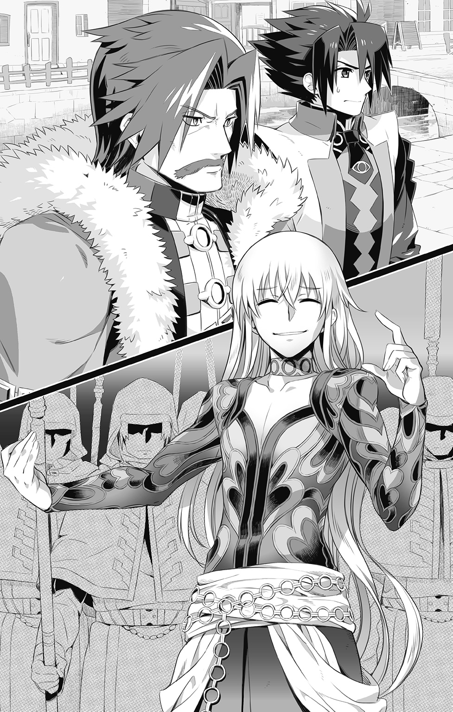
「実のところですね、目星はもうつけてあるのですよ」
声をひそめて、うっすらと嗤う。
「町外れに宿屋がありますよね？ 『面影亭』―――でしたっけ？ あの店に一味の首魁にあたる少女が、丁重に匿われているというんですよ！」
もしそれが事実だとするならば、匿ったほうもただではすまない。
「連座して処刑でしょうね。こちらもまだ少年とのことですが、哀れなことです」
大きくため息をつき、首を横に振ってみせるレイム。
「顧問召喚師レイムさま。恐れながら、その情報にはいささか誤りがあります」
重い口を開いたテイラーに、ほうとレイムは目をまるくしてみせる。
「件の店の所有者は私めであり、少年は雇われ者に過ぎません。世間知らずの彼は事実を知らぬまま少女を給仕として雇いましたが、私めは不審に思い、かねてよりその正体を突きとめるべく画策していた次第なのです」
饒舌に語るテイラーの姿を眺めるグラッドの顔が、みるみる青ざめてゆく。
「ほう！ ほう！ 続けてください！」
テイラーは語った。
今、少年には用事を申しつけて帝都に向かわせている。その隙に通報しようと考えていたのだが、政変が起きたことによって逡巡してしまっていた。けして他意はない、と。
「はて？ 先程は不穏な輩などいないと、仰っていたのでは？」
「それは貴方の身分が不明だったがゆえ。陛下の直臣ならば、協力は惜しみませんとも！」
懲罰部隊の面々を先導し、『面影亭』に誘おうとするテイラー。
その行く手に立ち塞がったのは、悔し涙を浮かべて怒りに震える、彼の愛娘であった。
「本気でエニシアたちのことを売るつもりなの、パパ!?」
「リシェル......そこをどきなさい！」
イヤよ、と彼女は叫んだ。
「あたしはパパとは違う！ 他人を売って自分の安全を買ったりなんかしたくない！ 大切な友達を見捨てるくらいなら、最後の最後まで一緒に逃げて、逃げまくって......」
「馬鹿なことを言うな！」
最後まで言い切ることを許さず、テイラーは進み出て、娘の頰を強く張っていた。
「ぁぐぅ......っ！」
よろけて倒れたリシェルの頰が、たちまち腫れあがっていく。
「ああ、何もそこまでしなくとも......ご息女なのでしょう？」
「実の娘だからこそ、こうも見事に騙されておるのが腹立たしいのです！」
忌々しげに吐き捨てるように言ってから、テイラーはグラッドに向き直った。
「グラッド殿、そやつを駐在所の牢にぶちこんでおいてください。あとできつく説教してやりますので......とりあえず、ここは父親である私の顔を立てて穏便に......」
「り、了解であります！」
返事を聞いた彼は満足げにうなずくと、娘にはもう一瞥もくれぬまま、レイムたち一行を伴って歩き出した。リシェルの号泣する声がその背中で虚しくはね返る。
◆
それからわずかに遡った時刻、帝国と聖王国の国境に連なる山岳地帯。踏破は不可能と思われるほど険しい稜線が重なり合ったその山陰に、隠れるようにして浮かぶ巨大な物体があった。
遠目にはそれは樹木に見えた。が、その大きさはとても尋常のものではない。悠々とした枝ぶりが落とす影は、小さな町ならすっぽりと覆いつくしてしまうほど大きかった。
そもそも樹木と見なすには、その根が地面から離れて宙に露出している時点で、不自然である。年を経て硬質化しつつある樹皮のほうぼうに目を凝らせば、塔や屋敷、それらをつなぐ回廊といったものが見られ、居住空間として利用されていることがわかる。神秘の樹木を基盤とした浮遊都市―――いや、弩弓を備えた城壁や堅牢そうな門扉の数々からして、空中要塞と呼ぶのが一番ふさわしいのかもしれない。
【呼吸する城】―――古き妖精の技術によって造り上げられた移動要塞にして界を渡る神秘の船―――それがこの巨大な浮遊物の正式な名称であった。
だが今、その真の名を知る者は少ない。ここを新たな安住の地として暮らすことになった者たちは皆、【隠れ里】と呼んでいる。
その理由は、彼らの多くが異世界からリィンバウムに召喚されたまま、帰る手段や居場所をなくしてしまった召喚獣だからだ。俗にはぐれ召喚獣の名で呼ばれて人間から迫害される立場の彼らが、守護竜という強大な存在の庇護の下で、安らかに暮らせる数少ない場所のひとつ。それが、ラウスブルグなのである。
「とはいえ現在、守護竜さまは不在なのですけどね」
手にしたカップから立ち上るお茶の香気に目を細めつつ、天使リビエルはひとりごちた。
彼女の言うとおり、当代の守護竜であるミルリーフは、育ての親であるライと共に帝都ウルゴーラに出かけていた。城の機能の大半は魔力の源たる守護竜と連動しているため、本来ならば時空の狭間に姿を隠し続けているラウスブルグも、こうして人目のつかぬ場所に身を潜めているという次第であった。
由々しき事態だが、これは不可抗力でもある。
いくら膨大な魔力を保有する至竜といえども、生物である以上は定期的に休息をとらねばならない。本来ならば魔力の供給を止めて心身を休める期間なのだが、そこはまだ遊びたい盛りのミルリーフである。大好きなパパの料理修業の旅にくっついていったわけだ。
（守護竜を補佐する【御使い】の一員としては諫めるべきだったかもしれませんが、御子さまの生い立ちを考えると、大目に見てあげたいですものね）
やむなき事情から卵の状態で遠くに逃がされたミルリーフは、それを拾ったライのもとで幼竜期を過ごしている。本来ならば触れる機会のないはずの人間たちと交流を持ち、その文化に慣れ親しんできた彼女にとって、この城で隠者同然に暮らす日々は到底耐えがたいものであろう。懸命に守護竜の責任を果たそうとするその姿はあまりにも健気で、だからこそリビエルも、もう一人の御使いであるアロエリも、滅多にできない遠出の機会を大事にしてあげたいと思っているのだ。
（先代には先代の、当代には当代のお考えがあって、この世界と向き合って生きていこうとしておられる。守るべきところは守り、改めるべきところは改めていかなくてはね）
禁忌であった【界渡りの術】をミルリーフがあえて用いると決意した時、ラウスブルグもまた変革の時を迎えたのかもしれない。それは彼女ら【御使い】たちのみならず、新たにこの隠れ里に集ってきている住人たちの生き方にも確実に影響を及ぼしていた。
「好機っ、今度こそ......とったぁッ！」
「へへっ、ざーんねん！ ユエルにはバレバレだよーだっ♪」
素早く背後に回りこんで放たれた両手の掌打を、ユエルはくるりと尻尾を翻しつつバック転してかわすと、仕掛けてきた少女の無防備な脇腹にこちょこちょとお返しをした。
「ぶひゃははははははっ!? こっ、降参っ！ 参りまひ......ひゃははははは!!」
虎を思わす縞模様が浮かぶ頰を引きつらせて、その場でのたうち回る少女。
「勝負ありだ！」
審判役を務めていたアロエリが、翼を打ち鳴らす音とともにそう宣言した。
「まだまだ修業が足りないね、フーちゃん」
「くぬぬ......」
地面に座りこんでむくれている少女の頭を、ユエルはぽんぽんと叩いて笑った。
犬狼型亜人のユエルはこの隠れ里と交流のある聖王国のレルム村の住人だ。種族の気質のせいなのか一カ所にじっと留まり続けることが苦手らしく、集落間を行き来する同朋たちの引率役として、一定周期で巡回の旅をしている。今回は【忘れられた島】から亜人たちの検診に来た看護人形のクノンに同行する形だ。
御使いであるアロエリやリビエルと顔なじみであるのはもちろんだが、人懐っこくて明るいその性格は他の住民たちからも愛されており、ちょっとした人気者になっている。
中でもよく懐いているのが、フーちゃんと呼ばれた目の前の少女である。
見た目こそ【幻獣界】の虎型亜人によく似ているが、彼女の生まれは【鬼妖界】であり、山中に棲む【人虎】という妖怪なのだという。ひょんなことから人間の武術を習い覚えて、日々その稽古にいそしんでいる。武器を使った戦いに長けたアロエリとは異なり、肉弾戦を得意とするユエルは格好の稽古相手というわけであった。
（【龍人】や【鬼人】のように、かつては【虎人】と呼ばれた、虎の神とやらに仕える眷族だったという話だがな）
御使いの一員であったセイロンに聞いた話をアロエリは思い出す。龍神イスルギに仕える【龍人族】の若長たる彼によれば、遠き昔に始祖たる幻獣と契って生誕した亜人たちもまた一種の眷族なのだという。属する世界こそ異なるが係累としては近しいのだと。
ただし、決定的に違っていることがある。
『始祖―――【親神】を祀り、その加護を得ているかどうかだ』
今ではもう始祖との関わりが希薄な【幻獣界】の亜人とは違い、【鬼妖界】の眷族たちは【親神】によって常に護られており、その見返りとして様々な形での奉仕を行っている。
セイロンがリィンバウムにやって来たのも、龍神イスルギの命によるものであった。はじめは今ひとつぴんとこなかったアロエリだったが、【守護竜】と【御使い】の関係と同じだと説明されて納得したものである。
なんらかの理由で【親神】を喪ってしまった眷族は加護を失って零落していき、やがて【妖怪】の一種になるのだという。【人虎】と前後を入れ替えた名で呼ばれるのは、正式な眷族たちと区別するためであると同時に、忌み名として以前のそれを封じることで、いつか再び眷族としての地位を取り戻したいという願掛けの意味もこめられている。
もっとも【人虎】がそうであるように、零落した眷族の大半はそのことをすっかり忘れて、自由気ままに妖怪としての暮らしを満喫しているが。
（過去にとらわれ、おかしな形で捻れてしまうよりも、そのほうがよっぽど健全だ）
ユエルとじゃれ合うフーちゃんを見ながら、アロエリはしみじみと思う。
使命感ばかりに衝き動かされていては、かつての彼女やその兄クラウレのように、自分を追いつめてしまうことになりかねない。セイロンもそこは気にしていた。
『良くも悪くも、我ら眷族は【親神】には逆らえぬ。穏やかな和魂であられた神が、怒りによって荒魂の神に変ずれば、我らもまたその影響を受けずにはいられぬのだよ』
邪鬼や竜鬼といった忌むべき存在はそうした眷族の成れの果てであり、凶暴な妖怪として恐れられている。【幻獣界】における魔獣たちと似た存在なのだろう。
いくら自由気ままに振る舞おうとも、眷族としての運命からは逃れられぬ―――セイロンの葛藤はそこにあり、だからこそ彼は、常に柔軟な心をもつようにと、未熟な御使いの娘たちに諭してくれていたのだろう。今のアロエリにはそれがわかる。
（ひとつところにとらわれることなく、時には違う道筋も受け入れてみる。自由の身であるというのならば、心のほうも常にしなやかでありたいものだな）
【御使い】として実質的に防衛の責任を担うことになった彼女もまた、少しずつ成長している。兄やセイロンの影響はもちろん、ライやその仲間たちとの触れあいが、頑なに過ぎた彼女の気質をゆっくりと変えてきたのだろう。彼女自身も、そんな自分の変化が嫌いではなかった。
目を細めて、眼下の森から吹き上げてくる心地よい風に身をさらす。
「......!?」
そこに異臭を感じた時にはもう、浮遊城めがけて無数の砲弾が撃ちこまれてきていた。
◆
「う、うううぅぅ......っ、ううう......っ」
駐在所の椅子に座って、リシェルは泣いていた。
「あんな人だったなんて......ちゃんと優しい人なんだって、思い直していたのに......っ、尊敬してあげられるかもって、思えていたのに......っ」
水で濡らしたガーゼを手にして、グラッドが戻ってくる。
「だとしたら......やっぱ、リシェルはちゃんとお父さんのことをわかってあげるべきだ」
「何をよ!?」
腫れた頰に当てられたガーゼを乱暴に払いのけて、リシェルは手負いの野良猫のように、グラッドの言葉に嚙みついた。
「あの人は自分を守ったんじゃない。お前を含めた家族を―――今この場にいないルシアンやライ、お前のお母さんを守るために―――あえて自分を売ったんだよ」
「あ......」
グラッドは言った。あの顧問召喚師が本当に皇帝の直臣であるのならば、連絡ひとつで帝都にいる彼らを捕らえることも可能だろう。手の届かぬところで害を為されてしまっては、どんなに守りたいと思ってもかなわない。
「テイラーさんは父親として、家族を守る最善の方法をとったんだ。自分の力が及ぶ範囲で守れるものを守ろうとしたんだ。それがエニシアたちに対する裏切りであったとしても、俺はあの人を軽蔑することはできないよ」
「許せって......いうの？」
いいや、とグラッドはかぶりを振った。
「リシェルが怒ったこと自体はなにも間違っちゃいないんだ。それはそれとして、あの人の気持ちを知っててあげてほしかっただけさ。許すか許さないかは、全部終わったあとでゆっくりと二人で話し合ってから決めればいい......親子なんだから、さ」
「..................」
「ほれ。牢屋入りは勘弁してやるから、腫れを冷やして俺のベッドでしばらく寝てろ」
そう言ってグラッドは、傍らに立て掛けてあった愛用の槍を手にした。
「間違っても抜け出すなよ？ バレたら、今度は俺がとばっちり喰らうんだからな」
「ん......おとなしくしてる......」
「よし、約束だ！」
にかっと笑って、グラッドは小走りに駐在所から飛び出した。
向かうのは『面影亭』ではない。ミントの家だ。
（さっき、ちらっと見えた影は、走っていくオヤカタだった）
おそらくミントはあの場にいて、待機しているエニシアたちに状況を報せるべく、護衛獣を伝令として向かわせたのだ。そして何か非常事態が起きた時にはと、かねてから彼らが避難所に定めていた先がミントの家であった。
（せめて、自分の手が届く範囲のものぐらいは守りたい......よな？）
故郷のファルチカで暮らす両親や妹とはもう何年も会ってない。今から自分が馬鹿げたことをしようとも、係累にまで害が及ぶ恐れはないと判断した。
「父親であれ、若造であれ、男には男なりの意地の張り方があるんだ」
惚れたことさえ伝えられぬままの女と、可愛い弟分が大事に想っている少女。
全てをかなぐり捨てても守るに値する存在であった。
◆
「いつの間にこれだけの軍勢が展開していたんだ!?」
素早く飛翔して索敵を行ったアロエリは、自分の呑気さに舌打ちしたい気分だった。
森の木々の間から、機械兵器と思われるいくつもの砲門が覗き、頭上の城めがけて砲撃しているのだ。それらを運搬しているのは多種多様な魔獣―――ではなかった。
運んでいるのではなく、身体から機械が生えているのだ。
無理矢理に接ぎ木したように、肉と鋼が混じり合って、醜悪極まるバケモノのような姿を形づくっている。
（こんな歪な生き物が自然界に存在してたまるか！ 生命に対する冒瀆だ！）
「【召喚兵器】だ......」
クノンが連れてきた電映機精の映像を見て、ユエルは即座に敵の正体を見抜いた。
「それはもしや【超律者】さまが研究記録を抹消されたという？」
「うん、そのはずなのに......でも、どうして......」
頭をかきむしって唸るユエル。その様子を里の子供たちが心配そうに見つめている。
「絶対ということはこの世にはないといいます。今はともかく気持ちを切り替えましょう、ユエルさん」
自分たちが動揺すれば、この場にいる隠れ里の者たちもまた不安になってしまう。
看護人形として、護り手として、やるべきことをクノンは心で理解していた。
「皆さんは早く避難場所へ！ 外敵は御使いの方々と私たちで排除いたします！」
「行こう、クノン！ 二人で絶対、魔法の門を守らなくっちゃ!!」
「了解です！」
◆
「いくら辺鄙な山奥に隠れたところで、上空からの監視の目からは逃れられないのに......本当、おバカさんよねえ」
手元の空間に展開された投影画像を見つめながら、シャリマはほくそ笑む。
映し出されているのは様々な角度から捉えられた浮遊城の姿。衛星軌道上からの索敵でおおまかな位置を特定した後に、複数の哨戒機を飛ばして得た生中継の映像であった。
【機界】のテクノロジーもさることながら、これを可能としたのはひとえに、現在の浮遊城が異界に隠れることのできぬ状況にあるためだ。界の狭間に発生させた閉鎖空間に城を隠し、外界からの干渉を一切遮断する古妖精由来の秘術は、手順を正しく理解する知識と、力の源となる膨大な魔力が揃わねば発動できない。それを兼ね備えた存在こそが守護竜なのであるが、現在、彼女は城を留守にしている。
（まあ、それを知っていたからこそ、こうやって接収しに来たわけなのだけど）
【浮遊城事件】の記録の断片と、自ら出向いて採集した人々の噂話から、吟遊詩人は目ざとく真実を見抜き、ライという風変わりな少年の存在を突きとめた。
彼が小さな竜を連れていると知ったレイムは、それが事件の終幕に現れた二匹の竜のいずれかであると確信し、周辺調査を突きつめることで真相を究明していったのである。
（貴重な素材となったあの男が、まさかその事件の張本人だったのには驚いたけれどね）
傍らで不気味に鳴動する球体装置に目をやりつつ、シャリマは鼻で笑った。
皇帝レイに挑んで返り討ちとなった無頼の冒険者は、妖精に愛されし者として不死身の加護を授けられた男でもあった。その強大な護りの力ゆえに、自在に血識を吸い出すことはレイムにも不可能だったわけだが、それでも浮遊城ラウスブルグにまつわる諸々の情報を手に入れることぐらいはできた。
あらゆる界を自在に渡ることができる浮遊城塞―――エルゴの王の再来たらんと欲する救世皇帝にとっては、なんとしても手に入れておきたい魅惑の品であった。
ゆえに万全の二正面作戦によって、彼女たちは行動を開始したのだ。
「トレイユの町にいる関係者たちを彼が率いる帝国兵士が足止めして、その間に私たちが【召喚兵器】を用いて本命の城を陥落させる」
仲間同士を合流させることなく、分断させたまま処理してしまおうという目論見は見事に当たったようだ。城の機能が十全ではない今、物量攻勢で攻め立てていけば、いずれ疲弊して防衛網は破綻するだろう。それを為すための無限再生する兵力をシャリマは現在もっている。
「上空の様子はどうなっているかしら、ネスティくん？」
「問題なし―――偵察と思われる敵の飛行兵との交戦があったものの空戦兵器の損害は軽微―――拿捕してさらなる情報を得るべく包囲追跡中」
直接続した制御端末に次々と送られてくる情報を同時並行的に処理しながら、ネスティは淡々と報告する。機界ロレイラル固有の人型種族【融機人】たる彼に、膨大な数の【召喚兵器】を制御管理するという仕事はまさに適任だった。ましてそれらの基幹構造は、彼の先祖であるライルの一族によって生み出された因果をもつ代物なのだ。
（意のままにたやすく操れてしまう......それが逆に......忌々しい......！）
こんな技術は二度と使われぬよう封印してしまおうと、マグナやアメルと誓ったのに。
「お城に続く【転移の門】を見つけてくればいいんだね？」
トリスの問いかけに、シャリマは微笑んでうなずいた。
「......行ってくるよ！」
忠実な機械兵士の肩に飛び乗ると、彼女は与えられた使命を果たすべく行動を開始する。より役に立つことで、たくさん褒めてもらうことを夢見て。
「御主人さま、本当に大丈夫でしょうか......」
後方支援役としてネスティの額の汗を拭きとりながら、レシィは不安げに問いかける。一瞬の迷いを見せつつも、ネスティはモニタに目をやったまま、強くうなずいてみせた。メルギトス配下としてこの作戦に参加することを命じられた今の彼には、そうするより他にできることはなかったのだから。
「おい......本当に信用してもいいのかよ？」
「あァん？ 俺様の見立てにケチをつけるってぇのかよ」
疑いを隠そうともしないガゼルに対して、青筋を立ててキムランが威嚇する。
「二人とも、大人げなーいっ！」
間に割って入ったフィズが、発火しかけていた両者にそう言って冷や水をかける。
「考えられる限りの手を尽くそうって決めたのはガゼルでしょ。なにもできずに手詰まりのままでいるくらいなら、彼女にやらせてみるのもありなんじゃない？」
フィズの言うとおりかもよ、とアカネ。
「召喚術の秘伝ってのは家ごとに違ってるんでしょ。マーン家のやり方が通じないんなら、呪いをかけた張本人のセルボルト家のやり方を試すしかないと思うんだよね」
「そんなことはわかってる！ けどな、万が一のことがあったら......」
それこそハヤトに顔向けができねえよ、とガゼル歯嚙みした。
行き先も告げずに出て行った彼の目的が、親友であるキールを呪いから救う方法を探すためなのはすぐにわかった。単独行動をとったのは仲間を危険に巻きこまぬためだということも。彼らを信じて、物言わぬ塑像と化したキールを託したことも。
だからこそ、ガゼルは慎重になっているのだ。
「父親の命令で、あの女は実の弟に呪いをかける手助けをしたんだぞ。今回だってなにかろくでもないことをしでかさないとは限らないじゃねえか」
「でもさ、ガゼル。結果としてキールに当たっちゃっただけで、あくまで呪おうとしてたのはハヤトだよ。若作りして出てきたオルドレイクは得意げに笑ってたけど、不慮の事故みたいなもんだったと私は思うんだよねえ」
「..................」
険しい顔のまま無言になったガゼルに代わって、リプレが口を開いた。
「私はここに来てからの彼女しか見ていないけど、ものすごく思いつめているってことだけはわかるよ。本気で弟さんのことを心配していなくちゃ、あそこまで悲痛な顔にはならないと思う。お芝居だとはどうしても思えないの」
甘い考えなのかもしれないけれど、と結んだ彼女の言葉を受けて、座をまとめるように発言したのはラムダだった。
「いずれにせよ我らが見張っている以上、おかしな真似だけはさせぬ。安心しろ」
街の各所にある門は騎士たちによって厳重に固められているし、養護院の周囲にはローカス配下の手勢たちが伏せている。攻め入ることも逃げ出すことも、そう簡単にはできないはずだ。
「治療の場にはセシルも立ち会う。不審な動きを見逃したりはしないだろう」
「自慢の奥さんだものねー？」
茶化してきたフィズを睨んでみせたラムダであったが、その目が一瞬戸惑いの色を浮かべていたことを、おませな少女は見逃さなかった。
「そういうことなら、まあ......お手並み拝見とさせてもらうか」
ようやっとガゼルが認めると、キムランは『告発の剣』亭に軟禁しているクラレットを連れてくるよう部下たちに命じたのである。
◆
「取り上げた召喚石は返さなくてもいいのか？」
キムランの問いかけに、クラレットはかぶりを振った。
「大丈夫です。発動状態にある術式に直接、魔力干渉していくだけですから」
むしろ抵抗の意志のないことを示すためにも、保管してもらっていたほうがいい。
ただひとつ―――【魔人形】との【誓約】を結んだ召喚石のペンダントだけは残してもらったが、それもクラレット本人ではなく今はナツミの首にかけられている。自分の身を守るためではなく、あくまで彼女の身を案じるがゆえのことであった。そしてナツミは、そんなクラレットの身の安全を守るべく、治療が行われる部屋の前で、ラムダと共に警護待機することになっている。
「長丁場になることは承知してるから、疲れた時は無理せずに言ってちょうだい。立会人であると同時に、医者として私は貴女の身の安全も守るつもりでいるから」
セシルの言葉にうなずいてから、ドアを開けて室内へと入る。
「キール......」
再会した弟の変わり果てた姿に、改めてクラレットの表情は曇った。
懸命に苦痛に耐える表情で硬質化したその顔は痛々しく、がさついた石灰質の皮膜の冷たさと相まって、かけられた呪いの無残さを再認識せずにはいられない。
滲んできた涙を指先で拭って、彼女は弟の横たわるベッドの前に立った。
（絶対に助けてあげるからね......）
内なる魔力を指先に集中させつつ、弟の胸元に突き刺さる骨剣に触れると、たちまち干渉による毒々しい色の火花が飛び散り、不可視に展開されていた術式が照らし出されてゆく。
術者と呪いをもたらす元凶との間に結ばれた【誓約】を、第三者が強引に書き換えて無効化する―――【召喚呪詛】の解呪とはそういうものであり、だからこそそれを行う術者の力量が厳しく問われるのだ。
（そうだとしても、やり遂げてみせる。それが姉として、私がこの子にしてあげられる唯一の償いなのだから）
禍々しくも難解な術式を丹念に読み取って、試行錯誤しながらひとつひとつ解いてゆく。霊属性の名門セルボルト家直系の召喚師であり、母譲りの才を誇る彼女であるからこそ可能なことであり、並の術者では触れることすらできない難事。
だが、しかし―――彼女の父の術式は、それすらも遙かに凌駕する知識と妄執によって作りあげられていたのであった。
（ダメ......っ、これじゃあ、キリがない......っ）
解いた端から新たに編みあげられてゆく呪詛の鎖は、そのたびに堅牢さを増してゆき、彼女の行為が徒労であることを思い知らせようとする。さらにこの術式には、解呪に対する対抗策の罠があった。じわじわと対象の魔力を搾りとって死に至らしめるという、恐るべき報復の罠が。汗まみれの顔を拭う余裕すらなく、クラレットは作業を続けるしかない。手を止めたら最後、キールはたちまち精魂枯れ果てて、本当に骨の塑像と化してしまうだろう。
「しっかり！ 気を強く持ちなさい！」
青白くなっていく彼女の顔色から事態を察したセシルが、治癒功によってクラレットに活力を注ぎこむが、消耗がひどすぎて追いつかない。まさにその異名のとおり、餓竜の呪いは全てを貪りつくさんと荒れくるう。
（このままじゃ......このままじゃ私、なんにも......っ）
ぽろぽろと涙をこぼしながらも、懸命に唇を嚙みしめて立ち向かうクラレット。
そんな彼女を嘲笑うかのように、骨の呪詛は彼女の細腕にまで侵蝕してきた。神経を直接削られるような激痛とともに、指先の自由がきかなくなってゆく。
「イヤ......っ、ダメなのに......っ！ 動いて！ 動いてぇぇ......っ!!」
自分はどうなってもいいから、弟だけは絶対に助けてみせる。
その決意がいかに脆いものであったのかを、いやというほど彼女は思い知らされていた。想いだけでは越えられぬ冷徹な現実があり、ひたむきさが報われる保証などないのだと、嘲笑う父や義兄妹たちの幻が浮かんでは消えてゆく。
（ごめんなさい......キール......っ、ごめんなさい......お母さま......っ）
心が渇いて、ひび割れてゆく。想いの全てが骨となって朽ちてゆく。
「な......っ!?」
懸命に檄を飛ばし続けていたセシルは、不意に生じた冷たい気配に息を呑んだ。
閉ざされたカーテンの影から、何者かが姿を現そうとしている。
影の悪魔を媒介とした転移の召喚術―――セルボルト家独自の秘術を用いることができる者は、目の前で苦悶しているクラレットをのぞけば、今やその父親であるオルドレイクより他にはいないはずであった。
「敵襲です、ラムダさま！」
廊下で待機している夫に警告を飛ばすと同時に、セシルは乱入者を迎撃するべく、蹴り足を構えた。ドアを勢いよく開けて、ラムダとナツミが飛びこんできた瞬間。
―――うおおおおオオオオオォォォォォぉぉぉ......んッ!!
ぞっとするサプレスの霊気とともに、咆吼する亡魂たちが爆発的に膨れあがって、室内を冷たく満たしていった。
◆
（あきらめないで......）
絶望によって途切れかけていたクラレットの意識を、幽き声が揺さぶった。
（お願い、あきらめないで......貴女の弟を救うためには、今の私の力だけでは足りないの......だから、お願いよ......クラレット......）
聞き覚えのある優しい声が、痛切に訴えかける。
（お母さんと一緒に......あの子を......キールのことを、助けてあげて......!!）
◆
目を開けたクラレットは、そこに信じられぬ光景を見た。
「おかあ、さん......」
【死霊の女王】の異名で恐れられた霊属性の召喚師であり、無名の存在であったオルドレイクを夫として迎え入れ、セルボルトの家格を甦らせた一族の功労者。
ツェリーヌ・セルボルト―――夫の野望のために心身を削ってクラレットとキールを産み、全てを捧げて病みつき果てたはずの母がそこにいた。
我が子の前でのみ見せた穏やかな笑顔で、クラレットの背を支えてくれていた。
（【魂殻】の感触......やっぱり、実体じゃない......）
触れた部分から伝わってくる魔力が、彼女が【再誕】した存在ではないことを示していた。なにがしかの魔力の作用によって、亡魂が半実体化しているらしい。
（時間があまりないの。今は私が抑えつけているけれど、早く解呪を終えなければ、キールは助からなくなる。この場でそれができるのは、貴女しかいないのよ）
「でも......っ」
大丈夫よ、と怯える娘を母は包みこむようにして抱きしめた。
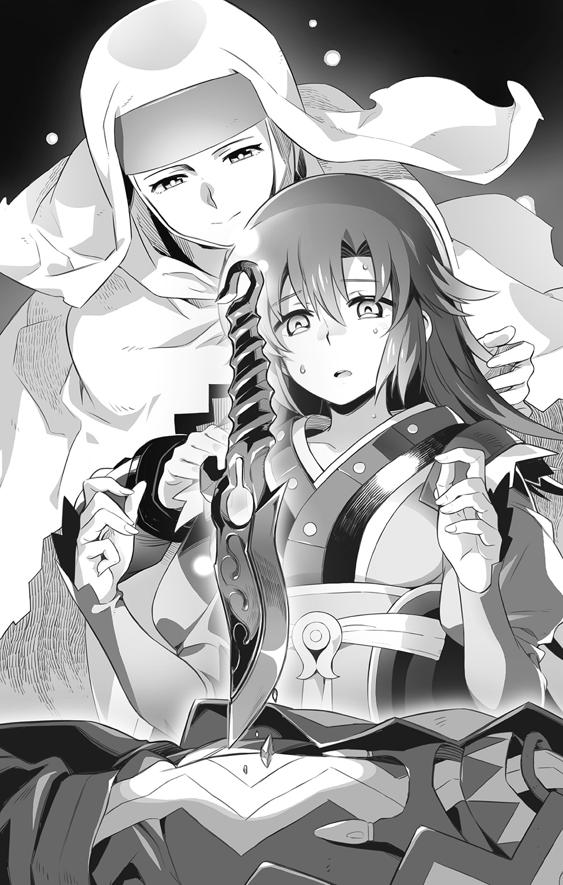
（直接に手をくだすことは無理だけれど、魔力や知識を貸し与えることはできるわ。そして大きくなった今の貴女なら、きっとそれらを使いこなせるはずよ）
こくんとうなずいて、クラレットはうなだれてた顔を上げた。
間近にある母の気配に助けられつつ、先程とはうって変わった速度と自信に満ちあふれた手つきで、てきぱきと術式の解体を行ってゆく。そして―――。
「できた......」
キールの身体から取りのぞかれた骨剣が、床へと落ちて乾いた音を立てた。
体表を覆っていた石灰質の皮膜は塵と化して消え去り、紛れもなく生身の素肌を取り戻した彼は、やつれてはいたが穏やかな表情で寝息を立て始めている。
安堵の余りか、クラレットもまた床にへたりこみ、そのまま眠りこんでしまった。
（お疲れさま......）
誇らしげな娘の寝顔を見つめていたツェリーヌの姿が次第に霞んでゆく。
依り代の力を借りていたとはいえ、彼女の消耗もまた相当なものだったのだ。
（ありがとう......【追想の制錬者】......）
霊気の霧が完全に消え失せるとともに、ツェリーヌのいた位置に姿を現したのは、やはり疲れ果てた様子の学生服の若者であった。言わずもがな、ミコトである。
「間に合ってよかったよ、本当に......」
つい先刻まで彼は、保護先である聖王都の屋敷の中庭にいたのだ。霊属性召喚師であるギブソンの助言を受けつつ、自身の能力を使いこなす訓練をしていたミコトは、突如語りかけてきた女性の亡魂に引っ張られて影の門をくぐり、遙か離れたこの場所に転移してきたのであった。
死に瀕している娘と息子をどうしても助けたい―――強引ながら母親として必死な彼女の願いに応え、依り代となって力を貸したというわけだ。
「......そういう次第なもんで、できれば剣を向けるのはやめてくれませんかね？」
威嚇するラムダに両手を挙げて無抵抗を示しながら、ミコトは引きつり顔で必死に弁解するしかなかった。
「おおよその事情はハヤト先輩から聞いています。俺、あの人の後輩なんです」
◆
ひと悶着ふた悶着あった後、晴れてミコトは養護院のお客として迎えられた。
彼らがハヤトから断片的に聞かされてきた日本や那岐宮市についての知識。加えて出奔後の彼の足跡をよどみなく話せたことが決め手となった。誤解から一時的に敵対関係となったことも包み隠さずに話したし、聖王都ではマグナやギブソンといった【蒼の派閥】の面々の世話になっていることも告げた。
「まさか、こんな形でハヤト先輩のお仲間に出会うとは思いもしなかったですけどね」
「ケッ、そりゃあこっちのセリフだよ」
憎まれ口を叩きつつも、ガゼルは機嫌よさげだった。キールが助かったことはもちろんであるが、行方知れずであったハヤトの話を聞けてほっとしているのだ。
「あんにゃろうめ......ようやっと目を覚ますことができたんだな」
「ハヤトのことを助けてくれてありがとうね、ミコトくん」
「お礼を言われるようなことはしてませんよ。俺は俺で必死だっただけですし」
笑顔でお茶を振る舞うリプレに、ミコトは恐縮しつつそう言った。
その姿はどこかここに来た当初のハヤトを思い出させるものがあり、古株の二人は互いに顔を見合わせて、くすくす笑いあうのであった。
「それはわかったけどさ、ミコトはこの先どーすんの？」
すっかり砕けた口調になったフィズが問いかける。
「聖王都に帰りたいのならさ、アタシが引率してやってもいいよん」
どのみち師匠に用事があるのだというアカネの申し出を、ミコトは断った。
「せっかくだから来た時と同じ方法で帰ってみます。元々、自分の能力を鍛えたくて訓練していたんですし」
ツェリーヌの亡魂を介して転移の術を経験したことで、なんとなくコツのようなものが摑めた気がするのだ。この感覚を忘れないうちに反復しておきたかった。
◆
「ありがとう、姉さん」
「感謝されるようなことなんて、なにもしてあげられていないわ」
ベッドに横たわるキールの視線から逃げるように目を背けて、クラレットは言った。
「私が貴方を助けようとした理由は、罪悪感から逃げたかっただけ。母と交わした約束を守るとか、そういうのは全部言い訳で、ただ罪の重さから逃げたくて、許してもらいたくて行動しているだけなのよ」
あさましいわね、と自嘲気味に笑う。
「だとしても―――僕は嬉しかったですよ、クラレット姉さん」
慰めとしてではなく、本心からキールはそう口にした。
「父上の理想に凝り固められた世界から、貴女は自発的に飛び出してくれた。疑問に思ったことを放棄せず、迷いながらも正しいと思う道を選んでここに来てくれた」
それがどれほど勇気がいることなのか、彼はよく知っている。
かつての自分が親友に手を引かれて歩んできた道筋を、彼女はたったひとりで歩いてきたのだ。それだけで賞賛に値するといえよう。
「ひとりじゃないわ......ううん、ひとりじゃなかったことにようやく気づけたの」
傍らのテーブルでうたた寝しているナツミを見つめて、クラレットは言った。
一方通行でしかないと思っていた関係性は、しっかりと互いに影響を与え合っていた。今なら【誓約】にすがらなくても、目の前の彼女と向かい合える気がする。
そんな姉の心境の変化を応援するように、キールは微笑んだ。
長い間、正面から向かい合うことを避けてきた目と目とがようやく合わせられて。
「少しずつ変わっていきましょう。そうすれば、きっと―――」
今はまだ理解し合えない義兄妹たちや父親とも、いつかは向き合うことができるかもしれない。そんな風に素直に思えるのであった。
「姉さんが覚えている母さんとの思い出を、僕にも聞かせてください」
あちらにいた時には口にすることもできなかった、ささやかな弟としての甘え。
「そうね......なにから話してあげようかしら」
応じるクラレットもまた、久しぶりの姉弟の触れあいに幸せを感じている。
遠くて近い場所からそんな姉弟の様子を見つめるツェリーヌの魂は、母親としての自分の不甲斐なさを悔いるとともに、それでも強く育ってくれた子供たちのことを誇らしく思うのであった。
襲撃してきた【召喚兵器】たちはいずれも、目的ごとに特化されていた。
対空砲を背に埋めこまれた大型の四足獣と、護衛としてその脇を固める牙と爪を鋼鉄化させられた野犬たち。腕や胸部に強化装甲や増幅装置を施された蜥蜴人や獣頭鬼たちがそれに続くさまは、まさに異形の軍隊と呼ぶべきものであった。
滞空し、周囲を哨戒する蜻蛉の魔獣の胴部には小型熱線砲とおぼしき射出口が穿たれており、さらに上空では放射息融機強化された飛竜が、城壁に向けて執拗に攻撃を繰り返している。
「でりゃああっ！」
敵影だらけとなった空の只中でたったひとり、アロエリは槍を手に奮戦している。
彼女が刃を交えているのは、悪魔の影響で魔獣に変じてしまった蝙蝠型亜人の戦士たち―――そこにシャリマがさらなる手を加えたことで、生物とも機械ともつかぬ、よりおぞましい姿と化してしまっていた。
―――Ｋｙｉｉｅｅｙｈｏｏｏｕｏｏｏｕｏｏ......ッ!!
口腔に備えつけられた集束装置を経て放たれる超音波は、もはや探信を目的とするものではなく、物質に震動空洞化を引き起こして破砕する兵器に昇華されていた。至近距離でしか充分に効果を発揮できない欠点はあるようだが、向かってくる弓矢をことごとく無効化してしまうため、やむなく近接戦で戦うより他にない。
「ウウウウゥゥゥゥゥ......ガアアァァァァッ!!」
咆吼とともに跳躍したユエルの爪が異形の獣らの首を切り裂いて、油脂に泡立つ不気味な血潮を噴出させた。
（わかっていてもイヤだな......この感触と......ニオイは......）
装甲に守られた【召喚兵器】に致命傷を与えるには、限られた生身の急所を的確にとらえねばならない。ゆえにユエルは顔をしかめてしまう。爪先で直に生命を断ってゆくその感触と、生の営みを冒瀆するような異臭を放つ人造血液の飛沫は、かつて暗殺を為す手駒として利用されていた頃の、昏い記憶を想起させるものであったから。
無垢で明るかった彼女の心はひどく傷つき、マグナやミニスたちと出会うまでの長きにわたって人間不信に陥ることとなった。
そうしたユエルの心の機微を、並んで戦うクノンはしっかりと理解している。
感情を学ぶことで人間に近づきたいと願った看護人形にとって、喜怒哀楽の感情が豊かな狼少女と過ごす旅はとても充実した経験学習の時間であったから。
（いえ......今はもう、それだけではありませんね）
理屈ではなく、彼女と過ごす時間が楽しいとクノンは思いはじめているのだ。
トラブルの種を巻き散らされることも多いけれど、それをフォローする行為も含めて、ユエルとの旅を楽しんでいる自分がいる。疑問に思って主人であるアルディラに報告した時、彼女は眼鏡の奥の目を細めて、それもまたクノンの成長の証だと喜んでくれた。
誰かを想うことで人は心を成長させていくのだ、という先生の教えが、今は実感として理解できる。だからクノンは、ユエルの胸の痛みを少しでも軽くしてやりたいと願うのだ。
「援軍を要請します―――ちょっとチクッとしますがガマンしてください、ユエルさん」
「ちょっ、クノ......っ、フギャアアアアアア～ッ!?」
召喚された投薬機士の巨大な注射針が、ユエルのお尻に有無を言わさず突きたてられる。痛みは伴わないはずなのだが、何度やられてもこればっかりは悲鳴をあげずにいられない。
しかし効果は覿面で、ユエルの爪にたちまち強力な麻酔薬が充塡されてゆく。
「仕留めたところで敵はすぐ復活再生してきます。むしろ行動の自由を奪って無力化したほうがよいと思われますので」
そしてこれならば、ユエルが必要以上に罪の意識に苛まれることもなくなる。
「ありがとねっ、クノン！」
「どういたしまして！」
殺到してくる敵たちに向かって、二人は再び迎撃の態勢をとる。
その背後に守るのは【転移の門】―――【浮遊城】内部と地上を直につなぐ唯一の出入り口であり、敵にとっては最優先で攻め落とすべき要所であった。
ゆえに当然のごとく、メルギトスの娘はそこに颯爽と現れたのである。
「ふふふっ、見ぃつけた～♪」
ホバリングする機械兵士の肩の上から、目ざとく標的を見つけだしたトリスは跳躍。着地と同時に獣のごとく四つ足で疾走を開始した。茂みをくぐり抜けると、腰に帯びた【奈落の血刃】を抜き放ち、クノンめがけて襲いかかる。
「......っ！」
咄嗟に防御機構を働かせた腕で受け止めたものの、悪魔の刃はクノンの腕を半ばまで切断し、激しい火花を迸らせた。
「むぅ......せっかく血識を奪い取ってやろうと思ったのに―――まぎらわしいよッ！」
刃を引き抜くついでに蹴り飛ばされて、クノンの身体は後方に吹き飛んだ。
「クノンになにするんだッ、オマエっ！」
怒りくるったユエルが両者の間に飛びこんできて、牙を剝いて威嚇する。
「こっちは生身だけど、大して頭は良くなさげ......いらないや、うん」
まるで意に介することなく、トリスはそのまま【転移の門】に向かって歩き出す。
「だから、そっちには行かせないって......！」
行く手を阻まんとしたユエルの機先を制するように、凄まじい機銃掃射が襲いかかってくる。後方に跳躍して逃れたユエルは、火線の向こうに無骨な金属鎧を視認した。
「初期型の生体移植式統御機構のバイタルサインを感知―――ＬＤ型の機械兵士です......気を、つけて......」
破損箇所を懸命に自己修復しながら、クノンが警告を飛ばす。
「アルジ殿ノ邪魔ハ、本機ガ許サナイ。遊ンデヤルゾ、けだものメ!!」
全身鋼の機械兵士には爪も牙も通じない。ユエルにできたのは間合いを詰めて、次々と繰り出される敵の穿孔機による攻撃をかわし続けることだけだった。
その間に、トリスは悠々と仕事を開始する。
「さあ、お前たち。果たすべき役目を果たしなさい！」
彼女の呼びかけに応じて滑空してきたのは、アロエリが戦っていたものと同種の蝙蝠型亜人の【召喚兵器】だった。門に向かってまっしぐらに降下してきた彼らだったが、不意に中空で不可視の壁に激突してしまい、それ以上近づくことができなくなってしまう。
「ネスが言ってたとおり、やっぱり結界が張ってあった！」
我が事のように嬉しげにそう言ってから、トリスは両手に魔力を集束させてゆく。
召喚術の行使ではない。狙うのは雲霞のごとく結界に群がった【召喚兵器】たち。
「共鳴して―――爆ぜ割れろッ!!」
強烈な耳鳴りを伴う超高音の衝撃は、魔力の共鳴振動によって結界が破壊されて生じたものであった。【召喚兵器】たちの強化した音波発生器官に、最適化させた調律者の魔力をぶつけることによって、古の妖精たちの強力な結界を粉砕してのけたのだ。
『君の魔力なら単独で破壊することも可能だろうが、後のためにも消耗は抑えるべきだ。一度にお菓子を全部食べてしまっては、あとで食べたくなった時に困るだろう？』
ネスは口うるさいけれど言うことはとても正しい。お腹を冷やしたら走り回れなくなるぞと脅かされたから、窮屈な下着もガマンして穿くようになったトリスである。
「さて、と......さっさと来ないと先に中に入っちゃうよぉ、レオルドーっ？」
城に乗りこんで中枢部を占拠する。ハードさえ確保してしまえば、ソフトのほうはどうにでもなるとシャリマは言っていた。クレスメントとライルが遺した禁忌の技術を用いれば、至竜や古妖精であっても、意識を封じこめて生体部品に変えてしまえるのだ、と。
（ま、どうでもいいや。あたしは、父さまとネスに褒められたいだけだもんね）
むふふと含み笑いをして、トリスは城内へと続くはじめの一歩を踏み出そうとした。
◆
「はあ、はあ、はあ......っ」
息を切らして、エニシアは走る。
滲んでくる涙を懸命に拭って、萎えそうになる足に必死の力をこめて。
ただ、ひたすらに走る。
自分を逃がしてくれた大勢の人たちに、わずかなりとも報いるために。
「ここは我らにお任せくだされ」
オヤカタの伝令で非常事態を知った時、真っ先にそう言ったのはレンドラーだった。
「帝国にとっては我ら軍団もまた捕縛する対象となるはず。せいぜい派手にもみ合って、姫さまがお逃げになるだけの時間を稼いでみせましょうぞ」
「でも、それじゃあ......」
捕まることは避けられない。もし仮に浮遊城の一件を有耶無耶にすることができたとしても、レンドラーたちは旧王国からの流民であり、鋼壁都市バラム騎士団というかつての帝国軍の宿敵でもあるのだ。発覚したら最後、温情がくだされるとは到底思えない。
「よいのです、姫。いずれ我らは戦場に赴く者。生命のやりとりを生業とした以上は、常にこのような事態も想定しておりました」
大義なき戦いの果てに見捨てられ、和睦の礎として黙って死ねと命じられた時。
騎士としての本懐を遂げられぬままに朽ちることが悔しくてたまらなかった。
彼女の差し出した救いの手にすがったのは、ひとえにその無念さゆえのこと。
部下と共に仕えるべき対象を得て、矜持はすでに存分に満たされた。
「死に急ぎはしません。すでに一度叱られましたからな」
竜の子を巡る最終決戦に敗れ、恥をすすぐべく自刃を望んだレンドラーは、エニシアの涙ながらの説得により思いとどまった。剣を捨て鎚鍬を握る決心をしたのは、かの生意気な小僧を見習い、地に足をつけた生き方をしてみようと夢見たから。
そしてそれはまだ、始まったばかりなのだ。
「みっともなくても我らは生き延びるためにあがきます。ですからどうか、姫さまも......」
なおも躊躇するエニシアの手を強引に引いて、ポムニットが裏口から外に連れ出す。
やがて―――謀反者たちを捕らえるべく『面影亭』に突入した帝国兵たちは、テーブルと椅子をバリケードにして待ち構えていたレンドラーたちと激しくもみ合うことになる。
その光景を目にしたテイラーは密かに安堵すると同時に、自らの手で窮地に送ってしまった好漢たちの運命を思い、裏切りという罪の苦さに耐えるしかなかった。
しかし、メルギトスはより周到に網を張り巡らせていたのである。
「待て、お前たち！ 今、どこから出てきた!?」
視界の開けた町外れであったことが災いしいた。建物を出ていくらも行かぬうちに誰何の声をかけられてしまい、ポムニットは歯嚙みする。
足早に近づいてくる兵士たちは帝都方面からではなく、国境の山脈へと続く反対側からやって来たようだった。けして町から逃がさぬよう、各所を押さえたうえで追いこんでいく腹づもりなのだろう。
（下手に郊外に出ようとするよりも、あえて人目のある中を逃げたほうがいいはず！）
必死に走りだすエニシアの背を庇うようにして追いつつ、ポムニットは思案する。
反逆者だと頭ではわかっていても、見た目はか弱い娘でしかない彼女たちに、兵士らは動揺していた。追いかける足並みの乱れからも躊躇が感じとれる。ひどい弱い者いじめをしているように思えて、向けられる非難の眼差しが気になって仕方ないのだ。
ならば、この状況を有効に利用せねばなるまい。
何度も転びかけるエニシアの身体を支えてやりながら、ポムニットは避難所であるミントの家を目指す。だが執拗な敵は、そこにも手勢を向かわせていたのであった。
「来ちゃダメえぇーっ!!」
すでに捕縛され後ろ手に縛り上げられていたミントが、悲痛な声で警告する。
その叫び声をかき消すようにして、兵士たちが唱えた複数の召喚術が発動した。飛礫に雷光、無数の銃弾が標的めがけて放たれる。過剰にすぎる攻撃は、得体の知れぬ反逆者に対する恐怖心の発露だったのだろう。威嚇の範疇を超える致命的なものであった。
「んあああぁぁ......ッ！」
咄嗟にエニシアの身を守ろうと抱き寄せたポムニットにそれらは容赦なく襲いかかり、真っ白なエプロンに紅い華を咲かせた。ヘッドドレスが吹き飛び、菫色の髪が乱れ舞う。のけぞって膝をつく彼女を呆然と見ながら、エニシアは確かに聞いた。
危ないですから、今すぐ私から離れてくださいまし―――そう願った彼女の声を。
命じられるままに身を翻し、彼女が横合いの路地に向かって、再び走り出した瞬間。
「ぐうぅルぅおおおおおオオオオオぉぉぉぉォォォーッ!!」
抑制を失ったポムニットの咆吼が、惨劇の只中に轟き渡る。
乱れ髪の奥から覗く不気味に明滅する角は、人間にはあらざる悪魔の証。脈動しつつ周囲の生命力を吸いあげて、受けた深手をみるみるうちに癒やしていく。
愛嬌たっぷりだったその表情は一変し、奈落の穴を思わせる漆黒の眼窩には鮮血の光。白き肌は毒々しい死人の色に染めあげられて、踏みしめたその足が石畳を爆ぜ割る。
「バ......っ、バケモノだあああぁぁ―――ッ!?」
引きつった叫び声は兵士のものだったか、それとも住人のものであったか。
いずれにしろ、もう隠せない。
なればこそ、ポムニットは覚悟を決めていた。半魔として与えられた自分の全ての力を使って、この窮地から絶対にエニシアを救ってみせると。
「でぇりゃああああああああぁぁぁッ!!」
固めた拳が兵士の鉄兜をひしゃげさせ、唸る爪先が大剣を半ばから叩き折った。
殺さぬようにと必死に手加減はするものの、怒りとやるせなさで今にも理性は消し飛びそうで、そんな自分を戒めるようにポムニットは喉奥から血の叫びをふりしぼる。
路地に向かって彼女が飛びこんでいったのは、そこに彼がいたからだった。
「―――こっちだ！」
駆け寄ってきたエニシアの手を引いて、グラッドは先導する。
今にも泣き崩れてしまいそうな彼女を叱咤するように、その手を強く握る。
それは絶対に守ってみせるという、彼なりの誓いの証でもあった。
（ミントさん、ポムニットさん、あとで必ず助けに行きますから......）
何よりも今はまず、二人が身を挺して庇った少女を逃がしてやらねばならない。
（とはいえ、どうするか......）
町はくまなく包囲されており、めぼしい隠れ場所もすでに失われていた。
手詰まりとしかいいようのないこの状況を打開するきっかけとなったのは、不意にエニシアの心に呼びかけてきた、かすかな女性の声であった。
（泉へ......忘月の泉へ......いらっしゃい......）
「ライの......お母さん......？」
「なんだって!?」
◆
「命令実行せよ――断ち切れ、ブレイドガンナー！」
忽然と響き渡った召喚術の詠唱は、機界ロレイラルのそれであった。
唱えたのは、トリスの行く手をさえぎるように門の向こうから姿を現した壮年の人間の男性。その顔は隠れ里の住人の全てを網羅したクノンの記憶領域には存在していなかった。代わりに符合したのは、彼の衣服が【誓約者】ハヤトのいた世界のそれに酷似していること。
「うわわわっ!?」
鼻先にいきなり出現して斬りつけてきた光の刃を、トリスは野生の勘でかわす。しかし、それは単体ではない。三基の浮遊端末が発する光刃が立て続けに襲いかかって、彼女を後退させてゆく。そうして生じた間隙をぬって、さらなる者たちが戦いの場へと躍り出る。
「やっほーっ、ユエルぅ！ ミリィも仲間に混ぜてよぉーっ♪」
「ミリネージ!?」
能天気な挨拶とともに飛びこんできた桃色髪の機械人形娘は、流体金属の腕を鞭のようにしならせると、レオルドめがけ思いっきり叩きつけた。それはパワー負けすることなく機械兵士の巨体をよろめかせ、ユエルに対する執拗な攻撃を中断させることに成功した。
「つまるところは転送システムを有効活用したということです。この城は一時期、我々の居城でもあったわけですから」
リペアキットでクノンの修復をサポートしつつ、ローレットはそう説明した。転送機能をもつ機械人形である彼女は、【教授】の指示で、一足先に救援に駆けつけてくれたのだ。
「遅延の理由は転送の有効距離の都合と、不出来な弟が支度に手間取ったせいです。なにせ限界ぎりぎりまで火力を強化してありますから」
「全砲門一斉解放―――当ッタレエエエエェェェッ!!」
ありったけの重火器類を追加装備されたグランバルドは、砲戦型の機械兵士というよりも、もはや歩く砲台そのものと化していた。敵が物量で攻めてくるというゲックの読みは見事的中し、凄まじい対空砲火で、空から城の結界を破ろうとしている【召喚兵器】たちを撃墜してゆく。その援護のおかげで、アロエリもようやく蝙蝠型亜人たちの攻撃から解放されている。
「叫ぶよりも、もっとよく狙いをつけて撃て！ 無駄弾が惜しい！」
「ウウ......あろえり、手厳シイ......ろーれっとオ姉チャンヨリモ、コワイ......」
「無駄口を叩くな！」
「リョ、了解！」
おっちょこちょいな機械兵士の手綱を握りながら、アロエリは弓と槍を巧みに操って、接近してくる地上兵力を撃退する。
（さらなる援軍の到着までは、絶対にもたせてみせる......！）
「うーっ！ もう......ムカつくってば、オジさんっ!!」
せっかくの一番乗りを邪魔されて癇癪を起こしたトリスは、執拗に追いすがる光刃たちに対抗すべく、【霊界】から召喚獣を喚びだした。
「蹴散らしなさい！ ―――【妖霊槍乱】!!」
死臭を纏って現れたのは瘴気を発する魔槍たち。サプレスの妖霊によって操られた四本のそれらは強引な動きで光刃を弾き飛ばすと、術者である男めがけてカウンター気味に襲いかかる。だが、男はまるで動じなかった。
「モードチェンジ―――砲撃制御実行！」
男の命令により浮遊端末は姿勢制御を行いつつ光刃を消去。変形して、背部に収納されていた銃身が姿を現し、重粒子ビームによる狙撃で瘴気の刃を撃ち抜いた。
「だからぁ、しつこいっていってるでしょぉーっ!!」
即座に追撃を繰り出すトリスもまた非凡であった。毒々しい黒赤斑の蜥蜴魔獣を召喚すると、灼熱の吐息で男を燃やしつくそうと試みる。だが―――。
「うううううう......っ、なんなのよアンタはぁ......ッ！」
速やかに呼び戻された浮遊端末が三点力場を形成し、発生させたエネルギーシールドで火焰を防ぎきってしまう。この場にもしネスティがいたら、敵の召喚師としての技量に感嘆したことだろう。ひとつの召喚術に多様性をもたせ、自在に使いこなすことによって、圧倒的に魔力に優れる【調律者】トリスの攻めをしのいでみせたのだから。
「私の名はカイロス・ウォルバング。我が師ゲックの要請に応えて、また自らの罪と向き合ってゆく覚悟を示すために、この戦いの場へと馳せ参じた」
望月命の叔父を名乗っていた望月戒は、【制錬石の器】として製造されたミコトの遺伝上の父親であり、罪の意識から逃れるべく全てを灰燼に帰そうとした罪人でもあった。
迷走の果てに異界に漂着した彼は、己の所行から眼を背けて生きてきた。
だが、今はもう違う。贖罪の日々を生きる旧師との再会は、彼に過ちと向き合う覚悟と、それを正そうとする勇気をもたらしたのである。
「どこかで観察しているのだろう、シャマード！」
かつては無知ゆえに、無垢な愛を捧げてきた女召喚師の名を彼は呼ぶ。
「今度こそ決着をつけよう......貴女のこれ以上の過ちは、私が命をかけても止めてみせる！」
◆
「あら......まだ生きてたのね、カイロス」
すでに無価値な存在として忘却しつつあったかつての恋人の再登場に、シャリマは驚きではなく、うんざりとした顔を見せた。
「中途半端に出しゃばらず、落伍者してればよかったのに」
ゴミに気づいてしまったら、払わないわけにはいかぬではないか。
「面倒くさいけれど、もう一度だけお相手してあげるわ」
指揮座から立ち上がって大きく伸びをしてから、シャリマはネスティに振り返る。
「現状展開させている玩具たちの指揮権を完全に貴方に委譲するわ。当初のプランどおり、ラウスブルグの中枢部掌握を最重要ミッションとして、任務遂行に邁進なさい」
「任務了解―――ですが、本当に全てを僕に？」
「再生修復機構の中枢ユニットだけは、引き続き私の管理下におくわ。なにせナマモノだから、愛情たっぷりに使ってあげないとすぐダメになっちゃうもの......ね♪」
「..................」
彼女の口にする愛という言葉がどれほど歪んでいるかについては、すでにネスティも充分に理解していた。今回の作戦で用いる【召喚兵器】たちの性能を得意げに披露された時、件の再生修復機構とやらの設計思想を見せつけられた彼は、そこにライルの一族がやがては到達するはずであった果ての姿を感じとり、心底から嫌悪した。
（あんなものは僕には理解できない。接続するどころか、近づくのだって二度とお断りだ）
不気味に鳴動する球形のユニットは、かつて荒野でミコトが対峙した時からさらに細かく改良が加えられていた。それ自体に浮遊移動するための機能が取りつけられており、指揮座に座ったシャリマの命令によって前進移動を開始する。
「せいぜい、私をがっかりさせないでほしいものね」
かつては惚れこむほどであった彼の召喚師としての才能が、今もなお健在であることを願いつつ、浮き立つ気持ちでシャマード・リッツアーは再会の戦場へと向かうのであった。
◆
水面に弾ける光の滴の古妖精メリアージュ―――今は町外れの【忘月の泉】の底にある異界の檻に囚われている、ライとその双子の妹エリカの母親である。
人並みの暮らしができるようにと、自ら魔力で【響界種】たる我が子の異能を封じ続けてきた彼女は、ライが自身の出自を受け入れたことにより、永年の負担から解放された。
水面を通じて、我が子と会話をかわすこともできるようになった。
だが、それでもなお、檻と化してしまった異空間からは出られずにいる。
空間制御の要であったラウスの妖精樹が、帝国貴族によって無体に伐採されてしまったせいで、彼女は水面の向こうの異界から出る術を奪われてしまったのだ。
父親であるケンタロウがお尋ね者になったのは、この時、怒りに任せて貴族たちを徹底的にぶちのめしてしまったせいであることを、今のライは母親から聞いていた。
自分は病死したことにしてほしいと、彼女自身が強く願ったことも。
『見ているだけで、母親として何もしてあげられない自分が本当につらくて、情けなくて。いなくなったことにすれば、せめて貴方には同じ苦しみを味わわせずにすむと思ったの」
それはそれでまた別のつらさを我が子に与えてしまうということに、親としてまだ日の浅かった彼女たちは考えが及ばなかったのだ。
『噓が大嫌いなあの人に噓をつかせた挙句に、貴方もいっぱい泣かせちゃったね』
ごめんなさい、とメリアージュは詫びた。そして、ライは母のついた噓を許した。
『もう、ぴーぴー泣いてたガキじゃないんだ。母さんが俺のためを思ってついた噓だってことぐらい、ちゃんとわかるさ』
反面、父親に対しては容赦なかった。
『そういう理由があったんならきちんと説明すりゃいいのに、あのクソ親父めが......』
思い返すたびにライはぷりぷりと怒っていたが、エニシアからすればそれは男親特有の照れ隠しであり、彼もまたわかったうえで拗ねているように見えて、なんだか微笑ましかった。
（家族のありようは当人たち次第だから、端から見て理解したつもりでも結局、他人にはうかがいしれないんだろうけど......）
捨て去ることはできないものなのだろうと、エニシアは思っている。
自分やギアンもそうだった。
壊れてしまった家族の絆に嘆き、呪い、焦がれて―――最後にようやく気づいたのは、つながりはけして消えはしないということ。
至源から逃れることは不可能であっても、けれど、心のありようひとつでその意味を変えていくことはできる。
良くも悪くも己の胸ひとつ。そこに気づくことができたから、自分たちは今こうして新しい生き方を探していられるのだと、エニシアは思っている。
『それでいいのよ、エニシアちゃん。壊れてしまったものを元通りにすることは難しいと思うけれど、新しい何かでその隙間を埋めていくことは誰にだってできるはずだもの』
丁寧に接ぎ木をしていけば、折れてしまった幹もきっと甦らせることができる。
そう言って自分の考えを肯定してくれたメリアージュの優しさが、エニシアにはとても嬉しかった。今は妖精郷に離れて暮らす母キティシスと同じ温もりを与えてくれた。
古妖精特有の共感能力を介して構築される【夢の園】は、文字どおり夢という形で他者の意識をつなぐ場である。メリアージュに招かれる形で訪れたエニシアは、ひどく憔悴しきった彼女の姿を見て驚いた。
「どうなさったんですか、おばさま!?」
駆け寄って不安げにその手をとったエニシアに、メリアージュは気丈に笑みを浮かべて、大丈夫よと言った。けれど、大丈夫でないことはエニシアには一目瞭然だった。
（おばさまの魔力がどんどん喪われていってる......まるで、吸い出されてるみたいに......）
原因まではわからないが、そのせいでメリアージュが衰弱しているのは間違いなかった。なおも詮索しようとするエニシアに、だがメリアージュは首を左右に振って、わかっていてしていることだから、と言った。
「それよりも今は、貴女の身の安全のほうが大事」
泉の向こう側から、彼女は事態の推移を見つめていた。町に訪れた査問召喚師の正体が人間ではなく、恐るべき霊界サプレスの悪魔王であるということも見抜いていた。
「彼は貴女を生きたまま捕らえて、その半妖精としての魔力を利用しようとしているの。かつてギアンがそう望んだように、あの古の浮遊城を意のままに動かすために」
「ラウスブルグを......」
確かにあの城は、今のリィンバウムでおそらく唯一、自由に界と界を行き来することができる乗り物だ。戦乱を避けてこの世界へ逃げてきた古妖精たちの難民船。それが本来のラウスブルグの役目であり、だからこそ悪用されることを恐れ、長きにわたって姿をくらまし続けてきたのである。
だがその秘密はすでに、エニシアを御印に掲げたギアンの謀略によって暴きたてられてしまった。抵抗する術なしと悟った老いたる守護竜は、自害することで彼の企てをひっくり返すとともに、まだ卵だった我が子を逃がし、己が力と知識の全てを遺産として託した。
その後継者たる竜の子がミルリーフであり、卵を拾ってその父親代わりとなったライは、愛娘を守るためにギアンたちと戦いを繰り広げたのである。
それがあの【浮遊城事件】の、知る人ぞ知る真実であった。
悪魔王はおそらく、人々の口端にのぼった噂から、真実に辿り着いたのだろう。
「すでにもう浮遊城は帝国の別の軍隊に攻められている。エリカが伝えてくれたのよ」
「そんな!?」
守護竜不在の城を守るリビエルやアロエリの身を、エニシアは案じたが、【教授】らが救援に向かっていると知らされて、ほっと胸をなで下ろした。
「だから、貴女はまず自分の身を守ることだけを考えなくちゃいけないのよ」
町外れのドブ池―――【忘月の泉】まで逃げていらっしゃい、と彼女は言った。そこに辿り着ければ、エニシアと彼女が力を合わせることで、新たな道が切り拓ける。
「今はあまり詳しく伝えられないの。あの悪魔はどうやら他人の意識を読むから......」
先手を打たれぬためにも、ぎりぎりまで策は隠し通さねばならない。
「なるほど......大体わかった」
瞑想状態から目覚めたエニシアから事の経緯を説明されて、グラッドはうなずいた。
「つまり俺の任務は、君をドブ池まで護衛して連れていくってことだな」
それならばなんとか、自分ひとりでやれるかもしれない。
（駐在軍人を舐めるなよ......この町のことなら、隅から隅まで知りつくしてるんだ）
脇道、裏道、通りからの死角にあたる場所を巧みに選んで、グラッドはエニシアを先導してゆく。そして二人は懲罰部隊の囲みをくぐり抜け、町外れに出ることに成功した。
「よし、ここまで来れば......」
泉はもう目と鼻の先―――安堵しかけたグラッドの心を揺さぶるように、絶妙のタイミングで、おどけた拍手の音が響き渡った。
「なかなかに優秀ですね、駐在さん。正直、ここまで来れるとは思ってませんでした」
前方にあった大きな岩に腰かけて、レイム・メルギトスが嘲笑っていた。その足下には手足を【惑乱の蔓草】の召喚術によって拘束されて投げ出されたミントの姿もある。
「ミントお姉さん!?」
駆け寄ろうとするエニシアを、グラッドは槍を握った手で制止した。
その唇は強く嚙みしめられて、彼の苦悩がそのまま滲んでいた。
「ご覧の通り、【詰み】ですよ。その半妖精の少女を引き渡してくれないなら、私は彼女に憂さ晴らしをせざるを得ません」
ぺろりと舌なめずりして、レイムはミントの首筋に目をやった。
生き物の【血識】を糧とする悪魔メルギトスにとって、多くの知識を蓄えた召喚師の血は垂涎のご馳走であった。まして、それが麗しき乙女のものならば尚更だ。
「目も耳も愉しませていただきますよ。余すところなくしゃぶり尽くして、今日までの生の日々を悔いるほどの絶望を与えてさしあげましょう......ひゃーっはっはっはっは!!」
秀麗な面を醜悪に歪めて放たれる哄笑は、悪魔の本性を剝き出しにした挑発。
「外道め......ッ！」
激しい怒りを支えにして、グラッドは恐怖に震える両足に力をこめた。
かつて彼がまだ新兵であった時に参加した、辺境での悪魔討伐の任務の記憶が甦る。
傀儡戦争の残党であったその悪魔は、他のはぐれ召喚獣たちとは比べものにならぬほどに凶暴で、仕留めるまでに何人もの仲間たちが命を落としていった。
彼は足がすくんで逃げることさえできず、恐怖の只中でただ立ち尽くしていた。
結果としてそれが幸いし、無傷で任務を終えたのだが、自責の念は今も残っている。
（本当の俺は臆病者なんだ。今さら偉そうなことを子供たちに言ったところで、かつての自分はなにもできず、同期の仲間を見殺しにしてしまったんだから......）
だが今、あの時よりも恐ろしい力をもった悪魔の王が、彼の前に立ちはだかっている。
ずっと想い憧れ続けてきた彼女を盾にして、今再び行き場をなくしかけた少女を寄こせと嘲笑っている。
震えるミントの首筋に向かって、魔性の指先がゆるゆると近づいてゆく。
「―――走るんだ、エニシア！」
叫ぶと同時にグラッドは、槍を構えて、悪魔めがけて突撃していた。
「何があっても、お前は諦めちゃダメなんだ！ みんなの想いを託されたお前は、絶対に生き延びなくっちゃダメなんだ!!」
叫びながら、必死の一撃を繰り出すグラッド。
だが、レイムは戒められたミントの身体を強引に抱き起こすと、ダンスをするようなステップを踏みつつ、余裕をもってその攻撃をかわしてのけたのである。
「予想していた中でも一番くだらぬ選択をしましたねぇ、貴方は」
「黙れ!!」
「愛しい女性を救うためならば、自分はどうなってもいい―――はッ！ 今時の流行とはほど遠い、なんて泥臭くて幼稚な正義感でしょう!!」
「黙れッ！ 黙れッ!! 黙れえぇェーッ!!!」
若者の心の機微を、悪魔は赤裸々に暴いて弄ぶ。そのたびに血潮のごとく迸る新鮮な感情の奔流に目を細めて、存分に暗き衝動を満喫する。
召喚術の麻痺毒によって声さえも奪われたミントは、そんなグラッドを見守るより他にない。自分のせいで彼が苦境に立たされていることを知りながら、何もできない無力さに責め苛まれて、ただ涙をはらはらとこぼすしかなかった。
そしてそれは、二人を見捨てて必死に走り続けるエニシアもまた同じだった。
「うげ、何コイツら!? 倒しても倒してもしつこく復活してきて......キモっ！」
「【召喚兵器】っていうんだよ！ どれだけ壊しても時間が経つとまた直って動きだしちゃうんだ！ キリがないんだよっ!!」
ミリネージに警告を飛ばすユエルの顔には疲労の色が濃い。むしろ疲れ知らずの機械どもを相手に、ここまで戦い続けられていること自体が獣人ならではといえるだろう。
「お下がりなさい、ユエルさん！ 貴女には万が一に備えて、制御の間のリビエルを守ってもらわねばなりませんから！」
変形した機械腕の筒先から、立て続けに銃火を迸らせつつ、ローレットが前線に出た。簡易修復を終えたクノンも、少し遅れて立ち上がる。
「敵の狙いが消耗戦であるならば、ここは同じ機械である私たちが対処すべきです」
一瞬だけ躊躇したものの、ユエルはうなずき、【転移の門】へと飛びこんだ。
「あーっ、コラぁ!? 一番乗りはあた......」
「行かせないよ、お嬢さん」
追いかけようとしたトリスの行く手に、カイロスが決然と立ちはだかる。
「レオルドーっ！ このオジさん、超しつこいの！ なんとかしてよーっ!!」
だが、頼もしい彼女の守護機兵は、縦横無尽に跳ね回るミリネージに翻弄されて、トリスを助けに向かうことができずにいた。
（【輝創光刃】サエ使用デキレバ―――）
小うるさい人形どもなど、たちまち光の剣で薙ぎ払ってしまえるであろう。
だが、それはネスティによって固く禁じられていた。
『本来この粒子発動具は特定機体専用のパーツだ。強引に接続してエネルギーを得ても、君に長くは制御できない。一歩間違えれば爆散してしまうぞ』
実際、先の戦いの後、レオルドは機能不全に陥ったのだ。ネスティが直してくれなかったら二度と動けなくなってたんだから、とトリスにひどく叱られた。泣かせてしまった。
（自分モ貴方ト同ジデス、ねすてぃ殿。我が主ノ涙ハ見タクナイ......）
【融機人】ならではの直結による情報交換で、レオルドはネスティの真意を知った。
都合のいい操り人形として消耗されていくトリスに、かつて薬で服従を強いられてきた自分の姿を重ねてしまい、どうしても見捨てておけなくなってしまったのだと。
拙い電子頭脳ではデータとしてしか彼の感情を理解することはできなかったが、自分と同じく、彼がトリスの味方でありたいと強く願っていることだけは確信できた。
だから、彼の言葉にも従おうと決めたのだ。しかし―――。
（作戦ガ失敗スレバ、あるじ殿ハ、父君カラ手ヒドイ罰ヲ受ケルコトニナルダロウ）
しばしば躾の域を越えてしまう父親の仕置きに、必死に許しを請うトリスの泣き顔はもう見たくない。あえて彼は禁を破り、胸部装甲を展開した。
「「「!?」」」
高密度のエネルギー反応に、機械人形たちのセンサーは揃って警鐘を鳴らす。
（あのサイズで、可変式拠点車両の機兵形態に匹敵するポテンシャル!?）
はねあがり続ける計測数値にローレットは絶句した。
「ダメよ、レオルド！」
事態に気づいたトリスが叫ぶが、今から止めに走ったとしても間に合うまい。
そう判断したカイロスは、即座に最善の策を繰り出した。
「命令実行せよ――【絶零凍遮獄】!!」
レオルドの頭上に召喚されたのは、【衛銃刃機】とはまた異なるユニットだった。その浮遊端子が生み出す力場は標的を隔離する壁を形成するとともに、真っ白なガスを噴射しつつ、目の眩むようなスパークを放ったのである。
「レオルド......っ！」
構わず駆け寄ろうとしたトリスは、だが凄まじい冷気に阻まれた。ぼろぼろのマントを抱きしめるようにして飛び下がると、大切な護衛獣の安否を確かめんと目を凝らす。
「あ......」
レオルドは立っていた。立ったまま、完全に凍てついてしまっていた。
「冷却ガスとレーザー照射の併用による極低温の檻によって、装置の稼働そのものを強制的に止めてしまうとは―――相変わらずの辣腕ぶりね」
迂闊に衝撃を与えれば、生じたエネルギーが暴走しかねないあの状況では、これがベストの対処法だったといえるだろう。
「生物ならば致命傷となってしまう攻撃でも、機械兵士相手なら問題なかろうさ」
そう応じてから、カイロスは思い出したようにつけ加えた。
「解凍してきちんと整備をしてやれば、問題なく再起動できるはずだ」
うつむいていたトリスが、はっとして顔を上げる。
その時にはもう、彼の視線は彼女ではなく、新たにこの場に登場した旧知の女召喚師へと向けられていたのであった。
◆
「ようやくきちんとした形で再会できたな、シャマード」
「会いたいって駄々をこねたのは貴方じゃないの、カイロス」
シャマード―――シャリマは首をすくめて、かつて恋人であった男におどけてみせた。
論理的思考を常とする優秀な研究者でありながら、そうした茶目っ気も兼ね備えていた彼女に惹かれていったことを、カイロスは思い出す。
全てが彼を籠絡し、【機界】召喚師としての才能を利用する手練手管と知った時には、自分の甘さをのたうち回るほどに後悔したものだ。
そんな青臭い恩讐の記憶は全て、あの日を境に燃えつきたものと思いこんでいた。
心中覚悟の自暴自棄の果てに訪れた異界への漂着という結末は、生き延びるために必死にならざるを得ない状況によって、彼に現実逃避を許さなかった。さいわいにして彼の学んだ【機界】の言語はこの世界でいうところの英語に酷似しており、彼は日本語に疎い異国人として振る舞うことで、この社会に適応していく足がかりを得たのであった。
無論、合法であるはずがない。どこの世界にもいる裏社会の面々と取引をして金を貯め、望月戒という噓八百の戸籍を手に入れた。商売におけるリスクを避けるため召喚術を用いたことも一度や二度ではない。汚れていない仕事などひとつもなかった。
それでも必死に生きてこれたのは、皮肉にもミコトという免罪符があったからだ。
自分が何者であるかも知らず、放っておけば死んでしまう無力な赤ん坊。
それを守り育てていく、という義務感が、カイロスを奮いたたせた。
すくすくと成長してゆく彼の姿を見守っていく中で、ようやく自分が父親であることを受け入れられるようになっていた。戸籍の上では叔父と甥という形であっても、家族らしい暮らしができればそれでいいと思っていたのだ。
（結局、思いどおりにはいかなかったがな......）
欺瞞の上に誠を置こうとしたのが不可能事であったのだろうか。カイロスは秘密の露見を恐れてミコトに歩み寄れず、ミコトもまたそんなカイロスに違和感を覚え、不安と恐れから遠ざかろうとしていた。
そして、全ての秘密が最悪の形で暴かれてしまったあの時―――自分のためらいが取り返しのつかぬ形でミコトの心を傷つけてしまったことを彼は悟った。
もはや贖いようのないほどの罪。許しを乞うことさえ許されぬ罪。
（だから私は、せめて自分の為してしまったことに責任をとろう。中途半端に逃げてきた過去の過ちを清算することで、あの子の味わう苦難を少しでも和らげてやりたいんだ！）
それにはまず、目の前の彼女と対決することが絶対に必要だった。
帝国軍の浮遊城侵攻作戦に気づいたゲックが、救援として送る先発隊の指揮を引き受けたのもそのためだった。大挙して国境に転移出現した【召喚兵器】とおぼしき敵の軍勢からは、彼がシャマードの要請で開発した機械装置の各種コードが発信されていたのだから。
「つまりは、犬のようにクンクンとそれを辿ってきたというわけね」
貴方らしいわ、とシャリマは嗤った。
「で、どうしてほしいの？」
「今すぐに【制錬石】にまつわる全ての実験行為をやめるんだ」
嫌よ、と彼女は即座に拒否した。
「できるできない以前に私が嫌なの。こんなにも興味深くて、かつてない異能を発揮している傑作たちを手放すなんて、造物主として絶対にご免だわ！」
「生命を弄ぶ行為を君はおぞましいとは思わないのか!? まがりなりにも自分の血肉を分け与えて誕生させた子供たちが、傷つき苦しむことに罪悪感を感じないのか!?」
「そんなの当たり前じゃない」
けろりとした顔で、彼女は答えた。
「愛しいからこそ、大切だからこそ、私はあの子たちが苦しむことを望んでいるのよ。大きな苦難を乗り越えていくたびに、彼らはより自身の性能を高めてゆく！ その途上では私のことを恨んだりもするだろうけど、最後には結局、感謝してくれると信じてるわ」
うっとりと目を細めるシャリマの姿に、カイロスはたじろいだ。
俊才として軍学校の選抜召喚課程を修め、そのまま学究都市の軍事秘密施設の研究者となったかつての彼は、彼女が口にするこうした持論に違和感を感じなかった。むしろしっかり自分をもっている女性だと感心し、憧れを募らせさえした。
だが、今はもう違う。那岐宮での暮らしによって様々な社会経験を積んだ彼は、彼女の主張には倫理観というものが致命的に欠けていることに気づいていた。そういう彼女だからこそ一切の禁忌を恐れることなく、人外の領域にはみ出して進んでゆけるのだ。
「優れたものだけが生き残るのが自然の摂理だというのなら、私は生命の創造主として、優劣を定める摂理そのものになってみせるわ。あの子たちはそのための試金石なのよ」
自らが創造する生命で世界を満たし、その頂点に絶対者として君臨するというのだ。
「馬鹿げている！ 君は―――【界の意志】にでもなるつもりか!?」
「ひとつの理想ではあるわね。残念ながら、成功例とは言い難いけれど」
「......なんだって？」
失敗作ってことよ、とシャリマは吐き捨てた。
「このリィンバウムが理想郷だなんてデタラメだってこと！ 噓吐きのエルゴの王が、自分にとっての理想郷を作りあげるために捏造した作り話なのよ！」
◆
「キリがありませんわよ......本当に......っ！」
制御の間。浮遊城の全ての機能を維持管理する制御装置の前で。
泣きそうになるのを必死でこらえながら、リビエルはたったひとりで戦っていた。
正面に据えつけられた巨大な水晶からは、宙に向かって幾つもの映像が投射されている。目まぐるしく移り変わるそれらとひっきりなしに鳴り響く警告音を頼りに、儀式回路へと自らの魔力を注ぎこんで、なんとか敵の攻撃を防ぎ続けているのであった。
（御子さまやエニシアは自在に操っていたというのに、この私ときたら......）
防御結界を修復維持するのが精一杯で、迎撃兵器を用いることはできずにいる。
だが、それとて尋常ではない成果である。この城は本来ならば、古妖精や至竜といった伝説級の存在にしか操れない代物なのだから。妖精の原種にあたる天使であり、かつ世界の知識をあまねく蓄えることを旨とするリビエルだからこそ、なんとか動かせているのだ。
さりとて、敵の攻撃は際限なく、このままでは保たなくなってしまうであろう。
（ああ、せめて界の狭間に隠れる機能だけでも使えたら......！）
ないものねだりとわかってはいても、彼女はそう願わずにはいられない。
妖精樹ラウスを用いた古妖精の秘術によって、位相の異なる空間に姿を隠してしまえば、外部からラウスブルグに手出しはできなくなる。この絶対的な防衛手段があるからこそ、城は永きにわたって難攻不落でいられたのだ。
（教授のお弟子さんとやらも助けに来てくれた。ムカつくけれどミリネージやローレットの強さは頼りになるし、グランバルドだって対空砲火でがんばってくれていますわ）
さらにゲックたちの車両が到着したら、同乗しているエリカの助けを借りて、異界まで逃げてしまえばいい。
そうして耐えていればきっと、ライがミルリーフとともに帰ってきてくれる。彼ら親子が先頭に立って戦えば、どんな敵にだって負けはしないとリビエルは信じていた。
「......っと！」
【転移の門】が起動した警告音が響いて、リビエルはそちらに意識を凝らす。
打ち合わせどおり、カイロスたちと入れ替わる形でユエルが城内に戻ってきている。
（じゃあ、無線で要請が入るまでは出入り口は完全に遮断し......）
その時になってようやく、リビエルは気づいた。
閉じようとしたそれとはまた別の【転移の門】が、いつの間にか使用されていた事実に。
それは非常用として普段は封鎖されている、空中庭園に隠された出入り口であった。
「なんで!? ありっこないですわ!?」
狼狽しつつもリビエルは、必死になって姿なき侵入者の姿を探し始める。
◆
「もうおしまいですか？ 姫君たちを守る騎士を気取った割には、いくらなんでも不甲斐なさ過ぎるでしょうに」
大仰に失望のため息をついて、レイムはグラッドに言った。
「まだ、だ......っ」
そう言ったものの、槍にすがるようにして立つグラッドは疲労困憊であった。
無理もあるまい。彼の攻撃をことごとく悪魔はかわし続けて、無傷のまま悠然としているのだから。しかも遊んでいる。反撃の機会はいくらでもあったのに、まるで手出しをしてこない。
『手合割というやつですよ。特別な勇者でもない一兵卒を相手に魔王が全力を出してしまっては、勝負にすらならないでしょう』
癪に障る物言いに耐えてここまで戦ってきたのは、その傲慢さにつけこむ目論見があったからだ。自分が必死にあがき、もがくほど、この悪魔はそれを弄ぶことに執心するだろう。そうして自分に目を引きつけておけば、エニシアは追われずに済む。
「―――などと思っているようですが、残念ながらそれは浅はかに過ぎますよ」
愚者を蔑む目つきで、レイムは冷たく宣告した。
「古き妖精が潜むドブ池とやらの周囲は、すでに別働隊に包囲させています。人員だけは豊富ですからね。戦力的には使えずとも、未熟な半妖精一匹を捕らえることぐらいできるでしょう」
「なん、だと......」
みるみる青ざめていくグラッドの顔を眺めながら、レイムは手を叩いて哄笑した。
「さて、つまらないお遊戯につきあったおかげですっかり喉がカラカラですよ。己の無力さを嘆く貴方の表情を肴に、絶望で熟成された彼女の血識をいただくとしましょうか」
舌なめずりをする悪魔に向かって、グラッドは今度こそ逆上した。恐れも計算もなく、ただがむしゃらに向かっていった。
「しつこいですよ―――己の分を弁えろ、ニンゲンがッ！」
たおやかな指先が形作る手刀が、槍先を彼方の空へと斬り飛ばした。呆然とするグラッドの右肩口に一撃、左脇腹に逆手でもう一撃、骨を砕く強烈な打撃が叩きこまれる。
「ぐゥあアアぁ――ッ!!」
激痛によろめくグラッド。だが、それでも彼は退こうとはしなかった。予備武器として携帯している警棒を引き抜きながら、逮捕術として学んだ帝国軍式格闘術の蹴りを、憎き悪魔の顔面めがけて放ったのだ。しかし、それは完全に蛮勇だった。
「ぎっ、ガあァ......ッ！」
膝を逆方向に叩き折られて、ねじ曲がる蹴り足。次いで繰り出そうとしていた警棒を持つ手首は人外の膂力でねじり上げられ、あらぬ方向を向いて痙攣する。
「や......め......も、やめ、てええぇぇ......ッ!!」
地に転がされたミントが、必死の声を振り絞って懇願した。
「ほう、もう声が出るまでに回復しましたか。さすがに獣属性の高位召喚師だけのことはある」
破壊したグラッドを無造作に放り出し、悪魔は愉しげに嗤った。
「その健気な反抗心に敬意を表し、この窮地から逃れる機会をさしあげましょう」
そう言ってレイムが取り出したのは、瘴気めいた緑の魔力を発する召喚石だった。
「今から召喚する魔獣の毒は筋肉や腱や神経をどろどろに溶かしてしまうものです。解毒治療が早ければ問題なく助かりますが、手遅れになってしまえば目も当てられません」
「ぐぅおおおォォォ......ッ!?」
蛇と蛸の入り交じったような醜悪な召喚獣の牙が、唯一無事だったグラッドの左脚大腿部に突き立てられて、灼熱の痛みをもたらす毒素を注ぎこんだ。
「では、私はこれで失礼します。彼の幸運と貴女の健闘をお祈りしていますよ」
高笑いとともに、悪魔は去って行く。
残されたミントはその身を必死によじって、苦悶してのたうつグラッドに向かってゆく。早く召喚術で解毒しなければ、本当に取り返しがつかなくなってしまうのだ。
「グラッド、さん......ごめん、なさい......しっか、しっかりして......っ！」
蔓草の戒めと麻痺毒で思うようにならぬ身で、それでも彼女はそれに必死に抗った。
◆
「放して！ 放してくださいっ!!」
羽交い締めにされて必死にもがくエニシアの姿は、泥まみれでボロボロだった。
何度も転んで立ち上がっては、必死になって逃げてきたのに。
目的の泉を目前にしながら、無情にも帝国の兵士たちに捕まってしまったのだ。
「反乱勢力の頭目はお姫さま気取りだと聞いていたが、こんなにも貧弱だとはな」
「お飾りならそんなもんだろうさ。薄汚れても見た目だけはお綺麗だしなあ」
「侮るなよ。こいつは半妖精のバケモノだ。おかしな呪いをかけられかねんぞ」
向けられる罵声と、侮蔑と畏怖の入り交じった視線。
かつてのギアンが口にした荒んだ言葉が、エニシアの脳裏に去来する。
―――ニンゲンは【響界種】を異物と見なす。妬みと恐れから迫害するんだ。
そうかもしれないけれどそれだけじゃない。そう信じ願い続けて、ライたちと出会って報われた。こうした負の感情をもつ者たちが大半であったことを忘れてしまっていた。
「檻をもってこい。暴れるようなら手足をやれ。殺さなければよいとのことだ」
隊長らしき男の指示によって、乱暴に引き立てられるエニシア。必死に抵抗した拍子に、胸元からはみ出た首飾りの革紐が千切れて、地面へと落下する。
「なんだこりゃ？」
拾いあげた兵士は露骨に顔をしかめた。緑色の石ころを中心に木の葉や枯れ枝を革紐で結って作られたそれは、彼女が【幻獣界】を去る時、お守りとして亜人の子供たちから貰った手造りのものだった。
―――これハ、ボクたちト姫さまノ絆。離れテいてモ一緒、きっト守る約束......。
そう言った優しい獅子型亜人との思い出は、ずっと彼女を不安から守ってくれていた。
「こんな小さな石っころひとつじゃ、売り飛ばす価値もねえな」
忌々しげに地面に叩きつけて、そのまま踏みにじろうとする。
「やめてぇ！」
戒めを振り払って飛び出したエニシアは、大切な思い出の品を身を挺してかばった。
固い軍靴の踵がその背中に当たり、くぐもった悲鳴をあげる。
「バカかてめえは!? そんなゴミ屑、どうだっていいだろうに」
「ゴミ屑なんかじゃない！」
「まともに生きられないゴミ屑だから、ゴミ屑に固執するんじゃねえのか？」
「ゴミ屑なんかじゃない......私も......みんなも......ゴミ屑なんかじゃない......っ」
悔しい。哀しい。自分の無力が。ただ泣いているだけの自分が。
（ライならきっと立ち向かってる。戦って、自分の大切なものを守ろうとしてる）
なのに、自分は守られるばかりで。強くなりたいと、ただ心に思うばかりで。
力が欲しい。みんなに託された願いを果たせるだけの力が。
このままじゃ―――何ひとつ守ることができなくなってしまう！
（お願い......弱い私に、戦う力を......）
弱くなんテないヨ、と声が聴こえた。
心の中に、直接響いた。
（喚んデほしイ......そしたラ、きっト駆けつけル......約束しタ、だかラ......！）
握りしめたその手の中で、緑色の石が魔力の輝きを放つ。
それは【誓約】―――遙かな界の狭間を越えて響く、彼と彼女の絆。
―――グルゥオオオオオオオオオオォォォォォォォォォンッ!!
響き渡るその咆吼は、百獣を圧して余りある迫力で、兵たちを凍りつかせた。
【幻獣界】の門をくぐり抜け、再びリィンバウムの地に降り立った若き獅子は、恩人である少女がこぼした涙を指先で拭ってやりながら、優しげに微笑んだ。
「もう大丈夫......姫さまガ喚んデくれタかラ、ボクは約束どおリ、守っテあげラれル」
「カサス......お兄ちゃん......っ」
その背に彼女を庇うようにして立ち上がったカサスは、一変して、穏やかな顔に怒気を漲らせてゆく。
「これ以上、姫さまヲ泣かセるなラ、この【獣皇】カサスが容赦しなイッ!!」
自らの意志で発動させた【兇血の呪い】が、彼を無敵の戦鬼へと変えてゆく。
◆
機能停止寸前にレオルドが放った非常事態コールを受けて、即座にネスティは動きだしていた。攻勢の手は緩めぬままに、じりじりと本陣を攻撃目標に向けて移動させていく。
指揮権を放棄できぬ以上、こうすることでしかトリスの救援には向かえない。
だが、そんな彼の行く手に新たなる妨害者が立ちはだかる。
「ネスティさん、あれ！」
レシィが指さす先から飛翔接近してくる巨影は飛鷂魔―――彼が率いる空戦型【召喚兵器】には該当せぬ、第三勢力によって使役される存在であった。急旋回からの滑空降下で対空防衛を巧みにすり抜けたその背から、三人の若者と一匹の小妖精が飛び降りて、ネスティたちの行く手をさえぎる。
「帝国軍陸戦隊所属・独立国境警備部隊【紫電】副隊長ウィル・レヴィノス、辺境の山岳地帯にて正体不明の賊同士が交戦中と聞きつけ、その意図を質すべく参上した！」
（つくづく面倒なことばかり......！）
舌打ちしたい気持ちを抑えつつ、ネスティはとるべき最善手を模索する。
救世皇帝から軍事技術総監の任を授かったシャリマが率いるこの部隊は、間違うことなく帝国軍なのだが、あまりにもその編成が特殊すぎた。戦力はいずれも得体の知れぬ【召喚兵器】の数々であり、生身の帝国軍人は一人も在籍していない。ネスティにしたところで顧問召喚師レイムに派遣された協力者に過ぎず、正式な軍人ではないのだ。
これでは到底、見るからに頑なそうなこの軍人を納得させる返答などできるはずがない。
さらに悪いことに、ウィルの連れてきた軍人ならぬ面々は、彼の知己だったのだ。
「こんなとこでなにやってんだよ、ネスティさん!?」
予期せぬ再会に驚きを隠せず、スバルが戸惑いの声をあげた。【超律者】の頼れる参謀役として常に傍らにいるはずの兄弟子が、どうして【召喚兵器】を従えてラウスブルグを襲っているのか。
「あのお城はライくんたちにとって大切な場所なんですよ......そもそも貴方は【蒼の派閥】の召喚師でしょう？ これは【派閥】の意志による攻撃だというんですか!?」
「関係ないさ」
興奮気味に問いつめるパナシェに対して、ネスティは冷めた声で答えた。
「今の僕は過去の肩書きを捨て去ってここにいる。【蒼の派閥】に属するバスク家の跡取りとしてではなく、ネスティ・ライル一個人として、望みを叶えるべく戦っているんだ」
それもまた因果なのか―――出会った瞬間から魂で焦がれてしまった少女を、操り人形の運命から救いたい―――かつての自分と同じ暗い道を歩ませたくない、その一心で。
語ったところで所詮は理解されぬだろう。だから、彼は行動によって決意を示した。
「任務遂行せよ！ 【シュプリズムビッカー】!!」
七色の光芒を放つ光源装置が召喚されて、目も眩む輝きと轟音で状況を攪乱する。
「あやややややや......お目々ちかちかちか～っ!?」
犬型亜人の本能によってパナシェは耳を覆って突っ伏し、目を回したマルルゥがへなへなと地面に墜落する。咄嗟に顔を手で覆ったスバルもそれ以上身動きが取れない。
「今は君たちに構っている時間なんてないんだ！」
全軍に全速での迂回を命じながらネスティは叫ぶ。こうしている間にも、トリスの身に危機が訪れているかもしれない。取り返しのつかぬ事態になってからでは遅いのだ。
「状況判断―――現行為を以て汝らを敵と認識、国境警備部隊として鎮圧開始する！」
水棲乙女の浄化の竪琴の調べで視力を回復させたウィルが、即座に追撃を敢行する。迎撃としてネスティが繰り出した裁断刃機の一撃は、ウィルの忠実な護衛獣のサーベルに弾かれてしまう。
「......っ、レシィ！ 君だけでもトリスのところへ行ってくれ!!」
「はっ、はいぃ～っ」
事態の推移についていけずおろおろしていたレシィは、その声に弾かれて一目散に駆けだした。救援役としては心許ないが、この状況では他にとれる方法がない。
「スバル、こっちも合図を頼む！」
「応ッ！」
ウィルの要請に応え、天に向けて突き出されたスバルの拳から電光の魔力が放たれる。今は亡き父親から受け継いだ【轟雷】の妖術は、雷の雨によって浮遊城に群がる敵影たちを叩きのめす。さらにその閃きに呼応するようにして、虹色の鱗をもつ至竜の巨体が姿を現し、浮遊城めざしてまっしぐらに羽ばたいていくのであった。
『結局こうなるんだったら、最初っからミルリーフがびゅーんって飛んでたのになあ』
「そう言うなって。誰が敵で誰が味方かわかんなくなっているって、アズリア将軍も言ってただろうが」
念話でむくれたように言う愛娘を、その背に乗ったライはなだめていた。本音でいえば彼も全く同意見なのだが、そこは親としての手前、いくら面倒であっても段取りは守るべきだと言わざるを得ない。
（実際、攻めてきてるのが通常の帝国軍だったら、火に油を注ぎかねない事態だったもんな）
迂闊に突っこんで刺激したら、せっかく未然に防いだ召喚獣と人間の激突を、再び誘発してしまいかねない。だからこそウィルたちが先行して、見極める役を引き受けたのだ。
「ま、とりあえず攻撃許可は出たんだから、ここからは強行突破でいくぞ！」
『りょーかいっ♪』
「御子さまが戻ってこられた！」
まばゆい魔力の軌跡を描いて飛ぶ守護竜の勇姿に、アロエリは快哉を叫んだ。
ミルリーフが帰還した今、ようやくラウスブルグは真価を発揮することができる。至竜の加護によって隠れ里は再び難攻不落の城塞と化すだろう。あとは彼女たち御使いが不埒な襲撃者を追い払いさえすればいい。
が、そんなことは敵も承知している。
決して城には到達させてならぬと蜻蛉魔獣の編隊が行く手を阻んだ。滞空姿勢から腹部の熱線砲による高密度の弾幕を形成する。強靭な竜の肉体を損傷させるまでには至らないが、熱さと痛みは相当なもので、ミルリーフは被弾を嫌って身をよじらせる。
『いたいっ、痛いよぉ！ あっついの、やだあぁ～っ！』
苦しむ愛娘を前にして、当然ライが黙っているはずがない。
「テメエら、ウチの娘に何やらかしてくれやがるッ!!」
腰から吊した牛刀めいた無骨な剣―――マゴロクブレイドを抜き放つと、敵陣めがけて思いっきりぶん投げる。それは恐るべき手投げ武器に変じ、弧を描きながら次々と蜻蛉魔獣を切り裂いて、再びライの手元まで戻ってきた。休む間もなく二投三投、みるみるうちに魔獣の数が減じてゆく。
「相変わらず強さがデタラメだな、あいつは......」
見上げたアロエリは、呆れ半分に感心する。あらゆる武器を器用に使いこなす千変万化の戦いぶりは、彼を鍛えあげた父親の奔放さを継承していた。当人は力の限り否定をするだろうが、いい意味でぶっとんだ強さが受け継がれているのは間違いない。
『よぉーしっ、ミルリーフもちょっぴり本気出しちゃうからねっ！』
「おう、やってやれ！」
けしかけたライの癖のある髪がざわめき、妖精樹の腕輪が薄緑色の魔力光を放つ。
母親から受け継いだ半妖精としての魔力が、竜の子のそれと呼応しあって、ミルリーフの全身に強烈な力を漲らせていく。
―――ううウウウゥゥゥ......ッ、シィギャアアアアアアァァァァーッ!!
咆吼の高まりとともに魔力の波動がさざ波のごとく鱗を揺らすと、そこから煌めく光弾が飛び散り、敵陣めがけて流星雨のように降り注いだ。必要以上に周囲を破壊せぬよう加減はされているが、それでも直撃すればひとたまりもない。蜻蛉魔獣や蝙蝠型亜人のような小型の【召喚兵器】たちは、再生機能を発揮する前に丸ごと消滅してしまう。
城に群がる融機飛竜らも、相当数が手傷を負って戦闘空域から離脱してゆく。
「よっしゃ、道は拓けたぜ！ このまま城までひとっ飛びに―――」
勢いづくライの背に怒声が叩きつけられたのは次の瞬間だった。
「気を抜くな！ 本命の敵は、下から貴様らを狙っているぞ!!」
『ひゃんっ!?』
まさに間一髪だった。びっくりして反射的に身を翻らせたミルリーフの翼のすぐ脇を、毒々しい緑色の火焰が突き抜けてゆく。先程までの砲撃とは桁が違う。
「なんなんだ、ありゃ......」
下方に目をやったライは、いつの間にか出現していた不気味な存在に、息を呑んだ。
それは、どろどろに溶けた腐肉の塊のようであった。ねとつく肉塊が周囲の土壌を汚染しつつ、のろのろと這い進んでいるのだ。
「おそらく、あれは腐食魔竜だ」
その翼をたたみ、ライの傍らに降り立ったクラウレが説明する。
「【魔獣侵蝕】の末期にその姿を見せたと伝えられる災いの魔獣。万物を腐らせて取りこみながら肥大化してゆく。一撃で完全消滅させぬ限り、倒すことは適わぬと思うべきだ」
「さすがは元【御使い】の長、詳しいな―――じゃなくって!?」
何食わぬ顔でそこにいるクラウレに向かって、激しくライは突っこんだ。
「いつの間に帰ってきたんだよ、お前は!? ていうか、翼は治ったのか？ そもそも、どうやって俺たちがここにいるってことを......」
「ひとつずつ答えてやるから、まずは御子さまと共に安全な高度にまで離脱しろ」
「お、おう......」
◆
「説明するんだ、シャマード！ エルゴの王がついた噓とは一体なんなんだ!?」
「気になるのなら自分で調べてみたら？ エルゴ碑文の完本を読み解くことができれば、真理に触れることができるって、【無色の派閥】の総帥さまは豪語してたけれど......」
おそらくその代償として、彼の精神は歪んでしまったのだろう。
今までの価値観がひっくり返った結果、倫理観さえも変質してしまったのだ。
最初から歪んでいる彼女や悪魔王からすれば、笑い話でしかないのだけれど。
「理想郷が紛い物だったからといって、今さら何を嘆く必要があるというの？ 楽園なんてものは、今じゃ子供のお伽噺にだって白々し過ぎて出てこない。この世界が幸せで満たされたことなんて、一度たりともないでしょう？」
現実を冷徹に受け入れたシャリマの言葉は、それゆえにカイロスの肺腑を鋭く抉った。
「万人が満たされる理想郷なんて空論でしかないのよ。せいぜい同じ志をもつ者同士が自己満足と馴れ合いを共有できるだけ。だったら―――」
力ある者がそれを壊して、思うがままに作り替えて何が悪いというのか。
「だから私は【再誕の制錬者】に―――あの子のやろうとしていることに荷担するの。既存の全ての理に対して叛逆しようとしている彼が、果たしてどこまでの高みに到達できるかを観察するためにね」
告げられた一連の言葉は、彼女が改めて彼を拒んだということでもあった。
「それじゃ、今度こそ本当にさようなら。貴方が分を弁えてくれるというのなら、かつてのよしみで見逃したままにしておいてあげるけど......」
冗談じゃない、とカイロスは即答した。
「君を討つ覚悟で私はここに来ているんだ。衝動的であったがゆえにつけ損なってしまったあの時の決着を、今度は断固たる意志で完遂してみせる！」
カイロスの言葉とともに、唸りをあげて一斉に襲いかかる、三本の光刃兵器の斬撃は。
「なぁんだ。結局は未練と恨み節じゃない......そういうの、もういいから！」
シャリマの背中から展開した吸精根によって弾き飛ばされる。
同時に散布された酩酊の花粉と爆雷胞子に対し、カイロスは即座に旋風機兵を召喚することで対応していた。口元を袖口で覆って攻撃の有効範囲から離脱するが、それが結果として彼女に次なる策を弄する時間を与えてしまうことになった。
「【自己増殖式召喚兵器機構】―――起動!!」
嬉々としたシャリマの起動指令に応えて、球体ユニットがさらなる鳴動を開始した。
「できたてほやほやの超技術を見せてあげるわ！」
無尽蔵ともいえる魔力源を得たことでようやく実用化にこぎつけることができたそれは、彼女ならではの発想による究極の【召喚兵器】を具現化したものであった。
ユニット下部からじくじくと滲み出すゲル状物質は、【霊界】由来の特殊な泥と複数の魔獣の細胞を掛け合わせて作りだした素体。無機物有機物を問わずあらゆるものを自身の糧とし、分裂増殖していく。さらに内包した生物の特性を模倣強化することにより、状況に応じて成長と進化を遂げていく。まさにそれは、伝説の腐食魔竜の再現であった。
（あれはまさか......【制御籠手】に用いていた素材を改良したものか!?）
魔力によって増殖と形質変化を自在に遂げるあの籠手もまた、シャリマが召喚した【霊界】の物質から作られたものだった。だが、それを操るためには尋常ならぬ量の魔力が必要であることを、制御機関部を共同開発したカイロスは知っている。
（【制錬石】に匹敵する魔力の源が、あのユニットには搭載されているというのか）
「ぼーっとしてる場合じゃないですわよ、カイロス・ウォルバング！」
いつの間にか近づいてきていたローレットに叱咤されて、ようやく彼は我に返った。
増殖を続ける不気味なゲル状物質は、すでに手近な森を蝕み始めている。
「なにやら触れてはならぬげなモノが登場してきた以上、ここは一旦離脱すべきですわ」
「見るからにキモイもんねぇ......ううう......っ」
うげっと舌を出して身震いするミリネージ。
「金属バクテリアの集合体―――とでも呼ぶべきでしょうか。制御ユニットを中心にして、凄まじい勢いで活性化しています。間を置かずこの一帯は呑みこまれてしまうでしょう」
クノンにそう指摘され、カイロスは撤退することを決めた。
球体の上に腰かけて、刻一刻と変化していく己の新作を見つめるシャリマの横顔を苦々しく見やってから、彼はローレットの指示に従って安全地帯へと走り出す。
◆
「つくづくニンゲンの軍隊は使えないですねぇ。小娘ひとりも捕まえておけぬとは」
グラッドたちを存分に蹂躙した後、悠々と泉に向かったレイムは、その途中で想定外の敵に追いたてられて、逃げ惑う部下たちの姿を見ることになった。
「姫に仕える忠実な下僕たちの中には、【兇血の呪い】によって異常強化された不死身の獣人がいると聞いていましたが......どうやら、貴方がそのようですね」
「悪魔王メルギトス......お前が、ソウなのカ？」
「ほう、私の名前と正体をご存じとは！ ケダモノ風情がどこで聞きつけたのやら」
不愉快げに目を細めて、レイムは【獣皇】に対峙する。
そこから滲み出る威圧感は、カサスのそれに全く引けをとらぬものであった。
「道を開けなさい。無駄な時間は使いたくありません」
「断るッ!!」
拒絶と同時に薙ぎ払われた爪が、かわしたレイムの前髪を数本、宙に舞わせた。
「チッ、面倒な......」
ずっと余裕を崩さなかった悪魔の顔に、はじめて苛立ちの色が浮かぶ。
『姫さまを助けたいト思っテるのハ、ボクだけジャないんだヨ』
あと少しの距離を懸命に走りながら、エニシアはカサスの言葉を思い返す。
『近道できタかラ、ボクは先に来れタケド、みんナ、今も姫さまの合図を待ってル！』
遠く結界を隔てた【幻獣界】の地にて、恐るべき異変の兆しを感じとって。
破滅を未然に防ぐべく、再び界を渡る準備をしてきたのだ。
（泉に手を......私のそれと重ね合わせて......貴女の魔力を委ねて......）
本当は、自分とエニシアの母だけでなんとかするつもりだったのだとメリアージュは告げた。それが不可能となってしまったのは、やむにやまれぬ事情のせい―――愛する夫の生命を守り続けるため、多大な魔力を消耗し続けることになってしまったから。
（ごめんなさいね......）
詫びるメリアージュに、エニシアは無言でかぶりを振った。
誰かをただ愛しいと想う気持ちを、どうして否定できようか。
そうした想いの積み重ねで、自分たちもまたこうして生きていられるのだ。
支えてもらってきたたくさんの想いに、報いることができるというのならば。
（今こそ、私は応えなくちゃいけないって思うから！）
二人が紡ぐ呼びかけの呪文に応じて、泉の水面が銀色に輝き始める。
それは異界を渡るための巨大な門―――本来ならば浮遊城なしでは行えぬはずの秘術が成就されつつあるのは、この場の二人のみならず、【妖精郷】で娘のことを案じる母親の想い、さらには至りし竜と至る途上にありし竜、五者の絶大なる魔力が揃ったがゆえの奇跡。
「「「遙かなる彼方より続く道を示したまえ―――悠久なる光あれ!!」」」
妖精たちの呼びかけに応えるようにして、まばゆき光が弾ける泉の中から、耳をつんざく竜たちの咆吼が響き渡る。
「ちぃ......ッ！」
泉の方角から伝わるすさまじい魔力の鳴動を察知しながら、対処できぬ自分にレイムは舌打ちした。カサスの猛攻は間断も容赦もなく、純粋な肉弾戦ならば悪魔王たる彼でさえ危うい。
（呪いどおり、命を削って向かってくる相手だけに、小細工のしようもないですね）
これ以上つきあうのは得策ではないと判断した彼は、フェイントによって生じた一瞬の間隙をついて泉へと走り出した。
やがてその目は、まばゆい銀盤と化した泉の水面に手をあてて、一心不乱に魔力を送り続けるエニシアの姿をとらえる。
「!?」
彼女が何を成し遂げようとしているのかを悟ったレイムは、瞬時に狙いを捕縛から抹殺に切り替え、鋭い手刀を少女の無防備な首筋めがけて容赦なく叩きこまんとした。
だが、すでに扉は開きはじめていたのだ。
―――グギャアルゥオオオオオォォォォォォォン!!
臓腑を冷たく揺さぶる禍々しい咆吼とともに、悪魔の眼前で漆黒の魔力塊が爆ぜる。
「ぐむぅ......ッ！」
至近距離で炸裂した闇の波動の衝撃をレイムは両腕で受け止める。その顔が苦悶に歪んだのは、仕掛けた者の力量が尋常のものではないという証拠だった。
「退け、奸計と虚言の悪魔王よ！ 穢れた指先で彼女に触れることは、この私が絶対に許さん!!」
銀色の水面に生じた異界の門をくぐり、再びこの世界へと帰還した青年は、たてがみめいた深紅の髪に燃えさかる怒気を漲らせて、大切な少女を守るべく立ちはだかった。
「......ギアン！」
懐かしきその名を呼んだ少女は、自分が正しく役目を果たせた安堵から、そのまま意識を失い倒れこんだ。そんな彼女に一瞬だけ優しい眼差しを向けてから、ギアンは油断なくメルギトスを睨みつける。
ギアン・クラストフ―――聖なる幽角獣と人間の【響界種】であり、ラウスブルグを巡る一連の騒動を引き起こした張本人―――心弱き故に一度は向かうべき道を踏み外し、堕ちたる竜と化して大災厄を引き起こしかけた男。
人の法はおろか世界の理においても看過されざる罪人である彼は、だからこそ【幻獣界】の秘境たる竜の郷に隠棲し、師の導きの下で自省と克己の日々を積み重ねてきた。
そんな彼があえて戻ってきたのは、大切な少女を守るため。
星の巡りによって示された、このリィンバウムに訪れつつある破滅の危機を仲間たちに報せるため、古妖精の秘術によって異界を渡ってきたのである。
「まったく......あいつは一体、何をやっているんだ！」
断腸の思いでエニシアを託してやったというのに、肝心の王子が姫の窮地に不在ではお話にもならないではないか。
無論、状況については承知の上なのだが、それでも腹立たしいものは腹立たしい。
「ははあ、貴方が噂の【堕竜】さんですか」
生じた時から衝動のままに荒れくるい、己が魂の朽ちる瞬間まで無差別破壊を繰り広げるという伝説の凶獣。だが、こうして実際に目にしたギアンの姿にレイムは失望していた。
「なけなしの理性にみっともなくしがみついていちゃあダメじゃないですか」
そんな情けない有様では、断じて堕ちたとは認められない。
かつての自分がそうであったように、全てをかなぐり捨て、ひたすらに情念を爆発させた結果、以前の姿とは全く正反対の性質を獲得するまでに至るようでなくては。
「精神の有り様がそのまま発露した姿こそが真実なのですよ。貴方のそれはまがいものです。【堕竜】の名にはふさわしくない」
冷たく言い切ったレイムの身体から、血煙のごとき魔力が放射されていく。
対抗すべく、その邪眼に力を漲らせようとしたギアンだったが。
「あいっ痛......っ!?」
不意に向こうずねを思いっきり蹴られて、戦闘意欲をたちまち削がれてしまう。
「愚か者め。熱くなるなと何度も言い聞かせた、かと」
容赦なく不肖の弟子を叱りつけたのは、一見では男女の区別のつかぬ中性的な顔立ちをした幼子だった。が、その金髪の合間からはミルリーフ同様に竜の角が生えており、無表情と相まって、底知れぬ得体の知れなさを醸し出している。
「妄念によって魂の本質そのものを歪ませて、天使から悪魔へと変貌を遂げし逸脱者よ。お前の言い分は正しい―――が、正しいゆえに議論が無用であることを証明してもいる」
ほう、と悪魔は興味深げに目を細めて、竜の子に続きを促した。
「この愚か者は別に【堕竜】を目指していたわけではない。竜に至ることも堕ちることもままならぬ、ただの半端者でしかないかと。それはすなわち、まだまだ挽回の余地があるということ。こやつはまだ自分が何者であるかすらも定められぬ未熟者なのだ」
だから自分が見守っているのだ、と竜の子は言った。
「愚か者とはいえ竜の境地に至る可能性がある以上、先達として導いてやるのが竜に至りし者のならわし。おかしなちょっかいをかけるのならば、容赦はしない......以上」
宣言とともに垣間見せた魔力の片鱗は、明らかにギアンのそれを凌駕していた。
「見た目とは裏腹に、相当に齢を重ねられた至竜のようですね。貴方は」
「幻獣界【竜尋郷】の束ね役―――【深叡の護法竜】コーラル」
正式な名乗りは、ここは譲らぬという確固たる意志の表明でもあった。
「いいでしょう。片割れがなり損ないだとはいえ、力ある２匹の竜を同時に相手どる気概は持ち合わせておりません。今日のところは手ぶらで帰らせていただきますよ」
悠々と一礼したレイムの背後に【転移の門】が開くと、彼はそのまま後ろ飛びに銀色の光の中に飛びこんだ。
「【転移の門】―――ああもたやすく使えるとは、厄介かも」
悪魔の去った虚空を睨みつつ、コーラルは呟いた。
界の狭間をくぐり抜けて遠く離れた地に到達する秘術は、空間操作を得意とする古妖精ならではの技法だった。【界の意志】の及ばぬ領域を経由することにより、結界によって隔絶された異界にすら到達可能なそれは、使う者次第で恐ろしい侵略の手段になり得るだろう。
（でも、流石に異界渡りまでは無理っぽい。もっけの幸い、かと）
自前でなんとかなるのなら、ラウスブルグとエニシアを手に入れようとは思うまい。
「師範......師範コーラル？」
頭の上から降ってくる呼びかけに見上げると、不肖の弟子が不満げに見つめていた。
「なぜ、みすみす逃がしたのですか。師範のお力添えがあれば、今ここで決着を......」
そんな思い上がりを、コーラルは再びギアンの向こうずねを蹴って諫めた。
「愚か者め。我らがリィンバウムを訪れたのは、界を滅ぼす未曾有の大災厄に抗うためぞ。余計な消耗は避けねばならぬ」
「はあ......」
「それにお前にとっては、繰り言で人心を惑わすあの悪魔は天敵かと。下手にちょっかいを出されて、ようやく抑えこんだ暗き衝動を解放されては元の木阿弥......了解？」
「すみません」
鋭く指摘されてギアンは恥じた。実際、傷つけられたエニシアを目の当たりにして、彼はたやすく激昂しかけたのだ。なんのために師範のもとで心を磨く修行を積んできたのか。これでは愚か者呼ばわりされても仕方ない―――地味に自尊心は傷つくのだけれど。
「そんなことより早く娘を助け起こしてやるべき。地べたに寝かせたままでは不憫かと」
うなずき、ギアンはエニシアの身体を横抱きに優しく抱え上げた。未だ目を覚まさない彼女の頰は泥と涙で汚れてはいたけれど、その表情は心なしか誇らしげに微笑っているようにも見えた。
（理不尽ですわ......推理小説の真犯人が目次に書いてあるくらい理不尽ですわ......）
侵入者を見つけ出すこと自体は実のところ簡単であった。
賊はまるで姿を隠そうとはしておらず、まっすぐこの制御の間に向かっていたのだから。
だが、それが余計にリビエルを当惑させる。
（どうして、ああもやすやすと城内を移動することができるんですの!?）
守護竜不在とはいえども、城の中には相応の警報装置が張り巡らされているし、楼閣をつなぐ渡り廊下には魔力で施錠だってしてあるのだ。
にもかかわらず、水晶に映し出された侵入者は何の苦もなく進んでくる。道に迷うこともなければ、警報装置に咎められることもない。勝手知ったる我が家のごとくだ。
そしてついに、目的地へと到達する。
「そこから動かないで！ でないと、その広いおでこに風穴を空けますわよ!!」
弓に矢をつがえたリビエルは、侵入者である銀髪の少女に向かって威嚇した。
複雑な魔法装置のあるこの部屋で【召喚術】を用いるのは好ましくなかったし、そもそも彼女が使用できる魔力はすでに限界寸前でもあった。
「おでこって......貴女、人のこと言えた義理じゃないでしょう、リビエル」
警告に従って素直に立ち止まった少女は、苦笑混じりにそう言った。
そのままゆっくりしゃがむと、足下で威嚇の姿勢をとっていた蒼いチビ竜を抱き上げて、余計なちょっかいを出さぬようにおとなしくさせる。
その様子がなぜかミルリーフを抱き上げてやる時のライの姿とダブって、リビエルは奇妙な胸のざわめきを覚えた。
（き、気の迷いですわ。同じ銀髪でも性別が違うし、連れてる竜の子だって野卑な顔つきで、御子さまみたいな至竜としての気品が感じられませんもの）
戸惑いをいったん押しやって、リビエルは少女に詰問した。
「なぜ私の名前をご存じなんですの？ 生憎と私には、貴女のようなホウキ頭の女性と知己になった記憶がないのですけど？」
だろうね、と少女は呟いた。わずかに伏せた目に不可解な哀しみをよぎらせて。
「でも、私は知ってるよ。貴女のことも、他の御使いのことも、このお城のことも全部」
何かを壊したりせず、なんの問題もなくここにやって来られたことがその証拠。
「管理を任されている貴女なら、よく知ってるでしょう。この城の内部に張り巡らされた結界は、守護竜や隠れ里に向けられた敵意に反応して警告を発するってことを」
そのとおりだ。だからこそリビエルは彼女の侵入に気づくのが遅れたのだし、今もなおどうしたらいいのか迷っているのだから。
「だとしても......貴女が、敵でないという保証にはなりませんわよ......っ」
「うーん、そう言われちゃうと困るんだけどなあ」
頭をかきかき、少女はため息をつく。
「時間がないのはわかってるよね？ このまま放っておいたら間違いなく、外にいる連中はお城の中にまで入って来ちゃうわよ」
「い、言われなくっても！」
ムキになって言い返しながらも、リビエルの冷や汗は止まらない。
視界の隅に映る水晶の映像には、新たに出現した不気味な粘性の巨大魔獣と、その猛攻に阻まれて浮遊城に接近できずにいる守護竜の姿があった。
（あの化け物をなんとかしない限り、御子さまはここに来られないし、城を異界に隠すこともできない。だけど、あれはそう簡単になんとかできるようなシロモノじゃあない）
眼前の少女の言うとおり、このままでは深刻な事態は避けられない。
「じゃあ、どうすればいいって言うんですの！ 貴女に何ができるって―――」
八つ当たりめいたリビエルの怒声は、その半ばにて止まってしまった。
「..................」
銀髪の少女は目を閉じて、自身の魔力を静かに集中させていた。
その柔らかな輝きは、見覚えのある淡い緑。
元は装飾品だったとおぼしき、掌の上に置かれた古木の破片が輝きの源だった。
（妖精樹の腕輪まで......）
―――シギャアアアアアアアアァァァァァ......ッ！
目を疑うリビエルに追い打ちをかけるように、少女に抱かれた竜の子が鋭い声で鳴いたかと思うと、それに呼応するように膨大な魔力を放ちはじめる。
「あっ、貴女たちは一体......なんなんですの......っ!?」
「私の名前はフェア。そして、この子はリューム」
ゆっくりと目を開けたフェアは、穏やかな声でそう告げた。
「貴女たちの味方だよ。ごめん、今はまだこれだけしか教えられないの」
それでも、どうか信じてほしい。
「代わりを引き受けるために私たちはここに来たの。だから......」
信じてあげなよ、と声をかけたのは、城外から戻ってきたユエルだった。
「この子は隠し事をしてるけど噓つきじゃない。ユエルにはわかるもん」
そう言って、彼女はおもむろにフェアへ近づくと、じいっとその瞳を見つめた。
手ひどく騙された過去をもつ彼女は、その反動から噓を見破る嗅覚が鋭くなっている。こうして間近に接することで、相手にどれほどの誠があるかを正しく見抜けるのだ。
「ん......ん？」
やはりフェアは噓をついていない。が、ユエルは別のことに気づいた。
あるべきものが極めて薄い―――もしくは欠落しているかのような違和感に。
問いただすべきかと迷う彼女に対して、フェアは人差し指を唇に当てるジェスチャーをした。いたずらっ子めいた仕草とは裏腹に、彼女の目はとても真剣で、だからユエルはあえて秘密を暴きたてることはしなかった。この場でそれは必要なかったから。
「......わかりましたわ」
沈思黙考していたリビエルが、ようやく結論を出した。
他に手がない以上、ここは彼女の申し出に賭けてみるしかない。
◆
凍てついたレオルドを復活させるべく、トリスは召喚術による解凍作業を続けていた。
彼女を見つけたレシィは、無線でネスティに連絡。ウィルたちの追撃を逃れてきた彼が現れたところで、シャリマが【自己増殖式召喚兵器】を起動させたのであった。
それが無差別に周囲を侵蝕する兵器と知っていたネスティは、渋るトリスを説き伏せてその場から離脱した。機能停止したままのレオルドは置いてゆくしかなかった。
そして、後ろ髪を引かれるように何度も振り返っていたレシィが叫んだのだ。
「お、お城が消えていっちゃってますぅーっ!?」
彼の言うとおり、浮遊城の輪郭がブレて、まるで宙に溶けるようにして消えてゆく。
「バカな......一体どうやって......」
守護竜は依然、シャリマの執拗な妨害で城に辿り着けぬままでいるというのに。
だが、ネスティはすぐに思い直す。
（これだけ想定外のことが頻発している以上、作戦失敗の責もそう厳しくは問えまい）
指揮官たるシャリマが最前線にあっても防げなかった事態なのだ。レイムへの義理は果たしたし、残存する【召喚兵器】たちには自動制御で城への攻撃を続けるよう命じてある。強制的に自己再生を促していた魔力は【自己増殖式召喚兵器】が起動した時点で供給が止まっていた。ある意味で残酷かもしれないが、二度と元の姿には戻してやれぬ以上、完全に機能停止することが素体たちへの唯一の救いになるはずであった。
（罪を重ねることを今さら恐れたりしないさ。それでも僕には守りたいものがあるんだ）
スバルたちを通じて、遠からず自分の消息はマグナのもとに届くだろう。
軽蔑されるかもしれない。憎まれて、罵られるかもしれない。
それらは全て―――卑屈に彼が想い描く、ありえない未来予想だ。
（いっそ本当にそうしてくれたら、僕はもっと楽になれるのに......）
マグナはひどく怒っても、けして自分を見捨てないだろう。
アメルは悲しむけれど、それでも自分を救いたいと願うはず。
それをわかっていながら、今ここにある自分。
（最低のバカだ......）
「おーい！」
飛鷂魔の背に乗るパナシェたちに向かって手を振ったのは、戦況を把握すべく飛翔してきたアロエリだった。全弾を撃ち尽くした結果、機体温度的にも完全燃焼しきったグランバルドは、合流してきた機械人形姉妹たちによって応急冷却されている。
「アロエリさん、無事でよかった！」
「ああ、これもお前たちの助っ人のおかげだ......が？」
いつもの三人組に加えて、見慣れぬ帝国軍人がいることにアロエリは眉をひそめる。
「アズリア将軍とこの跡継ぎだよ。ウィルっていうんだ」
スバルに説明されて、アロエリはぽんと手を叩いてうなずく。
「ほう、お前が噂の！」
「どうも......」
自分のあずかり知らぬところで一体どんな噂が広がっているのか。期せずして先刻のライと同じ気分を味わうことになってしまい、憮然とするウィルであった。
そのライは、愛娘の背で事態の変化に戸惑いまくっていた。
「おいおい、なんで城が消えちまうんだよ!?」
ミルリーフがいなくてはどうにもならぬから、必死に辿り着こうと奮闘していたというのに、こんな形で問題解決されてしまっては立つ瀬がないではないか。
「ぼやくな。これもまた師範が予言されていた星の巡りの現れのひとつだ」
「師範コーラルだっけか？ なーんかうさんくさいんだけど......」
「師範を侮辱するな、たわけめ！」
生真面目に怒ってみせるクラウレに、ライはうげっと舌を出してみせた。
【幻獣界】でのギアンの師にあたる件の至竜の不吉な予言を受け、エニシアの母親らの計らいによって、クラウレたちはリィンバウムに帰還したのだという。
（再会の挨拶もそこそこに、いきなり世界の危機だって言われてもなあ......）
正直、ぴんとこない。
が、彼が不在の間のトレイユに、エニシアを捕らえるべく帝国の懲罰部隊が来襲したことを聞かされると、さすがにその目の色も変わった。
「なんなんだよ、そりゃあ!? アズリア将軍の話じゃ全然そんな様子は......」
「組織といっても一枚岩とは限らん。現に我らがそうであったように、別の思惑をもって行動している者たちが存在していてもなんの不思議もない」
そもそも率いているのが、人にあらざる悪魔の王だという時点で尋常ではない。
「メルギトスって......マグナたちに倒されたはずの傀儡戦争の元凶じゃねえか!?」
なんらかの方法で復活したのだとすれば、放っておいていい存在ではない。
トレイユへの転進をミルリーフに促そうとするライの、その勇み足をクラウレは諫めた。
「今はまず、目の前の敵を確実に退けるのだ。浮遊城はお前がなんとかするだろうと当てにしたからこそ、我を伝令として遣わして、師範とギアン様はあの町に残られたのだ」
「ったく、評価されて喜んでいいんだか、いいように使われてるだけなんだか......」
そうぼやきつつも、ライの迷いは消えていた。
つきあいにくい奴だが、ギアンの強さは彼もよく知っている。妹のように想うエニシアを守るためならば、悪魔の王が相手であろうと決して引き下がることはあるまい。
「よーし......なら、さっさと目の前の敵を片づけて家に帰るぞ、ミルリーフ！」
（うんっ！）
進撃すべき目標が消失したことにより、狙いを完全にこちらに向けた【自己増殖式召喚兵器】を睨みすえて、若き親子は徹底攻撃を決意するのだった。
◆
「城ごと異界に逃げられる最悪の事態だけは避けられたのだから、よしとしなくちゃね」
シャリマは気持ちを切り替えて、次善の策に取りかかろうとしていた。
すなわち守護竜の確保だ。
「次々増援が来てるってことは、悪魔王さまの首尾も芳しくはないみたいだけど......」
ならばなおのこと、至竜くらいは手に入れておかねばなるまい。生け獲りの必要はない。ある程度まとまった体組織を手に入れることさえできれば、そこから新たに増やすことも彼女の技術ならば可能だろう。
「捕食なさい!!」
創造主の命に従って、不定型の魔獣は天を舞う虹色の竜めがけて襲いかかる。
哀れな亡者らが道連れを求めてその手を伸ばすように、無数の肉触手をその背から出現させ、鞭のように振り回して標的を捕らえんとした。不気味なそれらをことごとくかわしながら、ミルリーフは敵に向かって急降下、激突寸前でくるりと反転上昇して離脱する。
直接攻撃はさせない。見るからにばっちいものを愛娘に触らせるわけにはいかない。
だからライは、代わりに自分が飛び降りた。
「うおぉぉぉりゃあああーっ!!」
肉塊の海の中にぽつんと浮かぶ小島のごとき金属の足場。そこで悠々とほくそ笑む女が敵の親玉であることを、彼はとっくに見極めていたのである。
（城に行く必要はもうなくなったし、直接出向いて、ぶっ飛ばす!!）
極めて単純な思考とともに繰り出された剣撃は、急降下の勢いを得たことにより、防御結界越しでもなおシャリマをよろめかせるほどの威力を発揮した。
「場当たりで無茶をするな、ライ！」
遅れてやって来た有翼亜人の戦士が、呆れ半分驚き半分でたしなめる。少年はけろりとして反省皆無であったが、おかげでシャリマの疑念は氷解した。
「そう......貴方が、彼の息子なのね？」
道理で頑丈な身体だ、とシャリマは感心してみせた。
「まさかとは思うけどさ......あんたもまた、あのクソ親父と面識があるのかよ？」
心底嫌そうな顔で確認するライに、得たりとばかりにシャリマは笑ってみせた。
「彼とは懇意にさせてもらっているわ。今も私のために骨身を惜しんで働いてくれているし、そんな彼のことを私は心から愛しているわよ」
「な......っ!?」
女の色香を匂わせた返答は、爆弾となってライの心をかき乱した。馬鹿正直にその言葉を信じるなら、彼女はクソ親父とただならぬ関係にあるということになりはしないか。
「惑わされるな！」
一陣の烈風がライの心身を揺さぶり、密かに纏いついていた幻惑物質の靄を彼方へと吹き飛ばす。風を操る有翼亜人の【呪術】だ。
永く苛烈な戦いの果てに翼の力を失ったクラウレは、戦士であることを断念せざるを得なかった。竜の郷での静養によって再び飛ぶことはできるようになったものの、自由自在に天を翔ることは未だかなわない。
だから代わりに、彼は新たに【呪術】の力を磨いた。先陣で槍を振るう孤高の戦士ではなく、まじないの加護で仲間たちを護る呪術師として再起したのであった。
「俺が側に控えている以上、姑息な目くらましは通じぬぞ！ 女狐め！」
断固たるその宣言にシャリマは舌打ちすると、忌々しい鳥男を串刺しに縫い止めるべく、その背に秘めた花園から吸精根を槍のごとく繰り出した。
「おおっと！」
が、今度はライがそれを阻んだ。翻った刀身が切れ味鋭く肉蔦を分断し、落下した先端部が悔しげにびくんびくんと跳ね回る。
「バケモノは足下のこいつだけじゃなくて、あんたも同類だったんだな」
「淑女に失礼な言いぐさね、坊や」
言葉の応酬が終わると同時に、再度ライが剣撃を繰り出した。足下のユニットから分厚い肉壁を生じさせてしのいだシャリマは、残存する【召喚兵器】たちを一斉に呼び寄せて戦局を打開しようとした。
だが、かなわない。
（指揮系統がズタズタ―――眼鏡の坊やは何をやってるの!?）
すでに全機が突撃殲滅モードに移行している以上、まともな戦力にはならない。駄目元で召集をかけたものの、横合いからの攻撃によって次々と撃破されていってしまう。
空戦兵力は守護竜と新たに馳せ参じたアロエリとウィルのペアに。
地上兵力は機械人形娘たちとスバル、パナシェ、マルルゥの連合軍によって。
片っ端から粉砕されて、次々と数を減じてゆく。
「下手に魔力を馬鹿食いする玩具をひけらかしたことが徒になったな、シャマード」
休眠状態のグランバルドを載せた浮遊運搬ユニットの上から、カイロスが呼びかける。
「降伏しろ。彼らはお前とは違って道理を知っている。生命の保証はされるだろう」
冗談じゃない、とシャリマは嗤った。
「私にはまだ、この【自己増殖式召喚兵器機構】がある！ 無限の再生能力と進化の可能性を秘めた究極のシステムが!!」
昂ぶった彼女の感情に呼応するように、腐肉はぶくぶくと泡立って増殖すると、周囲に散らばる【召喚兵器】たちの残骸を手当たり次第に捕食しはじめた。息のあるなしにかかわらず無慈悲に取りこまれて、血も肉も魂までも奪いとられてゆく。
「と、ともぐいですよーっ!?」
悲鳴じみたマルルゥの叫びを、毒婦の哄笑が塗りつぶす。
「ふざけんなよ......っ、このクソババア......っ！」
クラウレに抱えられて上空へと逃れ、再びミルリーフの背中に降り立ったライは、生命を生命と思わぬシャリマの非道に対して、本気で腹を立てていた。
「力を貸してくれ、ミルリーフ―――あいつは今ここで潰しておかなきゃダメだッ!!」
（わかったよ、パパ!!）
クラウレ兄妹とウィルに待避を命じたライは、【響界種】として受け継いだ古妖精の魔力を、至竜の魔力と重ね合わせて、極限の攻撃を放つべく再突撃を敢行した。
「うおおおおぉぉぉぉぉぉぉーッ!!」
（うおおおおぉぉぉぉぉぉぉーッ!!）
【至竜連撃】―――ライの雄叫びに呼応して膨れあがった虹色の魔力光が、ミルリーフめがけて迫り来る腐肉の蛇頭を焼き払って炭塊に変えてゆく。気合いとともにミルリーフの背中から跳躍したライは、たぎった虹の魔力を全身に漲らせて、指揮座に立つシャリマめがけて渾身の一撃を繰り出す―――はずだった。
「!?」
凄まじい毒笑を浮かべた彼女が指を鳴らし、制御ユニットを展開してみせなければ。
そこにあったのは、今この場で繰り広げられている光景以上の悪夢だった。
◆
『よぉ......元気だったか、クソ坊主......？』
気管につながれたいくつもの管のため不気味に掠れた声で、久々に息子と再会した父親は力なく挨拶した。その四肢は千切れる寸前の状態で制御ユニット内部に磔にされていて、常人ならとっくに死んでいておかしくない惨状を呈していた。
「なんで......なんでテメエが、そんなとこにいやがるんだよ......クソ親父......っ」
握りしめていた剣を取り落とし、呆然とライは問いかけた。
「だから言ったでしょう？ 彼とは懇意にさせてもらっているし、今も私のために骨身を惜しんで働いてくれているって―――」
いま彼女が熱をあげている【召喚兵器自己再生機構】や【自己増殖式召喚兵器機構】の要となる、莫大な魔力を引き出すことのできる生体部品として。
（そういうこと......だったのか......！）
変わり果てた恩人の姿を目の当たりにして、カイロスは全てを理解した。
シャリマは【愛されし者】たるケンタロウを常に瀕死の状態におくことで、その生命を維持するために注がれてくる彼の想い人―――【古妖精】の魔力を略奪し、利用していたのである。
「どうしたの、坊や？ 私を殺すんじゃないの!?」
あまりのことに完全に戦意を喪失してしまったライの腹を爪先で蹴飛ばして、シャリマは嬲るようにして問いつめる。
「大っ嫌いなクソ親父ともども、まとめて殺ってしまえばいいじゃない......ほら？ ほらぁ、ほらッ、ほらァ!?」
「ぐうう......ッ」
うずくまる少年の背を踏みにじって残虐に嗤い飛ばす。
「やめるんだ、シャマード！」
「やかましいのよッ、負け犬がッ!!」
止めに入ろうとしたカイロスめがけ肉触手が襲いかかり、それ以上の介入を許さない。【衛銃刃機】を叩き落とされて、四肢を囚われた彼は、そのまま宙づりにされてしまう。
「そんなに嫉妬しなくても、貴方は貴方でちゃあんと役に立ててあげるわ」
猫撫で声で、シャリマは言った。
「生き地獄を味わいながらも自我を保ち続けるのと、有用な中身だけを吸い出されてひと思いに楽になっちゃうのと―――どっちがお好み？」
居合わせた者たち全てを戦慄させ、凍りつかせる、兇乱の毒婦の振る舞いは。
やがて―――前触れなく開かれた【転移の扉】の向こう側からやって来た、冷たい美貌の皇帝によって咎められることになった。
◆
「調子に乗るのも大概にしておけ、シャマード」
はるか帝都の玉座の間から一瞬でこの戦場に姿を現した【救世皇帝】レイは、見据えた相手を居すくませずにおかない鋭い眼差しで、女召喚師を睨みつけた。
「はいはい、陛下がそう仰るのなら」
ぺろりと舌を出してから、跪いて詫びるシャリマ。畏怖するどころか、まるで悪びれる様子もない時点で、彼女の神経が尋常ではないことは明らかだった。
充分承知しているのか、レイはそれ以上、彼女を叱責しなかった。
代わりに拘束されたままのカイロスに向かって、無機質な声で呼びかける。
「ご無沙汰しています。我が父君」
「......っ！」
視線を逸らして、カイロスは歯嚙みした。
ミコト同様、自分がこの手で殺してしまおうとした【制錬石の器】たる素体。
それがよもや、このような形でリィンバウムを揺るがす存在になってしまおうとは。
「貴方には責任をとっていただきたい」
淡々と罪状を読みあげるように、レイはカイロスに語りかける。
「シャマードに助力して、私をより完全な【制錬者】として完成させてもらいたい。欠けた部分を補い、より高みに到達できるようにしてもらいたい」
プロジェクトの最終目標として掲げられた究極の形態―――万物全てを創造支配する能力をもつ【響融者】として。
机上の空論だ、とカイロスは呻いた。
「人は決して【界の意志】の領域にまでは到達できない！」
「だからこそ、私たちは人にあらざる器として製造されたのではないか」
「......っ！」
そのとおりだった。意図的に【界の意志】の理から外れた形で生み出された【制錬者】は、転生の環に加わる資格をもたぬ代わりに、その理に外部から干渉できる異能を手に入れた。
異物として世界の理から弾き出された亡魂へと働きかける力。
共界線を巡って循環しながら、やがてマナと化して溶けてゆく世界の記憶―――それを自在に読み取り、あるいは好きに書き換えする―――それが【制錬石】の本質だった。
（絵空事だと思っていたんだ。誇大妄想であったとしても、それで彼女が満足してくれるのならつきあってやればいいと、そんな程度の気持ちで関わっていたのに......）
意図せぬ偶然の連鎖によって妄想は具現化し、生命さえも宿してしまった。
（全ては運命の悪戯なのか、それとも【神】の啓示だとでもいうのか）
向こうの世界に漂着して知ったこちらの世界には存在せぬ概念。人の営みの上に君臨するその絶対的存在は【界の意志】と似ていながら、一点だけ大きく異なっていた。
（【神】は積極的に介入する。人のあずかり知らぬところで世の行く末を勝手に決めて、一切の犠牲を省みることなく修正を断行しようとする。独善的に世界を変えようとする）
ある意味でそれは、シャマードが口にする理想を体現していた。
―――力ある者がそれを用いるのは当然の権利であり、与えられた力を用いて世界を変革していくことは、持たざる者たちに対する持つ者としての義務でもあるのよ。
だから、より強い力を求めるのは自然なのだ、と彼女は寝物語に語っていた。
そこに共感を感じたからこそ、彼は半信半疑ながらも【制錬石】と【響融者】の創造に関わってきたのだ。
（エルゴはもっと世界に介入するべきなのだと、シャマードは言っていた......）
彼らがはっきりした形で歴史の表舞台に姿を現したのは、たった二度だけ。
最初は、異世界からの侵略で荒廃する【魂の楽園】を救うべく【送還術】という強大な力を授けた時。
そして二度目は、そこから独自派生した【召喚術】の乱用によって戦禍が拡大していく世界に平和をもたらすべく【エルゴの王】という名の代行者を遣わしたこと。
以来、異界からの大規模な侵略が途絶えたためか、【界の意志】がリィンバウムに大きく関わることはないまま、その名はゆっくりと人々の記憶から消えていこうとさえしている。このままでいいわけがないと、彼女はよく憤っていた。
エルゴが力ある存在であるというのなら、その力で世界をより高みに導くべきだと。
今にして思えば―――彼女が望んでいたそれは【神】ではなかったのか。
「ぐぅ......っ！」
骨を軋ませる鈍い痛みが、カイロスを思考の海から覚醒させた。
「我が父よ、返答はいかに？」
有無を言わさぬ救世皇帝からの要請を、だが彼は、精一杯の意地によって拒絶した。
父としてか、あるいは人としてだったのか、それは本人にも定かではなかったが。
返礼は、手足の関節が砕かれる異音と激痛だった。
「是非もない。あとはお前のやり方で必要なものを得るがよい、シャマード」
「かしこまりました、陛下」
にっこり笑って、彼女は目の前で這いつくばる負け犬たちを眺めやる。
「カイロス、貴方にはあとでたっぷりとお仕置きをしてあげるわ。そこの生意気な坊やには、そうね......お父さんと仲良くお揃いの素材になってもらおうかしら？」
甲高い咆吼とともに、彼女の頭上で虹色の閃光が弾ける。
たまりかねたミルリーフが、ライの窮地を救いたい一心で攻撃を放ったのだ。
だが、それは皇帝の張り巡らした亡魂の大盾によって虚しく弾き返された。
「若き竜よ、そなたは力によって我を超克し、その先にある全てを背負う覚悟があるか？」
赤紫色の輝きを両足に纏いつかせて宙へと駆け上がったレイは、立て続けに放たれる魔力攻撃を無造作にはねのけながら、ミルリーフに向かって肉迫してゆく。距離をとるべくはばたこうとしたその翼を、禍々しい亡魂の鎖で絡めとってしまう。
「我に代わって【エルゴの王】の名と志を継ぎ、未曾有の災厄に抗する覚悟はあるか？」
（うわあああああぁぁぁぁ～っ!? パパぁっ！ こわいよぉ、パパぁーっ!?）
泣きながら必死に逃れようとする守護竜の、その首筋にぴたりと剣の切っ先を押し当て、凍てつくような声で彼は言った。
「できぬのならば我に従え。それさえも拒むのであれば―――死ぬがよい」
純白の覇王の剣が凍てつくような魔力を発しつつ、情け容赦なく振り上げられた時。
突如としてその頭上から、激しく渦巻く兇嵐の魔力光が皇帝めがけて叩きつけられた。
◆
（跳んでゆく感覚はなんか摑めたぞ。あとはどうやって【門】を開くかだけなんだな）
生来そうした能力をもつ悪魔を【召喚術】で使役している場合とは違い、ミコトはそこも自分自身の魔力でなんとかしなくてはならない。こればかりは自力で習得せねば。
『【召喚術】を用いる際に穿つ異界の門のイメージそのままに、私たちは影に魔力をぶつけて扉を開いているんですけど......』
帰れぬまま三日が経過した夜から、見かねたクラレットが助言をくれるようになり。
（力ずくでなんとかしようとしてはなりません。大切なのは行き先への明確なイメージ。心の目で目的地をしっかり捉えなくては、未来永劫にさ迷い続けることになりますよ！）
五日目にはなんとツェリーヌ自身が亡魂となって降臨し、スパルタ式で不出来な生徒に手ほどきをするようにまでなっていた。
『ミコト、すっごい、ぶきっちょ......』
呆れて帰ってしまったツェリーヌと入れ替わるように出現したデュウが、深いため息とともにしみじみと呟いた。
「しょうがないだろ。今までずっと、ぶっつけ本番でなんとかしてきたんだから」
それではこの先まずいと思ったからこそ、ギブソンたちから正式な魔力の鍛錬法を学んだり、こうして【転移の術】を会得しようと躍起になっているのだ。
ハヤトたちの証言によれば、もう一人の【制錬者】は銀の門を開くことによって、自在にあちこちへ移動したり、他人を運ぶことさえもできるらしい。
感覚的に納得できたのは、自分もまた暴走状態だったとはいえ、たくさんの人や召喚獣を巻きこんで界を渡った経験があったからだった。
（俺が【転移の術】を使えるようになれば、敵の優位性をひとつ覆すことができる）
ペンダントに魔力をこめて能力を分け与えるような芸当は無理だとしても、自分が水先案内人となって瞬間移動できるようになれば、敵陣に切りこむ時にきっと役に立つはずだ。
「もうこれ以上、この世界をおかしな力でいじくり回されたらたまらないもんな」
【制錬石】の力は異端だ。世界の理をねじ曲げて働くというそれは、極論すれば世界を常に破壊し続けていることに等しい。乱用すればきっとよくない影響を引き起こすだろう。
「だからこそ、俺たちが止めてやらなきゃいけないんだ。同じ創造主のもとで生み出されて、対抗することができるかもしれない力をもった俺や、同じ境遇にあってその哀しみをよく知っているデュウの言葉で」
『うん......そうだね......』
応じるデュウの言葉に力がなかったのは、言葉でどうにかなる事態ではないと薄々感じとっているからだった。実のところ、それはミコトも同じであった。
断固たる決意で行動を開始した【再誕の制錬者】を止めることは、おそらく不可能だろう。仮に彼を翻意させることがかなったとしても、すでに動きだした流れを止めるのは容易ではあるまい。まして、そこにはあのシャリマやメルギトスも加わっているのだから。
（それでも......それでも、なんとかして止めるんだ！）
放っておいたらきっとまた、後悔するような出来事が起こってしまう。
（ん、そうだね......あきらめなければ、きっと......）
自分が消えてしまわずに済んだように、ささやかな奇跡が起きるかもしれない。デュウにそう励まされて、ミコトはうなずき、再び意識を集中させて鍛錬を開始する。
異変が生じたのはその時だった。
「!?」
遙か遠いどこかで、自分の右手の【制錬石】と引き合う力がある。
幽き声とはまた異なった、もっと懐かしくて分かちがたいような波動。
（もしかして、これって......）
傍らのデュウと目配せしあってから、ミコトはごくりと息を呑んだ。
もしも予感が正しければ、この波動の先に彼がいる。
一度出くわしてしまったら最後、取り返しのつかぬことになるやもしれない。
でも―――それでも―――。
「始めなければ、終わらせることだってできないもんな」
うなずくデュウに微笑んでから、ミコトは目を閉じて意識を高めてゆく。
遙か遠き地にある対となる存在の鼓動、魔力の波動、制錬石の輝き。
全てを逃すまいと集中しつつ、暁暗の光を放つ右手を宙に向かって差し延べる。
水面に触れた指先が波紋を起こすようにして、空間がざわめき揺らぎが生じた。
強まっていく【制錬石】の輝きによって招かれた亡魂たちが乱舞し、咆吼する。
（狙いを定めたのならば、あとは迷わず、一気に突っ走りなさい！）
叱咤激励する師匠の声に背を押されて、ミコトは決断した。
「うおりゃああああああぁぁぁーっ!!」
左掌の【魔眼】から螺旋の魔力を振り絞ると、見えない壁をこじ開けるようにして強引にねじこみ、そのまま一気に向こう側へと貫いた。
銀色だった世界が瞬時に空の青へと変わる。自分が宙に放り出された状態にあることを知ったミコトは、大慌てで両足に亡魂を呼び集めて、落下を食い止めようと踏ん張った。
『ミコト、あれ！』
デュウが悲鳴をあげたのは、とてつもない破壊力を秘めた剣が、亡魂の鎖に囚われた竜の首に振り下ろされるのを察知したからだった。
「ちょっと待ったあぁぁーっ!!」
空間を破るために用いた【魔眼】の力の残滓を咄嗟に束ねると、ミコトは振り下ろされた刃めがけて発射した。その衝撃で剣は大きく弾かれて、最悪の事態だけは避けられた。
「御子さまっ!?」
ショックによって気を失ってしまったせいなのだろうか。亡魂の鎖に囚われていた巨大な竜は、たちまち子猫サイズにまで縮んだ結果、拘束をすり抜けて落下していく。
鳥の翼をもつ亜人らしき女性がしっかりとキャッチしたのを見て、ミコトはほっと胸をなで下ろした。だが当然このまま、めでたしめでたしで終わりはしない。
「..................」
介錯の一撃を邪魔された青年は、ミコトに冷たい眼差しを向けていた。
その身体はミコト同様、【制錬石】に招き寄せられた亡魂たちによって宙に支えられている。異なる点はそれが左掌にあることと、発する魔力の輝きが紺瑠璃ではなく、禍々しき焰を思わせる赤紫色であることだった。
（（間違いない））
両者は同時に確信した。
「あんたが【再誕の制錬者】か」
「貴様が【追想の制錬者】だな」
十数年の時を経て、今ここに、別たれし対なる存在が邂逅する。
「時は来たれり」「時は来たれり」
「時は来たれり」「時は来たれり」
「長かった」「口惜しかった」
「焦がれていた」「猛っていた」
「エルゴの王は朽ちた」「エルゴの王はおらぬ」
「エルゴの王は死せり」「エルゴの王は還らず」
「ならば、始めよう」「終わらせよう」
「始まりの終わり」「終わりの始まり」
「先触れを走らせよ」「過ちを正せ」
「罪代を払え」「あるべき場所に還れ」
「時は来たれり」「時は来たれり」
「時は来たれり」「時は来たれり」
年が明けてしまいました（汗）。
関係者各位および読者の皆さんには、深い懺悔と感謝を。
皆さまの寛容と応援のおかげで、なんとか本巻も完成いたしました。
昨年は結婚やそれに伴う転居など、私事で慌ただしい限りでしたが、本年は腰を据えて筆を進めていこうと思っております。
改めまして、都月です。
歴代主人公が入り乱れての展開になってきたわけですが、そのぶん書きたいことがあふれてきて、苦しくも嬉しい悲鳴をあげております。物語としても折り返し地点に到達し、いよいよ次巻からは【狂界戦争】の意味も明らかになっていくことでしょう。多分。
願わくば、納得のいく形でこの物語を書ききることができますように。
それではまた―――リィンバウムでお目にかかりましょう！
都月 景 拝
■初出
サモンナイト U:X〈ユークロス〉―理想郷の殉難者たち― 書き下ろし
著者紹介
都月 景
MIYAKOZUKI KEI
文字書きさん。ゲーム『サモンナイト１～５』のシナリオ、及びシリーズ世界観設定を担当。鍼灸師の先生に五十肩と診断されて凹む。
http://miyakoz.jugem.jp/
飯塚武史
IIZUKA TAKESHI
イラストレーター。ゲーム『サモンナイト』シリーズのキャラクターデザインを担当。黒星紅白名義で小説『キノの旅』シリーズ挿絵。アニメ『世界征服～謀略のズヴィズダー～』キャラクター原案等やっております。久しぶりにライフェア描けて大満足。
和狸ナオ
WATANUKI NAO
イラストレーター。小説の挿絵やゲームのキャラデザイン等をしております。ゲームをするのも好き。メルトルパ贔屓です。『サモンナイト４』ＰＳＰ版にてイベント絵のお手伝いをさせていただきました。
ジャンプジェイブックスDIGITAL
サモンナイト U:X〈ユークロス〉―理想郷の殉難者たち―
著者 都月 景／飯塚武史／和狸ナオ
© 2015 K.MIYAKOZUKI／T.IIZUKA／N.WATANUKI
２０１５年９月30日発行
この電子書籍は、ジャンプジェイブックス「サモンナイト U:X〈ユークロス〉―理想郷の殉難者たち―」
２０１５年２月９日発行の第１刷を底本としています。
装丁 亀谷哲也［PRESTO］
編集協力 藤原直人／谷口明弘［由木デザイン］
発行者 鈴木晴彦
発行所 株式会社 集英社
〒１０１－８０５０
東京都千代田区一ツ橋２丁目５番10号
０３－３２３０－６０８０（読者係）
制作所 株式会社ＩＣＥ
本作品の全部また一部を無断で複製、転載、改竄、インターネット上に掲載すること、および有償無償に関わらず、本データを第三者に譲渡することを禁じます。なお個人利用の目的であっても、コピーガードを解除しての複製は、法律で禁じられています。